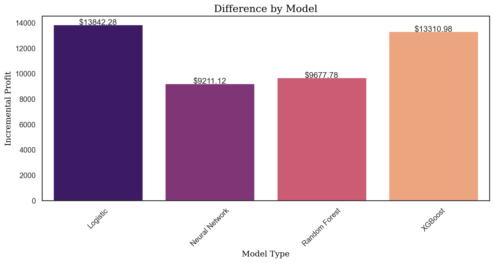

Code
import pandas as pd
import numpy as np
import pyrsm as rsm
from sklearn.model_selection import GridSearchCV
# setup pyrsm for autoreload
%reload_ext autoreload
%autoreload 2
%aimport pyrsmThis project will provide insights into the relative strengths and weaknesses of each modeling approach in the context of direct marketing, with a particular focus on maximizing the return on investment for marketing campaigns.
Executing a comprehensive analysis of predictive modeling techniques to refine customer targeting strategies. The techniques under comparison include logistic regression, neural networks, random forests, and XGBoost.
Implementing uplift modeling to evaluate the additional impact of targeting specific customers with marketing efforts.
Employing propensity scoring methods to estimate the probability of customer responses based on historical interaction data.
Main objective: Identify the modeling technique that most effectively pinpoints the top 30,000 customers from a pool of 120,000 who would yield the highest profit when targeted.
Uplift modeling is pivotal in understanding the causal effect of the marketing action, whereas the propensity score approach focuses on the predicted likelihood of customer behavior.
Post-identification of the top-performing model, an additional objective is to analyze and establish the most profitable segment size for targeting purposes, potentially adjusting the initial 30,000 target figure to optimize outreach and profitability.
The results from this study aim to guide marketing strategies, ensuring resource allocation is both efficient and effective.
The findings are expected to serve as a decision-making framework for marketing leaders in optimizing campaign strategies and improving customer engagement and retention.
import pandas as pd
import numpy as np
import pyrsm as rsm
from sklearn.model_selection import GridSearchCV
# setup pyrsm for autoreload
%reload_ext autoreload
%autoreload 2
%aimport pyrsm## loading the organic data - this dataset must NOT be changed
cg_organic_control = pd.read_parquet("cg_organic_control.parquet").reset_index(drop=True)
cg_organic_control.head()| converted | GameLevel | NumGameDays | NumGameDays4Plus | NumInGameMessagesSent | NumSpaceHeroBadges | NumFriendRequestIgnored | NumFriends | AcquiredSpaceship | AcquiredIonWeapon | TimesLostSpaceship | TimesKilled | TimesCaptain | TimesNavigator | PurchasedCoinPackSmall | PurchasedCoinPackLarge | NumAdsClicked | DaysUser | UserConsole | UserHasOldOS | |
|---|---|---|---|---|---|---|---|---|---|---|---|---|---|---|---|---|---|---|---|---|
| 0 | no | 7 | 18 | 0 | 124 | 0 | 81 | 0 | yes | no | 8 | 0 | 0 | 4 | no | yes | 3 | 2101 | no | no |
| 1 | no | 10 | 3 | 2 | 60 | 0 | 18 | 479 | no | no | 10 | 7 | 0 | 0 | yes | no | 7 | 1644 | yes | no |
| 2 | no | 2 | 1 | 0 | 0 | 0 | 0 | 0 | no | no | 0 | 0 | 0 | 2 | no | no | 8 | 3197 | yes | yes |
| 3 | no | 2 | 11 | 1 | 125 | 0 | 73 | 217 | no | no | 0 | 0 | 0 | 0 | yes | no | 6 | 913 | no | no |
| 4 | no | 8 | 15 | 0 | 0 | 0 | 6 | 51 | yes | no | 0 | 0 | 2 | 1 | yes | no | 21 | 2009 | yes | no |
## loading the treatment data
cg_ad_treatment = pd.read_parquet("cg_ad_treatment.parquet").reset_index(drop=True)
cg_ad_treatment.head()| converted | GameLevel | NumGameDays | NumGameDays4Plus | NumInGameMessagesSent | NumSpaceHeroBadges | NumFriendRequestIgnored | NumFriends | AcquiredSpaceship | AcquiredIonWeapon | ... | TimesKilled | TimesCaptain | TimesNavigator | PurchasedCoinPackSmall | PurchasedCoinPackLarge | NumAdsClicked | DaysUser | UserConsole | UserHasOldOS | rnd_30k | |
|---|---|---|---|---|---|---|---|---|---|---|---|---|---|---|---|---|---|---|---|---|---|
| 0 | no | 6 | 16 | 0 | 0 | 0 | 0 | 0 | yes | no | ... | 0 | 0 | 0 | no | no | 11 | 1827 | no | no | 0 |
| 1 | no | 2 | 8 | 0 | 0 | 0 | 5 | 4 | no | no | ... | 0 | 8 | 0 | yes | no | 3 | 1889 | no | yes | 1 |
| 2 | no | 6 | 1 | 0 | 0 | 0 | 0 | 0 | no | no | ... | 0 | 0 | 0 | no | yes | 2 | 1948 | yes | no | 0 |
| 3 | yes | 7 | 16 | 0 | 102 | 1 | 0 | 194 | no | no | ... | 0 | 0 | 0 | yes | yes | 21 | 3409 | yes | yes | 0 |
| 4 | no | 10 | 1 | 1 | 233 | 0 | 23 | 0 | no | no | ... | 0 | 5 | 0 | no | yes | 4 | 2922 | yes | no | 0 |
5 rows × 21 columns
| Variable | Description |
|---|---|
converted |
Purchased the Zalon campain (“yes” or “no”) |
GameLevel |
Highest level of game achieved by the user |
NumGameDays |
Number of days user played the game in last month (with or without network connection) |
NumGameDays4Plus |
Number of days user played the game in last month with 4 or more total users (this implies using a network connection) |
NumInGameMessagesSent |
Number of in-game messages sent to friends |
NumFriends |
Number of friends to which the user is connected (necessary to crew together in multiplayer mode) |
NumFriendRequestIgnored |
Number of friend requests this user has not replied to since game inception |
NumSpaceHeroBadges |
Number of “Space Hero” badges, the highest distinction for gameplay in Space Pirates |
AcquiredSpaceship |
Flag if the user owns a spaceship, i.e., does not have to crew on another user’s or NPC’s space ship (“no” or “yes”) |
AcquiredIonWeapon |
Flag if the user owns the powerful “ion weapon” (“no” or “yes”) |
TimesLostSpaceship |
The number of times the user destroyed his/her spaceship during gameplay. Spaceships need to be re-acquired if destroyed. |
TimesKilled |
Number of times the user was killed during gameplay |
TimesCaptain |
Number of times in last month that the user played in the role of a captain |
TimesNavigator |
Number of times in last month that the user played in the role of a navigator |
PurchasedCoinPackSmall |
Flag if the user purchased a small pack of Zathium in last month (“no” or “yes”) |
PurchasedCoinPackLarge |
Flag if the user purchased a large pack of Zathium in last month (“no” or “yes”) |
NumAdsClicked |
Number of in-app ads the user has clicked on |
DaysUser |
Number of days since user established a user ID with Creative Gaming (for Space Pirates or previous games) |
UserConsole |
Flag if the user plays Creative Gaming games on a console (“no” or “yes”) |
UserHasOldOS |
Flag if the user has iOS version 10 or earlier (“no” or “yes”) |
rnd_30k |
Dummy variable that randomly selects 30K customers (1) and the remaining 90K (0) |
# Load the ad random data"
cg_ad_random = pd.read_parquet("cg_ad_random.parquet")
cg_ad_random| converted | GameLevel | NumGameDays | NumGameDays4Plus | NumInGameMessagesSent | NumSpaceHeroBadges | NumFriendRequestIgnored | NumFriends | AcquiredSpaceship | AcquiredIonWeapon | TimesLostSpaceship | TimesKilled | TimesCaptain | TimesNavigator | PurchasedCoinPackSmall | PurchasedCoinPackLarge | NumAdsClicked | DaysUser | UserConsole | UserHasOldOS | |
|---|---|---|---|---|---|---|---|---|---|---|---|---|---|---|---|---|---|---|---|---|
| 0 | no | 2 | 8 | 0 | 0 | 0 | 5 | 4 | no | no | 0 | 0 | 8 | 0 | yes | no | 3 | 1889 | no | yes |
| 1 | no | 5 | 15 | 0 | 179 | 0 | 50 | 362 | yes | no | 22 | 0 | 4 | 4 | no | no | 2 | 1308 | yes | no |
| 2 | no | 7 | 7 | 0 | 267 | 0 | 64 | 0 | no | no | 5 | 0 | 0 | 0 | no | yes | 1 | 3562 | yes | no |
| 3 | no | 4 | 4 | 0 | 36 | 0 | 0 | 0 | no | no | 0 | 0 | 0 | 0 | no | no | 2 | 2922 | yes | no |
| 4 | no | 8 | 17 | 0 | 222 | 10 | 63 | 20 | yes | no | 10 | 0 | 9 | 6 | yes | no | 4 | 2192 | yes | no |
| ... | ... | ... | ... | ... | ... | ... | ... | ... | ... | ... | ... | ... | ... | ... | ... | ... | ... | ... | ... | ... |
| 29995 | no | 5 | 1 | 0 | 0 | 0 | 0 | 0 | no | no | 0 | 0 | 0 | 0 | yes | yes | 11 | 2374 | no | no |
| 29996 | no | 9 | 12 | 0 | 78 | 0 | 59 | 1 | yes | no | 16 | 0 | 0 | 5 | yes | no | 2 | 1978 | yes | no |
| 29997 | no | 9 | 19 | 1 | 271 | 0 | 71 | 95 | yes | no | 14 | 0 | 0 | 3 | no | no | 2 | 2831 | yes | yes |
| 29998 | no | 10 | 23 | 0 | 76 | 6 | 20 | 107 | no | no | 38 | 0 | 1 | 0 | no | no | 9 | 3197 | yes | no |
| 29999 | no | 6 | 8 | 0 | 115 | 0 | 13 | 0 | yes | no | 5 | 0 | 0 | 4 | no | no | 11 | 2343 | yes | no |
30000 rows × 20 columns
# a. Add "ad" to cg_ad_random and set its value to 1 for all rows
cg_ad_random["ad"] = 1
# b. Add "ad" to cg_organic_control and set its value to 0 for all rows
cg_organic_control["ad"] = 0
# c. Create a stacked dataset by combining cg_ad_random and cg_organic_control
cg_rct_stacked = pd.concat([cg_ad_random, cg_organic_control], axis=0)
cg_rct_stacked['converted_yes']= rsm.ifelse(
cg_rct_stacked.converted == "yes", 1, rsm.ifelse(cg_rct_stacked.converted == "no", 0, np.nan)
)
# d. Create a training variable
cg_rct_stacked['training'] = rsm.model.make_train(
data=cg_rct_stacked, test_size=0.3, strat_var=['converted', 'ad'], random_state = 1234)
# Check the proportions of the training variable
cg_rct_stacked.training.value_counts(normalize=True)training
1.0 0.7
0.0 0.3
Name: proportion, dtype: float64pd.crosstab(cg_rct_stacked.converted, [cg_rct_stacked.ad, cg_rct_stacked.training]).round(2)| ad | 0 | 1 | ||
|---|---|---|---|---|
| training | 0.0 | 1.0 | 0.0 | 1.0 |
| converted | ||||
| yes | 512 | 1194 | 1174 | 2739 |
| no | 8488 | 19806 | 7826 | 18261 |
len(cg_rct_stacked.query('training == 0 & ad == 0'))9000len(cg_rct_stacked.query('training == 0 & ad == 1'))9000# e. Check if the proportion of the training variable is similar across the ad and control groups
pd.crosstab(
cg_rct_stacked.converted, [cg_rct_stacked.ad, cg_rct_stacked.training], normalize="columns"
).round(3)| ad | 0 | 1 | ||
|---|---|---|---|---|
| training | 0.0 | 1.0 | 0.0 | 1.0 |
| converted | ||||
| yes | 0.057 | 0.057 | 0.13 | 0.13 |
| no | 0.943 | 0.943 | 0.87 | 0.87 |
# Assign variables to evar
evar = [
"GameLevel",
"NumGameDays",
"NumGameDays4Plus",
"NumInGameMessagesSent",
"NumFriends",
"NumFriendRequestIgnored",
"NumSpaceHeroBadges",
"AcquiredSpaceship",
"AcquiredIonWeapon",
"TimesLostSpaceship",
"TimesKilled",
"TimesCaptain",
"TimesNavigator",
"PurchasedCoinPackSmall",
"PurchasedCoinPackLarge",
"NumAdsClicked",
"DaysUser",
"UserConsole",
"UserHasOldOS"
]lr_treatment = rsm.model.logistic(
data = {'cg_rct_stacked': cg_rct_stacked.query("training == 1 & ad == 1")},
rvar = 'converted',
lev = 'yes',
evar = evar,
)
lr_treatment.summary()Logistic regression (GLM)
Data : cg_rct_stacked
Response variable : converted
Level : yes
Explanatory variables: GameLevel, NumGameDays, NumGameDays4Plus, NumInGameMessagesSent, NumFriends, NumFriendRequestIgnored, NumSpaceHeroBadges, AcquiredSpaceship, AcquiredIonWeapon, TimesLostSpaceship, TimesKilled, TimesCaptain, TimesNavigator, PurchasedCoinPackSmall, PurchasedCoinPackLarge, NumAdsClicked, DaysUser, UserConsole, UserHasOldOS
Null hyp.: There is no effect of x on converted
Alt. hyp.: There is an effect of x on converted
OR OR% coefficient std.error z.value p.value
Intercept 0.030 -97.0% -3.52 0.122 -28.987 < .001 ***
AcquiredSpaceship[yes] 1.088 8.8% 0.08 0.049 1.732 0.083 .
AcquiredIonWeapon[yes] 0.917 -8.3% -0.09 0.164 -0.533 0.594
PurchasedCoinPackSmall[yes] 1.045 4.5% 0.04 0.046 0.960 0.337
PurchasedCoinPackLarge[yes] 1.211 21.1% 0.19 0.049 3.930 < .001 ***
UserConsole[yes] 0.945 -5.5% -0.06 0.058 -0.979 0.328
UserHasOldOS[yes] 0.799 -20.1% -0.22 0.081 -2.752 0.006 **
GameLevel 1.059 5.9% 0.06 0.009 6.399 < .001 ***
NumGameDays 1.015 1.5% 0.02 0.004 4.264 < .001 ***
NumGameDays4Plus 1.011 1.1% 0.01 0.006 1.674 0.094 .
NumInGameMessagesSent 1.000 0.0% 0.00 0.000 0.205 0.838
NumFriends 1.002 0.2% 0.00 0.000 9.255 < .001 ***
NumFriendRequestIgnored 1.000 -0.0% -0.00 0.001 -0.484 0.628
NumSpaceHeroBadges 1.028 2.8% 0.03 0.009 2.968 0.003 **
TimesLostSpaceship 0.993 -0.7% -0.01 0.002 -2.964 0.003 **
TimesKilled 1.001 0.1% 0.00 0.006 0.201 0.841
TimesCaptain 1.005 0.5% 0.01 0.002 2.054 0.04 *
TimesNavigator 1.001 0.1% 0.00 0.003 0.205 0.838
NumAdsClicked 1.094 9.4% 0.09 0.003 33.156 < .001 ***
DaysUser 1.000 -0.0% -0.00 0.000 -0.469 0.639
Signif. codes: 0 '***' 0.001 '**' 0.01 '*' 0.05 '.' 0.1 ' ' 1
Pseudo R-squared (McFadden): 0.096
Pseudo R-squared (McFadden adjusted): 0.094
Area under the RO Curve (AUC): 0.712
Log-likelihood: -7346.776, AIC: 14733.552, BIC: 14892.598
Chi-squared: 1568.873, df(19), p.value < 0.001
Nr obs: 21,000lr_control = rsm.model.logistic(
data={'cg_rct_stacked': cg_rct_stacked.query("training == 1 & ad == 0")},
rvar = 'converted',
lev = 'yes',
evar = evar
)
lr_control.summary()Logistic regression (GLM)
Data : cg_rct_stacked
Response variable : converted
Level : yes
Explanatory variables: GameLevel, NumGameDays, NumGameDays4Plus, NumInGameMessagesSent, NumFriends, NumFriendRequestIgnored, NumSpaceHeroBadges, AcquiredSpaceship, AcquiredIonWeapon, TimesLostSpaceship, TimesKilled, TimesCaptain, TimesNavigator, PurchasedCoinPackSmall, PurchasedCoinPackLarge, NumAdsClicked, DaysUser, UserConsole, UserHasOldOS
Null hyp.: There is no effect of x on converted
Alt. hyp.: There is an effect of x on converted
OR OR% coefficient std.error z.value p.value
Intercept 0.006 -99.4% -5.18 0.193 -26.809 < .001 ***
AcquiredSpaceship[yes] 1.594 59.4% 0.47 0.072 6.472 < .001 ***
AcquiredIonWeapon[yes] 0.860 -14.0% -0.15 0.267 -0.566 0.571
PurchasedCoinPackSmall[yes] 1.029 2.9% 0.03 0.069 0.415 0.678
PurchasedCoinPackLarge[yes] 1.338 33.8% 0.29 0.074 3.947 < .001 ***
UserConsole[yes] 1.148 14.8% 0.14 0.093 1.490 0.136
UserHasOldOS[yes] 0.832 -16.8% -0.18 0.124 -1.479 0.139
GameLevel 1.114 11.4% 0.11 0.014 7.527 < .001 ***
NumGameDays 1.033 3.3% 0.03 0.005 5.954 < .001 ***
NumGameDays4Plus 1.047 4.7% 0.05 0.008 5.538 < .001 ***
NumInGameMessagesSent 1.001 0.1% 0.00 0.000 3.311 < .001 ***
NumFriends 1.001 0.1% 0.00 0.000 4.809 < .001 ***
NumFriendRequestIgnored 0.989 -1.1% -0.01 0.001 -8.415 < .001 ***
NumSpaceHeroBadges 1.523 52.3% 0.42 0.013 32.587 < .001 ***
TimesLostSpaceship 0.946 -5.4% -0.06 0.006 -9.189 < .001 ***
TimesKilled 1.006 0.6% 0.01 0.005 1.103 0.27
TimesCaptain 0.998 -0.2% -0.00 0.003 -0.487 0.626
TimesNavigator 0.989 -1.1% -0.01 0.005 -2.365 0.018 *
NumAdsClicked 1.031 3.1% 0.03 0.004 8.114 < .001 ***
DaysUser 1.000 0.0% 0.00 0.000 2.335 0.02 *
Signif. codes: 0 '***' 0.001 '**' 0.01 '*' 0.05 '.' 0.1 ' ' 1
Pseudo R-squared (McFadden): 0.202
Pseudo R-squared (McFadden adjusted): 0.198
Area under the RO Curve (AUC): 0.831
Log-likelihood: -3656.883, AIC: 7353.766, BIC: 7512.812
Chi-squared: 1851.927, df(19), p.value < 0.001
Nr obs: 21,000cg_rct_stacked["pred_treatment"] = lr_treatment.predict(cg_rct_stacked)["prediction"]
cg_rct_stacked["pred_control"] = lr_control.predict(cg_rct_stacked)["prediction"]pred_store = pd.DataFrame({
"pred_treatment": cg_rct_stacked.pred_treatment,
"pred_control": cg_rct_stacked.pred_control
})
cg_rct_stacked["uplift_score"] = (
cg_rct_stacked.pred_treatment - cg_rct_stacked.pred_control
)Uplift Tab
uplift_tab = rsm.uplift_tab(
cg_rct_stacked.query("training == 0"), "converted", "yes", "uplift_score", "ad", 1, qnt = 20
)
uplift_tab| pred | bins | cum_prop | T_resp | T_n | C_resp | C_n | incremental_resp | inc_uplift | uplift | |
|---|---|---|---|---|---|---|---|---|---|---|
| 0 | uplift_score | 1 | 0.05 | 197 | 450 | 70 | 634 | 147.315457 | 1.636838 | 0.327368 |
| 1 | uplift_score | 2 | 0.10 | 309 | 900 | 99 | 1182 | 233.619289 | 2.595770 | 0.195969 |
| 2 | uplift_score | 3 | 0.15 | 428 | 1350 | 125 | 1686 | 327.911032 | 3.643456 | 0.212857 |
| 3 | uplift_score | 4 | 0.20 | 528 | 1800 | 152 | 2175 | 402.206897 | 4.468966 | 0.167007 |
| 4 | uplift_score | 5 | 0.25 | 594 | 2250 | 166 | 2684 | 454.842027 | 5.053800 | 0.119162 |
| 5 | uplift_score | 6 | 0.30 | 642 | 2700 | 183 | 3150 | 485.142857 | 5.390476 | 0.070186 |
| 6 | uplift_score | 7 | 0.35 | 681 | 3150 | 195 | 3658 | 513.080372 | 5.700893 | 0.063045 |
| 7 | uplift_score | 8 | 0.40 | 719 | 3600 | 200 | 4127 | 544.539133 | 6.050435 | 0.073783 |
| 8 | uplift_score | 9 | 0.45 | 756 | 4050 | 210 | 4577 | 570.179594 | 6.335329 | 0.060000 |
| 9 | uplift_score | 10 | 0.50 | 791 | 4500 | 231 | 5076 | 586.212766 | 6.513475 | 0.035694 |
| 10 | uplift_score | 11 | 0.55 | 831 | 4950 | 249 | 5555 | 609.118812 | 6.767987 | 0.051311 |
| 11 | uplift_score | 12 | 0.60 | 859 | 5400 | 262 | 6031 | 624.412038 | 6.937912 | 0.034911 |
| 12 | uplift_score | 13 | 0.65 | 892 | 5850 | 275 | 6486 | 643.965772 | 7.155175 | 0.044762 |
| 13 | uplift_score | 14 | 0.70 | 937 | 6300 | 288 | 6938 | 675.483713 | 7.505375 | 0.071239 |
| 14 | uplift_score | 15 | 0.75 | 980 | 6750 | 298 | 7384 | 707.586674 | 7.862074 | 0.073134 |
| 15 | uplift_score | 16 | 0.80 | 1014 | 7200 | 312 | 7805 | 726.184497 | 8.068717 | 0.042301 |
| 16 | uplift_score | 17 | 0.85 | 1047 | 7650 | 319 | 8224 | 750.264835 | 8.336276 | 0.056627 |
| 17 | uplift_score | 18 | 0.90 | 1079 | 8100 | 360 | 8621 | 740.756177 | 8.230624 | -0.032163 |
| 18 | uplift_score | 19 | 0.95 | 1134 | 8550 | 432 | 8831 | 715.746122 | 7.952735 | -0.220635 |
| 19 | uplift_score | 20 | 1.00 | 1174 | 9000 | 512 | 9000 | 662.000000 | 7.355556 | -0.384484 |
Gain Plot
fig = rsm.inc_uplift_plot(
cg_rct_stacked.query("training == 0"), "converted", "yes", "uplift_score", "ad", 1, qnt = 20
)The curve starts at 0% uplift when 0% of the population is targeted (as expected, because no one has been exposed to the campaign).
As the percentage of the targeted population increases, the incremental uplift also increases, suggesting that targeting more of the population is yielding positive results.
The curve rises sharply at first, indicating that initially targeting the most responsive segments of the population yields significant uplift.
After reaching a peak (which seems to be just under 80% of the population targeted), the incremental uplift begins to plateau or decrease slightly, suggesting that beyond this point, targeting additional segments of the population adds less value or could potentially include less responsive or non-responsive individuals.
fig = rsm.uplift_plot(
cg_rct_stacked.query("training == 0"), "converted", "yes", "uplift_score", "ad", 1, qnt = 20
)The first decile (the top 10% predicted to be most responsive) shows the highest uplift, above 20%.
The uplift decreases across subsequent deciles, which is consistent with the expectation that the first deciles contain the most responsive individuals.
There is a noticeable decline in uplift as we move to higher deciles. The uplift becomes negative in the last deciles, indicating that targeting these segments would result in worse outcomes than if they were not targeted at all.
Negative uplift in the later deciles could indicate that the campaign has a counterproductive effect on these individuals or that they would have been better or equally likely to take the desired action without the campaign intervention.
price = 14.99
cost = 1.5target_row = uplift_tab[uplift_tab['cum_prop'] <= 0.25].iloc[-1]
target_rowpred uplift_score
bins 5
cum_prop 0.25
T_resp 594
T_n 2250
C_resp 166
C_n 2684
incremental_resp 454.842027
inc_uplift 5.0538
uplift 0.119162
Name: 4, dtype: object# Define the function to calculate the profit
def prof_calc(data, price = 14.99, cost = 1.5):
# Given variables
target_customers = 30000
target_prop = 30000 / 120000
# Calculate the scale factor
scale_factor = 120000 / 9000
# Calculate the expected incremental customers and profits
target_row = data[data['cum_prop'] <= target_prop].iloc[-1]
profit = (price*target_row['incremental_resp'] - cost * target_row['T_n']) * scale_factor
return profituplift_profit_logit = prof_calc(uplift_tab, 14.99, 1.5)
uplift_profit_logit45907.75976154993propensity_tab = rsm.uplift_tab(
cg_rct_stacked.query("training == 0"), "converted", "yes", "pred_treatment", "ad", 1, qnt = 20)
propensity_tab| pred | bins | cum_prop | T_resp | T_n | C_resp | C_n | incremental_resp | inc_uplift | uplift | |
|---|---|---|---|---|---|---|---|---|---|---|
| 0 | pred_treatment | 1 | 0.05 | 204 | 450 | 80 | 603 | 144.298507 | 1.603317 | 0.320663 |
| 1 | pred_treatment | 2 | 0.10 | 326 | 900 | 112 | 1131 | 236.875332 | 2.631948 | 0.210505 |
| 2 | pred_treatment | 3 | 0.15 | 430 | 1350 | 159 | 1605 | 296.261682 | 3.291796 | 0.131955 |
| 3 | pred_treatment | 4 | 0.20 | 525 | 1800 | 206 | 1994 | 339.042126 | 3.767135 | 0.090288 |
| 4 | pred_treatment | 5 | 0.25 | 615 | 2250 | 239 | 2344 | 385.584471 | 4.284272 | 0.105714 |
| 5 | pred_treatment | 6 | 0.30 | 672 | 2700 | 285 | 2807 | 397.863912 | 4.420710 | 0.027315 |
| 6 | pred_treatment | 7 | 0.35 | 726 | 3150 | 316 | 3162 | 411.199241 | 4.568880 | 0.032676 |
| 7 | pred_treatment | 8 | 0.40 | 775 | 3600 | 336 | 3603 | 439.279767 | 4.880886 | 0.063537 |
| 8 | pred_treatment | 9 | 0.45 | 813 | 4050 | 361 | 4044 | 451.464392 | 5.016271 | 0.027755 |
| 9 | pred_treatment | 10 | 0.50 | 838 | 4500 | 386 | 4527 | 454.302187 | 5.047802 | 0.003796 |
| 10 | pred_treatment | 11 | 0.55 | 885 | 4950 | 409 | 4991 | 479.359848 | 5.326221 | 0.054875 |
| 11 | pred_treatment | 12 | 0.60 | 916 | 5400 | 436 | 5479 | 486.286549 | 5.403184 | 0.013561 |
| 12 | pred_treatment | 13 | 0.65 | 951 | 5850 | 455 | 5880 | 498.321429 | 5.536905 | 0.030396 |
| 13 | pred_treatment | 14 | 0.70 | 995 | 6300 | 464 | 6332 | 533.344915 | 5.926055 | 0.077866 |
| 14 | pred_treatment | 15 | 0.75 | 1028 | 6750 | 475 | 6793 | 556.006772 | 6.177853 | 0.049472 |
| 15 | pred_treatment | 16 | 0.80 | 1065 | 7200 | 483 | 7256 | 585.727674 | 6.508085 | 0.064944 |
| 16 | pred_treatment | 17 | 0.85 | 1091 | 7650 | 495 | 7649 | 595.935286 | 6.621503 | 0.027243 |
| 17 | pred_treatment | 18 | 0.90 | 1120 | 8100 | 499 | 8093 | 620.568392 | 6.895204 | 0.055435 |
| 18 | pred_treatment | 19 | 0.95 | 1148 | 8550 | 508 | 8571 | 641.244662 | 7.124941 | 0.043394 |
| 19 | pred_treatment | 20 | 1.00 | 1174 | 9000 | 512 | 9000 | 662.000000 | 7.355556 | 0.048454 |
fig = rsm.inc_uplift_plot(
cg_rct_stacked.query("training == 0"), "converted", "yes", "pred_treatment", "ad", 1, qnt = 20)fig = rsm.uplift_plot(
cg_rct_stacked.query("training == 0"),
"converted", "yes", "pred_treatment", "ad", 1, qnt = 20)fig = rsm.inc_uplift_plot(
cg_rct_stacked.query("training == 0"),
"converted",
"yes",
["pred_treatment", "uplift_score"],
"ad",
1, qnt = 20
)Uplift Model Performance: The line for the uplift_score generally lies above the line for the pred_treatment, indicating that the uplift model consistently provides a higher incremental uplift across the different percentages of the population targeted.
Diminishing Returns: Both lines show a trend of diminishing returns as more of the population is targeted, with the incremental uplift peaking and then plateauing or slightly decreasing, suggesting an optimal targeting point before 100%.
Comparison: The propensity model appears to perform better than random targeting (which would be a straight line from the origin), but the uplift model is more effective in achieving incremental gains. This suggests that while the propensity model can identify likely responders, the uplift model is better at identifying those for whom the treatment would make a difference in their behavior.
fig = rsm.uplift_plot(
cg_rct_stacked.query("training == 0"),
"converted",
"yes",
["pred_treatment", "uplift_score"],
"ad",
1, qnt = 20
)Uplift Distribution: Both sets of bars show a decrease in uplift as we move through the population segments, which is expected as the most responsive individuals are often targeted first.
Model Comparison: In some segments, the uplift_score bars are higher than the pred_treatment bars, reinforcing the idea that the uplift model is more effective in certain segments.
Negative Uplift: Towards the latter segments, both models show negative uplift, but the uplift_score model tends to have less severe negative values. The uplift model places customers with high incrementality in earlier deciles. The incrementality is lower for propensity model because it targets Persuadables and Sure Things whereas the uplift model targets only the former. This suggests that the uplift model may be better at minimizing the risk of targeting individuals who would have a negative response to the treatment.
That said, the propensity model still performs well here; this is because the customers who have the best propensity also tend to have the best uplift in this data:
cm = rsm.correlation(
{"cg_rct_stacked": cg_rct_stacked.loc[cg_rct_stacked.training == 0, "pred_treatment": "uplift_score"]})
cm.summary()Correlation
Data : cg_rct_stacked
Method : pearson
Cutoff : 0
Variables: pred_treatment, pred_control, uplift_score
Null hyp.: variables x and y are not correlated
Alt. hyp.: variables x and y are correlated
Correlation matrix:
pred_treatment pred_control
pred_control 0.28
uplift_score 0.55 -0.65
p.values:
pred_treatment pred_control
pred_control 0.0
uplift_score 0.0 0.0The positive correlation between pred_treatment and uplift_score is in line with what we would expect, as a higher predicted treatment response should correspond with a higher uplift score. The negative correlation between pred_control and uplift_score suggests that individuals who are likely to respond without any intervention (as predicted by the control model) are properly being identified as not contributing to uplift, which is a desirable feature of a good uplift model.
propensity_profit_logit = prof_calc(propensity_tab, 14.99, 1.5)
propensity_profit_logit32065.482935153585# Difference in profits from using uplift model and propensity model
difference_logit = uplift_profit_logit - propensity_profit_logit
difference_logit13842.276826396348clf_treatment = rsm.model.mlp(
data = {'cg_rct_stacked': cg_rct_stacked.query("training == 1 & ad == 1")},
rvar = 'converted',
lev = 'yes',
evar = evar,
hidden_layer_sizes = (1, ),
alpha = 0.1
)
clf_treatment.summary()Multi-layer Perceptron (NN)
Data : cg_rct_stacked
Response variable : converted
Level : yes
Explanatory variables: GameLevel, NumGameDays, NumGameDays4Plus, NumInGameMessagesSent, NumFriends, NumFriendRequestIgnored, NumSpaceHeroBadges, AcquiredSpaceship, AcquiredIonWeapon, TimesLostSpaceship, TimesKilled, TimesCaptain, TimesNavigator, PurchasedCoinPackSmall, PurchasedCoinPackLarge, NumAdsClicked, DaysUser, UserConsole, UserHasOldOS
Model type : classification
Nr. of features : (19, 19)
Nr. of observations : 21,000
Hidden_layer_sizes : (1,)
Activation function : tanh
Solver : lbfgs
Alpha : 0.1
Batch size : auto
Learning rate : 0.001
Maximum iterations : 10000
random_state : 1234
AUC : 0.712
Raw data :
GameLevel NumGameDays NumGameDays4Plus NumInGameMessagesSent NumFriends NumFriendRequestIgnored NumSpaceHeroBadges AcquiredSpaceship AcquiredIonWeapon TimesLostSpaceship TimesKilled TimesCaptain TimesNavigator PurchasedCoinPackSmall PurchasedCoinPackLarge NumAdsClicked DaysUser UserConsole UserHasOldOS
5 15 0 179 362 50 0 yes no 22 0 4 4 no no 2 1308 yes no
4 4 0 36 0 0 0 no no 0 0 0 0 no no 2 2922 yes no
8 17 0 222 20 63 10 yes no 10 0 9 6 yes no 4 2192 yes no
10 18 2 0 56 6 2 no no 1 0 0 0 no yes 13 2313 yes no
10 20 5 36 0 16 0 no no 0 0 0 0 no yes 9 1766 yes no
Estimation data :
GameLevel NumGameDays NumGameDays4Plus NumInGameMessagesSent NumFriends NumFriendRequestIgnored NumSpaceHeroBadges TimesLostSpaceship TimesKilled TimesCaptain TimesNavigator NumAdsClicked DaysUser AcquiredSpaceship_yes AcquiredIonWeapon_yes PurchasedCoinPackSmall_yes PurchasedCoinPackLarge_yes UserConsole_yes UserHasOldOS_yes
-0.480555 0.361225 -0.411200 0.968856 3.186178 0.577047 -0.371464 1.269286 -0.081624 0.347884 0.390873 -0.988082 -1.999414 True False False False True False
-0.842392 -1.185248 -0.411200 -0.360274 -0.525098 -0.876726 -0.371464 -0.301827 -0.081624 -0.205861 -0.201936 -0.988082 0.439831 False False False False True False
0.604958 0.642403 -0.411200 1.368525 -0.320055 0.955027 4.091205 0.412315 -0.081624 1.040065 0.687277 -0.695079 -0.663421 True False True False True False
1.328633 0.782991 0.170373 -0.694880 0.049022 -0.702273 0.521070 -0.230413 -0.081624 -0.205861 -0.201936 0.623433 -0.480554 False False False True True False
1.328633 1.064168 1.042734 -0.360274 -0.525098 -0.411519 -0.371464 -0.301827 -0.081624 -0.205861 -0.201936 0.037428 -1.307237 False False False True True Falsehls = [(1,), (2,), (3,), (3, 3), (4, 2), (5, 5), (5,), (10,), (5,10), (10,5)]
alpha = [0.0001, 0.001, 0.01, 0.1, 1]
param_grid = {"hidden_layer_sizes": hls, "alpha": alpha}
scoring = {"AUC": "roc_auc"}
clf_cv_treatment = GridSearchCV(
clf_treatment.fitted, param_grid, scoring=scoring, cv=5, n_jobs=4, refit="AUC", verbose=5
)clf_cv_treatment.fit(clf_treatment.data_onehot, clf_treatment.data.converted_yes)Fitting 5 folds for each of 50 candidates, totalling 250 fits/Users/duyentran/Library/Python/3.11/lib/python/site-packages/sklearn/neural_network/_multilayer_perceptron.py:546: ConvergenceWarning: lbfgs failed to converge (status=1):
STOP: TOTAL NO. of ITERATIONS REACHED LIMIT.
Increase the number of iterations (max_iter) or scale the data as shown in:
https://scikit-learn.org/stable/modules/preprocessing.html
self.n_iter_ = _check_optimize_result("lbfgs", opt_res, self.max_iter)
/Users/duyentran/Library/Python/3.11/lib/python/site-packages/sklearn/neural_network/_multilayer_perceptron.py:546: ConvergenceWarning: lbfgs failed to converge (status=1):
STOP: TOTAL NO. of ITERATIONS REACHED LIMIT.
Increase the number of iterations (max_iter) or scale the data as shown in:
https://scikit-learn.org/stable/modules/preprocessing.html
self.n_iter_ = _check_optimize_result("lbfgs", opt_res, self.max_iter)GridSearchCV(cv=5,
estimator=MLPClassifier(activation='tanh', alpha=0.1,
hidden_layer_sizes=(1,), max_iter=10000,
random_state=1234, solver='lbfgs'),
n_jobs=4,
param_grid={'alpha': [0.0001, 0.001, 0.01, 0.1, 1],
'hidden_layer_sizes': [(1,), (2,), (3,), (3, 3),
(4, 2), (5, 5), (5,), (10,),
(5, 10), (10, 5)]},
refit='AUC', scoring={'AUC': 'roc_auc'}, verbose=5)In a Jupyter environment, please rerun this cell to show the HTML representation or trust the notebook. GridSearchCV(cv=5,
estimator=MLPClassifier(activation='tanh', alpha=0.1,
hidden_layer_sizes=(1,), max_iter=10000,
random_state=1234, solver='lbfgs'),
n_jobs=4,
param_grid={'alpha': [0.0001, 0.001, 0.01, 0.1, 1],
'hidden_layer_sizes': [(1,), (2,), (3,), (3, 3),
(4, 2), (5, 5), (5,), (10,),
(5, 10), (10, 5)]},
refit='AUC', scoring={'AUC': 'roc_auc'}, verbose=5)MLPClassifier(activation='tanh', alpha=0.1, hidden_layer_sizes=(1,),
max_iter=10000, random_state=1234, solver='lbfgs')MLPClassifier(activation='tanh', alpha=0.1, hidden_layer_sizes=(1,),
max_iter=10000, random_state=1234, solver='lbfgs')clf_cv_treatment.best_params_{'alpha': 0.0001, 'hidden_layer_sizes': (4, 2)}clf_treatment = rsm.model.mlp(
data = {'cg_rct_stacked': cg_rct_stacked.query("training == 1 & ad == 1")},
rvar = 'converted',
lev = 'yes',
evar = evar,
**clf_cv_treatment.best_params_
)
clf_treatment.summary()Multi-layer Perceptron (NN)
Data : cg_rct_stacked
Response variable : converted
Level : yes
Explanatory variables: GameLevel, NumGameDays, NumGameDays4Plus, NumInGameMessagesSent, NumFriends, NumFriendRequestIgnored, NumSpaceHeroBadges, AcquiredSpaceship, AcquiredIonWeapon, TimesLostSpaceship, TimesKilled, TimesCaptain, TimesNavigator, PurchasedCoinPackSmall, PurchasedCoinPackLarge, NumAdsClicked, DaysUser, UserConsole, UserHasOldOS
Model type : classification
Nr. of features : (19, 19)
Nr. of observations : 21,000
Hidden_layer_sizes : (4, 2)
Activation function : tanh
Solver : lbfgs
Alpha : 0.0001
Batch size : auto
Learning rate : 0.001
Maximum iterations : 10000
random_state : 1234
AUC : 0.792
Raw data :
GameLevel NumGameDays NumGameDays4Plus NumInGameMessagesSent NumFriends NumFriendRequestIgnored NumSpaceHeroBadges AcquiredSpaceship AcquiredIonWeapon TimesLostSpaceship TimesKilled TimesCaptain TimesNavigator PurchasedCoinPackSmall PurchasedCoinPackLarge NumAdsClicked DaysUser UserConsole UserHasOldOS
5 15 0 179 362 50 0 yes no 22 0 4 4 no no 2 1308 yes no
4 4 0 36 0 0 0 no no 0 0 0 0 no no 2 2922 yes no
8 17 0 222 20 63 10 yes no 10 0 9 6 yes no 4 2192 yes no
10 18 2 0 56 6 2 no no 1 0 0 0 no yes 13 2313 yes no
10 20 5 36 0 16 0 no no 0 0 0 0 no yes 9 1766 yes no
Estimation data :
GameLevel NumGameDays NumGameDays4Plus NumInGameMessagesSent NumFriends NumFriendRequestIgnored NumSpaceHeroBadges TimesLostSpaceship TimesKilled TimesCaptain TimesNavigator NumAdsClicked DaysUser AcquiredSpaceship_yes AcquiredIonWeapon_yes PurchasedCoinPackSmall_yes PurchasedCoinPackLarge_yes UserConsole_yes UserHasOldOS_yes
-0.480555 0.361225 -0.411200 0.968856 3.186178 0.577047 -0.371464 1.269286 -0.081624 0.347884 0.390873 -0.988082 -1.999414 True False False False True False
-0.842392 -1.185248 -0.411200 -0.360274 -0.525098 -0.876726 -0.371464 -0.301827 -0.081624 -0.205861 -0.201936 -0.988082 0.439831 False False False False True False
0.604958 0.642403 -0.411200 1.368525 -0.320055 0.955027 4.091205 0.412315 -0.081624 1.040065 0.687277 -0.695079 -0.663421 True False True False True False
1.328633 0.782991 0.170373 -0.694880 0.049022 -0.702273 0.521070 -0.230413 -0.081624 -0.205861 -0.201936 0.623433 -0.480554 False False False True True False
1.328633 1.064168 1.042734 -0.360274 -0.525098 -0.411519 -0.371464 -0.301827 -0.081624 -0.205861 -0.201936 0.037428 -1.307237 False False False True True Falseclf_control = rsm.model.mlp(
data = {'cg_rct_stacked': cg_rct_stacked.query("training == 1 & ad == 0")},
rvar = 'converted',
lev = 'yes',
evar = evar,
hidden_layer_sizes = (1, ),
alpha = 0.0001
)
clf_control.summary()Multi-layer Perceptron (NN)
Data : cg_rct_stacked
Response variable : converted
Level : yes
Explanatory variables: GameLevel, NumGameDays, NumGameDays4Plus, NumInGameMessagesSent, NumFriends, NumFriendRequestIgnored, NumSpaceHeroBadges, AcquiredSpaceship, AcquiredIonWeapon, TimesLostSpaceship, TimesKilled, TimesCaptain, TimesNavigator, PurchasedCoinPackSmall, PurchasedCoinPackLarge, NumAdsClicked, DaysUser, UserConsole, UserHasOldOS
Model type : classification
Nr. of features : (19, 19)
Nr. of observations : 21,000
Hidden_layer_sizes : (1,)
Activation function : tanh
Solver : lbfgs
Alpha : 0.0001
Batch size : auto
Learning rate : 0.001
Maximum iterations : 10000
random_state : 1234
AUC : 0.841
Raw data :
GameLevel NumGameDays NumGameDays4Plus NumInGameMessagesSent NumFriends NumFriendRequestIgnored NumSpaceHeroBadges AcquiredSpaceship AcquiredIonWeapon TimesLostSpaceship TimesKilled TimesCaptain TimesNavigator PurchasedCoinPackSmall PurchasedCoinPackLarge NumAdsClicked DaysUser UserConsole UserHasOldOS
7 18 0 124 0 81 0 yes no 8 0 0 4 no yes 3 2101 no no
10 3 2 60 479 18 0 no no 10 7 0 0 yes no 7 1644 yes no
2 1 0 0 0 0 0 no no 0 0 0 2 no no 8 3197 yes yes
8 15 0 0 51 6 0 yes no 0 0 2 1 yes no 21 2009 yes no
10 18 0 0 0 0 0 no no 0 0 0 0 yes no 6 3288 yes no
Estimation data :
GameLevel NumGameDays NumGameDays4Plus NumInGameMessagesSent NumFriends NumFriendRequestIgnored NumSpaceHeroBadges TimesLostSpaceship TimesKilled TimesCaptain TimesNavigator NumAdsClicked DaysUser AcquiredSpaceship_yes AcquiredIonWeapon_yes PurchasedCoinPackSmall_yes PurchasedCoinPackLarge_yes UserConsole_yes UserHasOldOS_yes
0.283862 0.806405 -0.399092 0.485069 -0.513099 1.509762 -0.29461 0.343880 -0.075167 -0.180445 0.397524 -0.868677 -0.787337 True False False True False False
1.373047 -1.292688 0.204178 -0.119399 4.411754 -0.342325 -0.29461 0.527329 1.452288 -0.180445 -0.209504 -0.333738 -1.475407 False False True False True False
-1.531446 -1.572567 -0.399092 -0.686088 -0.513099 -0.871493 -0.29461 -0.389917 -0.075167 -0.180445 0.094010 -0.200003 0.862827 False False False False True True
0.646924 0.386586 -0.399092 -0.686088 0.011259 -0.695104 -0.29461 -0.389917 -0.075167 0.052946 -0.057747 1.538548 -0.925854 True False True False True False
1.373047 0.806405 -0.399092 -0.686088 -0.513099 -0.871493 -0.29461 -0.389917 -0.075167 -0.180445 -0.209504 -0.467473 0.999839 False False True False True False# Model tunning
clf_cv_control = GridSearchCV(
clf_control.fitted, param_grid, scoring=scoring, cv=5, n_jobs=4, refit="AUC", verbose=5
)
clf_cv_control.fit(clf_control.data_onehot, clf_control.data.converted_yes)Fitting 5 folds for each of 50 candidates, totalling 250 fitsGridSearchCV(cv=5,
estimator=MLPClassifier(activation='tanh', hidden_layer_sizes=(1,),
max_iter=10000, random_state=1234,
solver='lbfgs'),
n_jobs=4,
param_grid={'alpha': [0.0001, 0.001, 0.01, 0.1, 1],
'hidden_layer_sizes': [(1,), (2,), (3,), (3, 3),
(4, 2), (5, 5), (5,), (10,),
(5, 10), (10, 5)]},
refit='AUC', scoring={'AUC': 'roc_auc'}, verbose=5)In a Jupyter environment, please rerun this cell to show the HTML representation or trust the notebook. GridSearchCV(cv=5,
estimator=MLPClassifier(activation='tanh', hidden_layer_sizes=(1,),
max_iter=10000, random_state=1234,
solver='lbfgs'),
n_jobs=4,
param_grid={'alpha': [0.0001, 0.001, 0.01, 0.1, 1],
'hidden_layer_sizes': [(1,), (2,), (3,), (3, 3),
(4, 2), (5, 5), (5,), (10,),
(5, 10), (10, 5)]},
refit='AUC', scoring={'AUC': 'roc_auc'}, verbose=5)MLPClassifier(activation='tanh', hidden_layer_sizes=(1,), max_iter=10000,
random_state=1234, solver='lbfgs')MLPClassifier(activation='tanh', hidden_layer_sizes=(1,), max_iter=10000,
random_state=1234, solver='lbfgs')clf_cv_control.best_params_{'alpha': 1, 'hidden_layer_sizes': (3, 3)}clf_control = rsm.model.mlp(
data = {'cg_rct_stacked': cg_rct_stacked.query("training == 1 & ad == 0")},
rvar = 'converted',
lev = 'yes',
evar = evar,
**clf_cv_control.best_params_
)
clf_control.summary()Multi-layer Perceptron (NN)
Data : cg_rct_stacked
Response variable : converted
Level : yes
Explanatory variables: GameLevel, NumGameDays, NumGameDays4Plus, NumInGameMessagesSent, NumFriends, NumFriendRequestIgnored, NumSpaceHeroBadges, AcquiredSpaceship, AcquiredIonWeapon, TimesLostSpaceship, TimesKilled, TimesCaptain, TimesNavigator, PurchasedCoinPackSmall, PurchasedCoinPackLarge, NumAdsClicked, DaysUser, UserConsole, UserHasOldOS
Model type : classification
Nr. of features : (19, 19)
Nr. of observations : 21,000
Hidden_layer_sizes : (3, 3)
Activation function : tanh
Solver : lbfgs
Alpha : 1
Batch size : auto
Learning rate : 0.001
Maximum iterations : 10000
random_state : 1234
AUC : 0.861
Raw data :
GameLevel NumGameDays NumGameDays4Plus NumInGameMessagesSent NumFriends NumFriendRequestIgnored NumSpaceHeroBadges AcquiredSpaceship AcquiredIonWeapon TimesLostSpaceship TimesKilled TimesCaptain TimesNavigator PurchasedCoinPackSmall PurchasedCoinPackLarge NumAdsClicked DaysUser UserConsole UserHasOldOS
7 18 0 124 0 81 0 yes no 8 0 0 4 no yes 3 2101 no no
10 3 2 60 479 18 0 no no 10 7 0 0 yes no 7 1644 yes no
2 1 0 0 0 0 0 no no 0 0 0 2 no no 8 3197 yes yes
8 15 0 0 51 6 0 yes no 0 0 2 1 yes no 21 2009 yes no
10 18 0 0 0 0 0 no no 0 0 0 0 yes no 6 3288 yes no
Estimation data :
GameLevel NumGameDays NumGameDays4Plus NumInGameMessagesSent NumFriends NumFriendRequestIgnored NumSpaceHeroBadges TimesLostSpaceship TimesKilled TimesCaptain TimesNavigator NumAdsClicked DaysUser AcquiredSpaceship_yes AcquiredIonWeapon_yes PurchasedCoinPackSmall_yes PurchasedCoinPackLarge_yes UserConsole_yes UserHasOldOS_yes
0.283862 0.806405 -0.399092 0.485069 -0.513099 1.509762 -0.29461 0.343880 -0.075167 -0.180445 0.397524 -0.868677 -0.787337 True False False True False False
1.373047 -1.292688 0.204178 -0.119399 4.411754 -0.342325 -0.29461 0.527329 1.452288 -0.180445 -0.209504 -0.333738 -1.475407 False False True False True False
-1.531446 -1.572567 -0.399092 -0.686088 -0.513099 -0.871493 -0.29461 -0.389917 -0.075167 -0.180445 0.094010 -0.200003 0.862827 False False False False True True
0.646924 0.386586 -0.399092 -0.686088 0.011259 -0.695104 -0.29461 -0.389917 -0.075167 0.052946 -0.057747 1.538548 -0.925854 True False True False True False
1.373047 0.806405 -0.399092 -0.686088 -0.513099 -0.871493 -0.29461 -0.389917 -0.075167 -0.180445 -0.209504 -0.467473 0.999839 False False True False True Falsecg_rct_stacked["pred_treatment_nn"] = clf_treatment.predict(cg_rct_stacked)["prediction"]
cg_rct_stacked["pred_control_nn"] = clf_control.predict(cg_rct_stacked)["prediction"]cg_rct_stacked["uplift_score_nn"] = (
cg_rct_stacked.pred_treatment_nn - cg_rct_stacked.pred_control_nn
)uplift_tab_nn = rsm.uplift_tab(
cg_rct_stacked.query("training == 0"), "converted", "yes", "uplift_score_nn", "ad", 1, qnt = 20
)
uplift_tab_nn| pred | bins | cum_prop | T_resp | T_n | C_resp | C_n | incremental_resp | inc_uplift | uplift | |
|---|---|---|---|---|---|---|---|---|---|---|
| 0 | uplift_score_nn | 1 | 0.05 | 198 | 450 | 71 | 597 | 144.482412 | 1.605360 | 0.321072 |
| 1 | uplift_score_nn | 2 | 0.10 | 354 | 900 | 113 | 1138 | 264.632689 | 2.940363 | 0.269033 |
| 2 | uplift_score_nn | 3 | 0.15 | 476 | 1350 | 138 | 1650 | 363.090909 | 4.034343 | 0.222283 |
| 3 | uplift_score_nn | 4 | 0.20 | 588 | 1800 | 174 | 2164 | 443.268022 | 4.925200 | 0.178850 |
| 4 | uplift_score_nn | 5 | 0.25 | 673 | 2250 | 204 | 2661 | 500.508455 | 5.561205 | 0.128527 |
| 5 | uplift_score_nn | 6 | 0.30 | 754 | 2700 | 233 | 3172 | 555.670870 | 6.174121 | 0.123249 |
| 6 | uplift_score_nn | 7 | 0.35 | 811 | 3150 | 250 | 3696 | 597.931818 | 6.643687 | 0.094224 |
| 7 | uplift_score_nn | 8 | 0.40 | 854 | 3600 | 259 | 4186 | 631.257525 | 7.013973 | 0.077188 |
| 8 | uplift_score_nn | 9 | 0.45 | 893 | 4050 | 271 | 4696 | 659.279813 | 7.325331 | 0.063137 |
| 9 | uplift_score_nn | 10 | 0.50 | 931 | 4500 | 282 | 5210 | 687.429942 | 7.638110 | 0.063044 |
| 10 | uplift_score_nn | 11 | 0.55 | 969 | 4950 | 294 | 5668 | 712.242766 | 7.913809 | 0.058244 |
| 11 | uplift_score_nn | 12 | 0.60 | 987 | 5400 | 299 | 6090 | 721.876847 | 8.020854 | 0.028152 |
| 12 | uplift_score_nn | 13 | 0.65 | 1003 | 5850 | 304 | 6539 | 731.031809 | 8.122576 | 0.024420 |
| 13 | uplift_score_nn | 14 | 0.70 | 1025 | 6300 | 306 | 6926 | 746.657522 | 8.296195 | 0.043721 |
| 14 | uplift_score_nn | 15 | 0.75 | 1037 | 6750 | 311 | 7387 | 752.818329 | 8.364648 | 0.015821 |
| 15 | uplift_score_nn | 16 | 0.80 | 1052 | 7200 | 319 | 7799 | 757.500705 | 8.416675 | 0.013916 |
| 16 | uplift_score_nn | 17 | 0.85 | 1063 | 7650 | 326 | 8249 | 760.672445 | 8.451916 | 0.008889 |
| 17 | uplift_score_nn | 18 | 0.90 | 1087 | 8100 | 353 | 8631 | 755.717414 | 8.396860 | -0.017347 |
| 18 | uplift_score_nn | 19 | 0.95 | 1138 | 8550 | 431 | 8846 | 721.421886 | 8.015799 | -0.249457 |
| 19 | uplift_score_nn | 20 | 1.00 | 1174 | 9000 | 512 | 9000 | 662.000000 | 7.355556 | -0.445974 |
fig = rsm.inc_uplift_plot(
cg_rct_stacked.query("training == 0"), "converted", "yes", "uplift_score_nn", "ad", 1, qnt = 20
)fig = rsm.uplift_plot(
cg_rct_stacked.query("training == 0"), "converted", "yes", "uplift_score_nn", "ad", 1, qnt = 20
)This pattern indicates that the first segments are highly responsive to the campaign, while the later segments may have been negatively influenced by the campaign or would have been better off not being targeted at all.
uplift_profit_nn = prof_calc(uplift_tab_nn, 14.99, 1.5)
uplift_profit_nn55034.9566328448prop_tab_nn = rsm.uplift_tab(
cg_rct_stacked.query("training == 0"), "converted", "yes", "pred_treatment_nn", "ad", 1, qnt = 20
)
prop_tab_nn| pred | bins | cum_prop | T_resp | T_n | C_resp | C_n | incremental_resp | inc_uplift | uplift | |
|---|---|---|---|---|---|---|---|---|---|---|
| 0 | pred_treatment_nn | 1 | 0.05 | 201 | 450 | 74 | 586 | 144.174061 | 1.601934 | 0.320387 |
| 1 | pred_treatment_nn | 2 | 0.10 | 351 | 900 | 140 | 1076 | 233.899628 | 2.598885 | 0.198639 |
| 2 | pred_treatment_nn | 3 | 0.15 | 475 | 1350 | 178 | 1561 | 321.060218 | 3.567336 | 0.197205 |
| 3 | pred_treatment_nn | 4 | 0.20 | 589 | 1800 | 220 | 2044 | 395.262231 | 4.391803 | 0.166377 |
| 4 | pred_treatment_nn | 5 | 0.25 | 686 | 2250 | 257 | 2497 | 454.422107 | 5.049135 | 0.133878 |
| 5 | pred_treatment_nn | 6 | 0.30 | 765 | 2700 | 293 | 2962 | 497.916948 | 5.532411 | 0.098136 |
| 6 | pred_treatment_nn | 7 | 0.35 | 833 | 3150 | 346 | 3352 | 507.850835 | 5.642787 | 0.015214 |
| 7 | pred_treatment_nn | 8 | 0.40 | 896 | 3600 | 396 | 3698 | 510.494321 | 5.672159 | -0.004509 |
| 8 | pred_treatment_nn | 9 | 0.45 | 941 | 4050 | 444 | 4013 | 492.906305 | 5.476737 | -0.052381 |
| 9 | pred_treatment_nn | 10 | 0.50 | 982 | 4500 | 477 | 4398 | 493.937244 | 5.488192 | 0.005397 |
| 10 | pred_treatment_nn | 11 | 0.55 | 1023 | 4950 | 486 | 4870 | 529.016427 | 5.877960 | 0.072043 |
| 11 | pred_treatment_nn | 12 | 0.60 | 1053 | 5400 | 491 | 5383 | 560.449378 | 6.227215 | 0.056920 |
| 12 | pred_treatment_nn | 13 | 0.65 | 1083 | 5850 | 496 | 5908 | 591.869330 | 6.576326 | 0.057143 |
| 13 | pred_treatment_nn | 14 | 0.70 | 1102 | 6300 | 503 | 6352 | 603.117758 | 6.701308 | 0.026456 |
| 14 | pred_treatment_nn | 15 | 0.75 | 1116 | 6750 | 505 | 6835 | 617.280176 | 6.858669 | 0.026970 |
| 15 | pred_treatment_nn | 16 | 0.80 | 1131 | 7200 | 506 | 7272 | 630.009901 | 7.000110 | 0.031045 |
| 16 | pred_treatment_nn | 17 | 0.85 | 1143 | 7650 | 507 | 7657 | 636.463497 | 7.071817 | 0.024069 |
| 17 | pred_treatment_nn | 18 | 0.90 | 1161 | 8100 | 509 | 8123 | 653.441216 | 7.260458 | 0.035708 |
| 18 | pred_treatment_nn | 19 | 0.95 | 1170 | 8550 | 510 | 8541 | 659.462592 | 7.327362 | 0.017608 |
| 19 | pred_treatment_nn | 20 | 1.00 | 1174 | 9000 | 512 | 9000 | 662.000000 | 7.355556 | 0.004532 |
fig = rsm.inc_uplift_plot(
cg_rct_stacked.query("training == 0"),
"converted",
"yes",
["pred_treatment_nn", "uplift_score_nn"],
"ad",
1, qnt = 20
)The uplift_score_nn line generally lies above the pred_treatment_nn line, indicating that the uplift model predicts a higher incremental uplift across the different segments of the targeted population.
Both lines show a rise in incremental uplift with an increase in the targeted population, reaching a peak, and then beginning to plateau, suggesting a point of diminishing returns.
The uplift model’s curve suggests that targeting based on its scores leads to higher incremental gains compared to the propensity model, which is likely predicting the likelihood of response to the treatment without considering the control group’s response.
fig = rsm.uplift_plot(
cg_rct_stacked.query("training == 0"),
"converted",
"yes",
["pred_treatment_nn", "uplift_score_nn"],
"ad",
1, qnt = 20
)
The uplift decreases from the first to the last segment, which suggests that the initial segments are the most responsive to the targeting. The treatment model shows positive uplift in the early segments but drops off more sharply than the uplift model in later segments, indicating that the treatment model might be less effective at distinguishing between those who will respond due to the treatment and those who would have responded anyway.
The uplift model has a more gradual decline in uplift across segments and less negative uplift in the lower segments, which could imply that it is more effective at targeting the right individuals.
The negative values in later segments for both models suggest that certain individuals are either not influenced by or negatively influenced by the treatment. This could represent individuals who might purchase or respond anyway, so the propensity might have been an unnecessary expense for this group, or it could represent a group for whom the treatment had an adverse effect.
propensity_profit_nn = prof_calc(prop_tab_nn, 14.99, 1.5)
propensity_profit_nn45823.831691362975# Different profit between Uplift model and Propensity model
difference_nn = uplift_profit_nn - propensity_profit_nn
difference_nn9211.124941481823rf_treatment = rsm.model.rforest(
data = {'cg_rct_stacked': cg_rct_stacked.query("training == 1 & ad == 1")},
rvar = 'converted',
lev = 'yes',
evar = evar,
)
rf_treatment.summary()Random Forest
Data : cg_rct_stacked
Response variable : converted
Level : yes
Explanatory variables: GameLevel, NumGameDays, NumGameDays4Plus, NumInGameMessagesSent, NumFriends, NumFriendRequestIgnored, NumSpaceHeroBadges, AcquiredSpaceship, AcquiredIonWeapon, TimesLostSpaceship, TimesKilled, TimesCaptain, TimesNavigator, PurchasedCoinPackSmall, PurchasedCoinPackLarge, NumAdsClicked, DaysUser, UserConsole, UserHasOldOS
OOB : True
Model type : classification
Nr. of features : (19, 19)
Nr. of observations : 21,000
max_features : sqrt (4)
n_estimators : 100
min_samples_leaf : 1
random_state : 1234
AUC : 0.761
Estimation data :
GameLevel NumGameDays NumGameDays4Plus NumInGameMessagesSent NumFriends NumFriendRequestIgnored NumSpaceHeroBadges TimesLostSpaceship TimesKilled TimesCaptain TimesNavigator NumAdsClicked DaysUser AcquiredSpaceship_yes AcquiredIonWeapon_yes PurchasedCoinPackSmall_yes PurchasedCoinPackLarge_yes UserConsole_yes UserHasOldOS_yes
5 15 0 179 362 50 0 22 0 4 4 2 1308 True False False False True False
4 4 0 36 0 0 0 0 0 0 0 2 2922 False False False False True False
8 17 0 222 20 63 10 10 0 9 6 4 2192 True False True False True False
10 18 2 0 56 6 2 1 0 0 0 13 2313 False False False True True False
10 20 5 36 0 16 0 0 0 0 0 9 1766 False False False True True Falsemax_features = [None, 'auto', 'sqrt', 'log2', 0.25, 0.5, 0.75, 1.0, 2.0, 3.0, 4.0]
n_estimators = [10, 50, 100, 200, 500, 1000]
param_grid = {"max_features": max_features, "n_estimators": n_estimators}
scoring = {"AUC": "roc_auc"}
rf_cv_treatment = GridSearchCV(rf_treatment.fitted, param_grid, scoring=scoring, cv=5, n_jobs=4, refit="AUC", verbose=5)rf_cv_treatment.fit(rf_treatment.data_onehot, rf_treatment.data.converted_yes)Fitting 5 folds for each of 66 candidates, totalling 330 fits
[CV 1/5] END alpha=0.0001, hidden_layer_sizes=(1,); AUC: (test=0.711) total time= 0.2s
[CV 1/5] END alpha=0.0001, hidden_layer_sizes=(2,); AUC: (test=0.755) total time= 1.3s
[CV 1/5] END alpha=0.0001, hidden_layer_sizes=(3,); AUC: (test=0.755) total time= 7.4s
[CV 4/5] END alpha=0.0001, hidden_layer_sizes=(3, 3); AUC: (test=0.773) total time= 14.7s
[CV 2/5] END alpha=0.0001, hidden_layer_sizes=(4, 2); AUC: (test=0.777) total time= 14.7s
[CV 1/5] END alpha=0.0001, hidden_layer_sizes=(5, 5); AUC: (test=0.766) total time= 20.0s
[CV 5/5] END alpha=0.0001, hidden_layer_sizes=(5, 5); AUC: (test=0.769) total time= 13.5s
[CV 4/5] END alpha=0.0001, hidden_layer_sizes=(5,); AUC: (test=0.791) total time= 2.5s
[CV 1/5] END alpha=0.0001, hidden_layer_sizes=(10,); AUC: (test=0.759) total time= 2.1s
[CV 4/5] END alpha=0.0001, hidden_layer_sizes=(10,); AUC: (test=0.712) total time= 2.8s
[CV 3/5] END alpha=0.0001, hidden_layer_sizes=(5, 10); AUC: (test=0.752) total time= 1.5min
[CV 2/5] END alpha=0.0001, hidden_layer_sizes=(10, 5); AUC: (test=0.726) total time= 37.2s
[CV 5/5] END alpha=0.001, hidden_layer_sizes=(1,); AUC: (test=0.699) total time= 0.1s
[CV 2/5] END alpha=0.001, hidden_layer_sizes=(2,); AUC: (test=0.737) total time= 1.1s
[CV 3/5] END alpha=0.001, hidden_layer_sizes=(2,); AUC: (test=0.753) total time= 3.4s
[CV 1/5] END alpha=0.001, hidden_layer_sizes=(3,); AUC: (test=0.755) total time= 10.0s
[CV 4/5] END alpha=0.001, hidden_layer_sizes=(3, 3); AUC: (test=0.777) total time= 33.6s
[CV 5/5] END alpha=0.001, hidden_layer_sizes=(4, 2); AUC: (test=0.772) total time= 15.7s
[CV 4/5] END alpha=0.001, hidden_layer_sizes=(5, 5); AUC: (test=0.779) total time= 21.0s
[CV 1/5] END alpha=0.001, hidden_layer_sizes=(5,); AUC: (test=0.763) total time= 1.5s
[CV 2/5] END alpha=0.001, hidden_layer_sizes=(5,); AUC: (test=0.774) total time= 1.0s
[CV 3/5] END alpha=0.001, hidden_layer_sizes=(5,); AUC: (test=0.774) total time= 5.8s
[CV 3/5] END alpha=0.001, hidden_layer_sizes=(10,); AUC: (test=0.768) total time= 2.5s
[CV 1/5] END alpha=0.001, hidden_layer_sizes=(5, 10); AUC: (test=0.743) total time= 1.2min
[CV 1/5] END alpha=0.001, hidden_layer_sizes=(10, 5); AUC: (test=0.749) total time= 36.9s
[CV 3/5] END alpha=0.01, hidden_layer_sizes=(2,); AUC: (test=0.749) total time= 1.3s
[CV 1/5] END alpha=0.01, hidden_layer_sizes=(3,); AUC: (test=0.757) total time= 13.4s
[CV 4/5] END alpha=0.01, hidden_layer_sizes=(3, 3); AUC: (test=0.762) total time= 14.7s
[CV 3/5] END alpha=0.01, hidden_layer_sizes=(4, 2); AUC: (test=0.775) total time= 7.1s
[CV 2/5] END alpha=0.01, hidden_layer_sizes=(5, 5); AUC: (test=0.776) total time= 22.2s
[CV 1/5] END alpha=0.01, hidden_layer_sizes=(5,); AUC: (test=0.766) total time= 1.3s
[CV 2/5] END alpha=0.01, hidden_layer_sizes=(5,); AUC: (test=0.769) total time= 1.4s
[CV 3/5] END alpha=0.01, hidden_layer_sizes=(5,); AUC: (test=0.773) total time= 2.2s
[CV 4/5] END alpha=0.01, hidden_layer_sizes=(5,); AUC: (test=0.788) total time= 2.1s
[CV 5/5] END alpha=0.01, hidden_layer_sizes=(5,); AUC: (test=0.771) total time= 2.2s
[CV 1/5] END alpha=0.01, hidden_layer_sizes=(10,); AUC: (test=0.760) total time= 2.1s
[CV 2/5] END alpha=0.01, hidden_layer_sizes=(10,); AUC: (test=0.744) total time= 2.0s
[CV 4/5] END alpha=0.01, hidden_layer_sizes=(10,); AUC: (test=0.728) total time= 3.7s
[CV 1/5] END alpha=0.01, hidden_layer_sizes=(5, 10); AUC: (test=0.749) total time= 53.4s
[CV 1/5] END alpha=0.01, hidden_layer_sizes=(10, 5); AUC: (test=0.740) total time= 23.3s
[CV 5/5] END alpha=0.01, hidden_layer_sizes=(10, 5); AUC: (test=0.703) total time= 11.6s
[CV 2/5] END alpha=0.1, hidden_layer_sizes=(3, 3); AUC: (test=0.759) total time= 8.4s
[CV 1/5] END alpha=0.1, hidden_layer_sizes=(4, 2); AUC: (test=0.778) total time= 17.7s
[CV 5/5] END alpha=0.1, hidden_layer_sizes=(4, 2); AUC: (test=0.771) total time= 13.3s
[CV 3/5] END alpha=0.1, hidden_layer_sizes=(5, 5); AUC: (test=0.772) total time= 22.4s
[CV 4/5] END alpha=0.1, hidden_layer_sizes=(10,); AUC: (test=0.734) total time= 1.6s
[CV 5/5] END alpha=0.1, hidden_layer_sizes=(10,); AUC: (test=0.750) total time= 2.6s
[CV 4/5] END alpha=0.1, hidden_layer_sizes=(5, 10); AUC: (test=0.786) total time= 33.8s
[CV 3/5] END alpha=0.1, hidden_layer_sizes=(10, 5); AUC: (test=0.748) total time= 9.6s
[CV 1/5] END alpha=1, hidden_layer_sizes=(1,); AUC: (test=0.711) total time= 0.1s
[CV 2/5] END alpha=1, hidden_layer_sizes=(1,); AUC: (test=0.719) total time= 0.1s
[CV 3/5] END alpha=1, hidden_layer_sizes=(1,); AUC: (test=0.711) total time= 0.1s
[CV 4/5] END alpha=1, hidden_layer_sizes=(1,); AUC: (test=0.703) total time= 0.1s
[CV 5/5] END alpha=1, hidden_layer_sizes=(1,); AUC: (test=0.699) total time= 0.2s
[CV 1/5] END alpha=1, hidden_layer_sizes=(2,); AUC: (test=0.741) total time= 0.3s
[CV 2/5] END alpha=1, hidden_layer_sizes=(2,); AUC: (test=0.734) total time= 0.2s
[CV 3/5] END alpha=1, hidden_layer_sizes=(2,); AUC: (test=0.738) total time= 0.4s
[CV 4/5] END alpha=1, hidden_layer_sizes=(2,); AUC: (test=0.740) total time= 0.2s
[CV 5/5] END alpha=1, hidden_layer_sizes=(2,); AUC: (test=0.730) total time= 0.4s
[CV 1/5] END alpha=1, hidden_layer_sizes=(3,); AUC: (test=0.744) total time= 0.8s
[CV 5/5] END alpha=1, hidden_layer_sizes=(3,); AUC: (test=0.741) total time= 1.5s
[CV 4/5] END alpha=1, hidden_layer_sizes=(3, 3); AUC: (test=0.770) total time= 2.6s
[CV 1/5] END alpha=1, hidden_layer_sizes=(4, 2); AUC: (test=0.774) total time= 5.2s
[CV 1/5] END alpha=1, hidden_layer_sizes=(5, 5); AUC: (test=0.763) total time= 9.2s
[CV 3/5] END alpha=1, hidden_layer_sizes=(5,); AUC: (test=0.758) total time= 1.0s
[CV 4/5] END alpha=1, hidden_layer_sizes=(5,); AUC: (test=0.767) total time= 0.8s
[CV 1/5] END alpha=1, hidden_layer_sizes=(10,); AUC: (test=0.753) total time= 1.6s
[CV 3/5] END alpha=1, hidden_layer_sizes=(10,); AUC: (test=0.755) total time= 2.6s
[CV 4/5] END alpha=1, hidden_layer_sizes=(5, 10); AUC: (test=0.786) total time= 18.2s
[CV 1/5] END alpha=1, hidden_layer_sizes=(10, 5); AUC: (test=0.753) total time= 6.7s
[CV 5/5] END alpha=1, hidden_layer_sizes=(10, 5); AUC: (test=0.737) total time= 10.5s
[CV 2/5] END alpha=0.0001, hidden_layer_sizes=(1,); AUC: (test=0.829) total time= 0.1s
[CV 1/5] END alpha=0.0001, hidden_layer_sizes=(2,); AUC: (test=0.836) total time= 0.3s
[CV 5/5] END alpha=0.0001, hidden_layer_sizes=(3,); AUC: (test=0.851) total time= 0.4s
[CV 1/5] END alpha=0.0001, hidden_layer_sizes=(3, 3); AUC: (test=0.834) total time= 1.4s
[CV 3/5] END alpha=0.0001, hidden_layer_sizes=(4, 2); AUC: (test=0.823) total time= 1.3s
[CV 4/5] END alpha=0.0001, hidden_layer_sizes=(4, 2); AUC: (test=0.813) total time= 1.7s
[CV 4/5] END alpha=0.0001, hidden_layer_sizes=(5, 5); AUC: (test=0.795) total time= 3.8s
[CV 5/5] END alpha=0.0001, hidden_layer_sizes=(5, 5); AUC: (test=0.835) total time= 14.0s
[CV 4/5] END alpha=0.0001, hidden_layer_sizes=(5, 10); AUC: (test=0.791) total time= 7.3s
[CV 5/5] END alpha=0.0001, hidden_layer_sizes=(5, 10); AUC: (test=0.852) total time= 34.9s
[CV 4/5] END alpha=0.001, hidden_layer_sizes=(5, 5); AUC: (test=0.792) total time= 15.5s
[CV 4/5] END alpha=0.001, hidden_layer_sizes=(5, 10); AUC: (test=0.777) total time= 10.1s
[CV 3/5] END alpha=0.001, hidden_layer_sizes=(10, 5); AUC: (test=0.798) total time= 9.0s
[CV 5/5] END alpha=0.001, hidden_layer_sizes=(10, 5); AUC: (test=0.821) total time= 6.9s
[CV 1/5] END alpha=0.01, hidden_layer_sizes=(1,); AUC: (test=0.845) total time= 0.1s
[CV 2/5] END alpha=0.01, hidden_layer_sizes=(1,); AUC: (test=0.829) total time= 0.1s
[CV 4/5] END alpha=0.01, hidden_layer_sizes=(1,); AUC: (test=0.823) total time= 0.2s
[CV 2/5] END alpha=0.01, hidden_layer_sizes=(2,); AUC: (test=0.839) total time= 0.2s
[CV 4/5] END alpha=0.01, hidden_layer_sizes=(2,); AUC: (test=0.826) total time= 0.3s
[CV 1/5] END alpha=0.01, hidden_layer_sizes=(3,); AUC: (test=0.844) total time= 0.4s
[CV 3/5] END alpha=0.01, hidden_layer_sizes=(3,); AUC: (test=0.832) total time= 0.2s
[CV 5/5] END alpha=0.01, hidden_layer_sizes=(3,); AUC: (test=0.851) total time= 0.5s
[CV 2/5] END alpha=0.01, hidden_layer_sizes=(3, 3); AUC: (test=0.840) total time= 2.0s
[CV 3/5] END alpha=0.01, hidden_layer_sizes=(3, 3); AUC: (test=0.843) total time= 2.2s
[CV 5/5] END alpha=0.01, hidden_layer_sizes=(3, 3); AUC: (test=0.852) total time= 5.7s
[CV 4/5] END alpha=0.01, hidden_layer_sizes=(5, 5); AUC: (test=0.797) total time= 4.0s
[CV 5/5] END alpha=0.01, hidden_layer_sizes=(5,); AUC: (test=0.853) total time= 0.3s
[CV 2/5] END alpha=0.01, hidden_layer_sizes=(10,); AUC: (test=0.819) total time= 1.2s
[CV 4/5] END alpha=0.01, hidden_layer_sizes=(10,); AUC: (test=0.798) total time= 1.4s
[CV 2/5] END alpha=0.01, hidden_layer_sizes=(5, 10); AUC: (test=0.813) total time= 13.6s
[CV 1/5] END alpha=0.01, hidden_layer_sizes=(10, 5); AUC: (test=0.824) total time= 9.6s
[CV 3/5] END alpha=0.01, hidden_layer_sizes=(10, 5); AUC: (test=0.790) total time= 5.1s
[CV 1/5] END alpha=0.1, hidden_layer_sizes=(1,); AUC: (test=0.845) total time= 0.1s
[CV 2/5] END alpha=0.1, hidden_layer_sizes=(1,); AUC: (test=0.829) total time= 0.1s
[CV 3/5] END alpha=0.1, hidden_layer_sizes=(1,); AUC: (test=0.826) total time= 0.1s
[CV 4/5] END alpha=0.1, hidden_layer_sizes=(1,); AUC: (test=0.823) total time= 0.1s
[CV 5/5] END alpha=0.1, hidden_layer_sizes=(1,); AUC: (test=0.849) total time= 0.1s
[CV 1/5] END alpha=0.1, hidden_layer_sizes=(2,); AUC: (test=0.834) total time= 0.3s
[CV 2/5] END alpha=0.1, hidden_layer_sizes=(2,); AUC: (test=0.839) total time= 0.2s
[CV 3/5] END alpha=0.1, hidden_layer_sizes=(2,); AUC: (test=0.835) total time= 0.2s
[CV 4/5] END alpha=0.1, hidden_layer_sizes=(2,); AUC: (test=0.826) total time= 0.4s
[CV 5/5] END alpha=0.1, hidden_layer_sizes=(2,); AUC: (test=0.853) total time= 0.3s
[CV 1/5] END alpha=0.1, hidden_layer_sizes=(3,); AUC: (test=0.845) total time= 0.3s
[CV 2/5] END alpha=0.1, hidden_layer_sizes=(3,); AUC: (test=0.836) total time= 0.3s
[CV 3/5] END alpha=0.1, hidden_layer_sizes=(3,); AUC: (test=0.833) total time= 0.2s
[CV 4/5] END alpha=0.1, hidden_layer_sizes=(3,); AUC: (test=0.823) total time= 0.5s
[CV 5/5] END alpha=0.1, hidden_layer_sizes=(3,); AUC: (test=0.851) total time= 0.3s
[CV 1/5] END alpha=0.1, hidden_layer_sizes=(3, 3); AUC: (test=0.840) total time= 1.6s
[CV 3/5] END alpha=0.1, hidden_layer_sizes=(3, 3); AUC: (test=0.846) total time= 1.3s
[CV 5/5] END alpha=0.1, hidden_layer_sizes=(3, 3); AUC: (test=0.844) total time= 1.8s
[CV 3/5] END alpha=0.1, hidden_layer_sizes=(4, 2); AUC: (test=0.832) total time= 0.4s
[CV 5/5] END alpha=0.1, hidden_layer_sizes=(4, 2); AUC: (test=0.856) total time= 1.3s
[CV 2/5] END alpha=0.1, hidden_layer_sizes=(5, 5); AUC: (test=0.827) total time= 1.9s
[CV 3/5] END alpha=0.1, hidden_layer_sizes=(5, 5); AUC: (test=0.842) total time= 2.3s
[CV 1/5] END alpha=0.1, hidden_layer_sizes=(5,); AUC: (test=0.850) total time= 0.5s
[CV 2/5] END alpha=0.1, hidden_layer_sizes=(5,); AUC: (test=0.835) total time= 0.5s
[CV 3/5] END alpha=0.1, hidden_layer_sizes=(5,); AUC: (test=0.835) total time= 1.4s
[CV 4/5] END alpha=0.1, hidden_layer_sizes=(5,); AUC: (test=0.827) total time= 0.6s
[CV 5/5] END alpha=0.1, hidden_layer_sizes=(5,); AUC: (test=0.852) total time= 0.5s
[CV 1/5] END alpha=0.1, hidden_layer_sizes=(10,); AUC: (test=0.856) total time= 1.6s
[CV 3/5] END alpha=0.1, hidden_layer_sizes=(10,); AUC: (test=0.823) total time= 1.5s
[CV 5/5] END alpha=0.1, hidden_layer_sizes=(10,); AUC: (test=0.864) total time= 2.5s
[CV 2/5] END alpha=0.1, hidden_layer_sizes=(5, 10); AUC: (test=0.840) total time= 21.7s
[CV 3/5] END alpha=1, hidden_layer_sizes=(2,); AUC: (test=0.836) total time= 0.2s
[CV 5/5] END alpha=1, hidden_layer_sizes=(2,); AUC: (test=0.855) total time= 0.3s
[CV 2/5] END alpha=1, hidden_layer_sizes=(3,); AUC: (test=0.835) total time= 0.3s
[CV 3/5] END alpha=1, hidden_layer_sizes=(3,); AUC: (test=0.837) total time= 0.5s
[CV 5/5] END alpha=1, hidden_layer_sizes=(3,); AUC: (test=0.854) total time= 0.8s
[CV 2/5] END alpha=1, hidden_layer_sizes=(3, 3); AUC: (test=0.854) total time= 2.3s
[CV 2/5] END alpha=1, hidden_layer_sizes=(4, 2); AUC: (test=0.846) total time= 2.4s
[CV 4/5] END alpha=1, hidden_layer_sizes=(5, 5); AUC: (test=0.825) total time= 2.3s
[CV 1/5] END alpha=1, hidden_layer_sizes=(5,); AUC: (test=0.853) total time= 0.5s
[CV 3/5] END alpha=1, hidden_layer_sizes=(5,); AUC: (test=0.848) total time= 0.6s
[CV 1/5] END alpha=1, hidden_layer_sizes=(10,); AUC: (test=0.847) total time= 1.2s
[CV 4/5] END alpha=1, hidden_layer_sizes=(10,); AUC: (test=0.825) total time= 1.6s
[CV 1/5] END alpha=1, hidden_layer_sizes=(5, 10); AUC: (test=0.825) total time= 3.9s
[CV 1/5] END alpha=1, hidden_layer_sizes=(10, 5); AUC: (test=0.839) total time= 4.1s
[CV 5/5] END alpha=1, hidden_layer_sizes=(10, 5); AUC: (test=0.818) total time= 2.6s
[CV 3/5] END max_features=None, n_estimators=10; AUC: (test=0.719) total time= 0.5s
[CV 1/5] END max_features=None, n_estimators=50; AUC: (test=0.749) total time= 3.0s
[CV 1/5] END max_features=None, n_estimators=100; AUC: (test=0.757) total time= 6.6s
[CV 5/5] END max_features=None, n_estimators=100; AUC: (test=0.752) total time= 6.5s
[CV 4/5] END max_features=None, n_estimators=200; AUC: (test=0.766) total time= 14.8s
[CV 3/5] END max_features=None, n_estimators=500; AUC: (test=0.765) total time= 31.9s
[CV 2/5] END max_features=None, n_estimators=1000; AUC: (test=0.763) total time= 1.1min
[CV 1/5] END max_features=auto, n_estimators=10; AUC: (test=nan) total time= 0.0s
[CV 2/5] END max_features=auto, n_estimators=10; AUC: (test=nan) total time= 0.0s
[CV 3/5] END max_features=auto, n_estimators=10; AUC: (test=nan) total time= 0.0s
[CV 4/5] END max_features=auto, n_estimators=10; AUC: (test=nan) total time= 0.0s
[CV 5/5] END max_features=auto, n_estimators=10; AUC: (test=nan) total time= 0.0s
[CV 1/5] END max_features=auto, n_estimators=50; AUC: (test=nan) total time= 0.0s
[CV 2/5] END max_features=auto, n_estimators=50; AUC: (test=nan) total time= 0.0s
[CV 3/5] END max_features=auto, n_estimators=50; AUC: (test=nan) total time= 0.0s
[CV 4/5] END max_features=auto, n_estimators=50; AUC: (test=nan) total time= 0.0s
[CV 5/5] END max_features=auto, n_estimators=50; AUC: (test=nan) total time= 0.0s
[CV 1/5] END max_features=auto, n_estimators=100; AUC: (test=nan) total time= 0.0s
[CV 2/5] END max_features=auto, n_estimators=100; AUC: (test=nan) total time= 0.0s
[CV 3/5] END max_features=auto, n_estimators=100; AUC: (test=nan) total time= 0.0s
[CV 4/5] END max_features=auto, n_estimators=100; AUC: (test=nan) total time= 0.0s
[CV 5/5] END max_features=auto, n_estimators=100; AUC: (test=nan) total time= 0.0s
[CV 1/5] END max_features=auto, n_estimators=200; AUC: (test=nan) total time= 0.0s
[CV 2/5] END max_features=auto, n_estimators=200; AUC: (test=nan) total time= 0.0s
[CV 3/5] END max_features=auto, n_estimators=200; AUC: (test=nan) total time= 0.0s
[CV 4/5] END max_features=auto, n_estimators=200; AUC: (test=nan) total time= 0.0s
[CV 5/5] END max_features=auto, n_estimators=200; AUC: (test=nan) total time= 0.0s
[CV 1/5] END max_features=auto, n_estimators=500; AUC: (test=nan) total time= 0.0s
[CV 2/5] END max_features=auto, n_estimators=500; AUC: (test=nan) total time= 0.0s
[CV 3/5] END max_features=auto, n_estimators=500; AUC: (test=nan) total time= 0.0s
[CV 4/5] END max_features=auto, n_estimators=500; AUC: (test=nan) total time= 0.0s
[CV 5/5] END max_features=auto, n_estimators=500; AUC: (test=nan) total time= 0.0s
[CV 1/5] END max_features=auto, n_estimators=1000; AUC: (test=nan) total time= 0.0s
[CV 2/5] END max_features=auto, n_estimators=1000; AUC: (test=nan) total time= 0.0s
[CV 3/5] END max_features=auto, n_estimators=1000; AUC: (test=nan) total time= 0.0s
[CV 4/5] END max_features=auto, n_estimators=1000; AUC: (test=nan) total time= 0.0s
[CV 5/5] END max_features=auto, n_estimators=1000; AUC: (test=nan) total time= 0.0s
[CV 1/5] END max_features=sqrt, n_estimators=10; AUC: (test=0.721) total time= 0.2s
[CV 2/5] END max_features=sqrt, n_estimators=10; AUC: (test=0.714) total time= 0.2s
[CV 3/5] END max_features=sqrt, n_estimators=10; AUC: (test=0.711) total time= 0.2s
[CV 4/5] END max_features=sqrt, n_estimators=10; AUC: (test=0.697) total time= 0.2s
[CV 5/5] END max_features=sqrt, n_estimators=10; AUC: (test=0.703) total time= 0.2s
[CV 1/5] END max_features=sqrt, n_estimators=50; AUC: (test=0.770) total time= 0.9s
[CV 2/5] END max_features=sqrt, n_estimators=50; AUC: (test=0.755) total time= 0.9s
[CV 3/5] END max_features=sqrt, n_estimators=50; AUC: (test=0.772) total time= 0.9s
[CV 4/5] END max_features=sqrt, n_estimators=50; AUC: (test=0.757) total time= 0.9s
[CV 5/5] END max_features=sqrt, n_estimators=50; AUC: (test=0.750) total time= 0.9s
[CV 3/5] END max_features=sqrt, n_estimators=100; AUC: (test=0.780) total time= 1.7s
[CV 4/5] END max_features=sqrt, n_estimators=100; AUC: (test=0.769) total time= 1.7s
[CV 2/5] END max_features=sqrt, n_estimators=200; AUC: (test=0.774) total time= 3.4s
[CV 3/5] END max_features=sqrt, n_estimators=200; AUC: (test=0.782) total time= 3.3s
[CV 1/5] END max_features=sqrt, n_estimators=500; AUC: (test=0.780) total time= 8.5s
[CV 4/5] END max_features=sqrt, n_estimators=500; AUC: (test=0.778) total time= 8.6s
[CV 2/5] END max_features=sqrt, n_estimators=1000; AUC: (test=0.776) total time= 18.1s
[CV 5/5] END max_features=sqrt, n_estimators=1000; AUC: (test=0.766) total time= 17.5s
[CV 1/5] END max_features=log2, n_estimators=500; AUC: (test=0.780) total time= 9.4s
[CV 5/5] END max_features=log2, n_estimators=500; AUC: (test=0.765) total time= 8.9s
[CV 4/5] END max_features=log2, n_estimators=1000; AUC: (test=0.779) total time= 17.3s
[CV 2/5] END max_features=0.25, n_estimators=200; AUC: (test=0.774) total time= 3.8s
[CV 4/5] END alpha=0.0001, hidden_layer_sizes=(1,); AUC: (test=0.703) total time= 0.2s
[CV 4/5] END alpha=0.0001, hidden_layer_sizes=(2,); AUC: (test=0.758) total time= 2.7s
[CV 2/5] END alpha=0.0001, hidden_layer_sizes=(3,); AUC: (test=0.731) total time= 0.4s
[CV 3/5] END alpha=0.0001, hidden_layer_sizes=(3,); AUC: (test=0.761) total time= 1.0s
[CV 5/5] END alpha=0.0001, hidden_layer_sizes=(3,); AUC: (test=0.750) total time= 3.3s
[CV 3/5] END alpha=0.0001, hidden_layer_sizes=(3, 3); AUC: (test=0.760) total time= 17.8s
[CV 3/5] END alpha=0.0001, hidden_layer_sizes=(4, 2); AUC: (test=0.780) total time= 16.6s
[CV 2/5] END alpha=0.0001, hidden_layer_sizes=(5, 5); AUC: (test=0.775) total time= 26.1s
[CV 1/5] END alpha=0.0001, hidden_layer_sizes=(5,); AUC: (test=0.761) total time= 2.1s
[CV 2/5] END alpha=0.0001, hidden_layer_sizes=(5,); AUC: (test=0.767) total time= 1.0s
[CV 3/5] END alpha=0.0001, hidden_layer_sizes=(5,); AUC: (test=0.773) total time= 1.6s
[CV 5/5] END alpha=0.0001, hidden_layer_sizes=(5,); AUC: (test=0.770) total time= 1.6s
[CV 3/5] END alpha=0.0001, hidden_layer_sizes=(10,); AUC: (test=0.761) total time= 3.0s
[CV 1/5] END alpha=0.0001, hidden_layer_sizes=(5, 10); AUC: (test=0.764) total time= 37.7s
[CV 5/5] END alpha=0.0001, hidden_layer_sizes=(5, 10); AUC: (test=0.746) total time= 55.1s
[CV 3/5] END alpha=0.0001, hidden_layer_sizes=(10, 5); AUC: (test=0.738) total time= 26.8s
[CV 5/5] END alpha=0.0001, hidden_layer_sizes=(10, 5); AUC: (test=0.706) total time= 8.9s
[CV 1/5] END alpha=0.001, hidden_layer_sizes=(1,); AUC: (test=0.711) total time= 0.1s
[CV 2/5] END alpha=0.001, hidden_layer_sizes=(1,); AUC: (test=0.719) total time= 0.1s
[CV 3/5] END alpha=0.001, hidden_layer_sizes=(1,); AUC: (test=0.711) total time= 0.1s
[CV 4/5] END alpha=0.001, hidden_layer_sizes=(1,); AUC: (test=0.703) total time= 0.1s
[CV 1/5] END alpha=0.001, hidden_layer_sizes=(2,); AUC: (test=0.756) total time= 1.8s
[CV 4/5] END alpha=0.001, hidden_layer_sizes=(2,); AUC: (test=0.756) total time= 1.4s
[CV 5/5] END alpha=0.001, hidden_layer_sizes=(2,); AUC: (test=0.753) total time= 1.8s
[CV 2/5] END alpha=0.001, hidden_layer_sizes=(3,); AUC: (test=0.730) total time= 0.5s
[CV 3/5] END alpha=0.001, hidden_layer_sizes=(3,); AUC: (test=0.761) total time= 0.7s
[CV 4/5] END alpha=0.001, hidden_layer_sizes=(3,); AUC: (test=0.718) total time= 1.7s
[CV 5/5] END alpha=0.001, hidden_layer_sizes=(3,); AUC: (test=0.750) total time= 4.3s
[CV 3/5] END alpha=0.001, hidden_layer_sizes=(3, 3); AUC: (test=0.760) total time= 25.1s
[CV 3/5] END alpha=0.001, hidden_layer_sizes=(4, 2); AUC: (test=0.781) total time= 19.3s
[CV 2/5] END alpha=0.001, hidden_layer_sizes=(5, 5); AUC: (test=0.772) total time= 32.8s
[CV 5/5] END alpha=0.001, hidden_layer_sizes=(5,); AUC: (test=0.773) total time= 1.5s
[CV 1/5] END alpha=0.001, hidden_layer_sizes=(10,); AUC: (test=0.758) total time= 3.4s
[CV 4/5] END alpha=0.001, hidden_layer_sizes=(10,); AUC: (test=0.720) total time= 2.8s
[CV 2/5] END alpha=0.001, hidden_layer_sizes=(5, 10); AUC: (test=0.727) total time= 1.3min
[CV 3/5] END alpha=0.001, hidden_layer_sizes=(10, 5); AUC: (test=0.742) total time= 13.2s
[CV 4/5] END alpha=0.001, hidden_layer_sizes=(10, 5); AUC: (test=0.739) total time= 13.2s
[CV 1/5] END alpha=0.01, hidden_layer_sizes=(1,); AUC: (test=0.711) total time= 0.1s
[CV 2/5] END alpha=0.01, hidden_layer_sizes=(1,); AUC: (test=0.719) total time= 0.1s
[CV 3/5] END alpha=0.01, hidden_layer_sizes=(1,); AUC: (test=0.712) total time= 0.1s
[CV 4/5] END alpha=0.01, hidden_layer_sizes=(1,); AUC: (test=0.703) total time= 0.1s
[CV 5/5] END alpha=0.01, hidden_layer_sizes=(1,); AUC: (test=0.699) total time= 0.1s
[CV 1/5] END alpha=0.01, hidden_layer_sizes=(2,); AUC: (test=0.756) total time= 1.0s
[CV 2/5] END alpha=0.01, hidden_layer_sizes=(2,); AUC: (test=0.737) total time= 0.5s
[CV 4/5] END alpha=0.01, hidden_layer_sizes=(2,); AUC: (test=0.760) total time= 1.7s
[CV 2/5] END alpha=0.01, hidden_layer_sizes=(3,); AUC: (test=0.731) total time= 0.6s
[CV 3/5] END alpha=0.01, hidden_layer_sizes=(3,); AUC: (test=0.758) total time= 0.6s
[CV 4/5] END alpha=0.01, hidden_layer_sizes=(3,); AUC: (test=0.719) total time= 0.8s
[CV 5/5] END alpha=0.01, hidden_layer_sizes=(3,); AUC: (test=0.751) total time= 7.5s
[CV 3/5] END alpha=0.01, hidden_layer_sizes=(3, 3); AUC: (test=0.760) total time= 10.9s
[CV 2/5] END alpha=0.01, hidden_layer_sizes=(4, 2); AUC: (test=0.775) total time= 7.8s
[CV 4/5] END alpha=0.01, hidden_layer_sizes=(4, 2); AUC: (test=0.787) total time= 20.3s
[CV 4/5] END alpha=0.01, hidden_layer_sizes=(5, 5); AUC: (test=0.781) total time= 32.8s
[CV 3/5] END alpha=0.01, hidden_layer_sizes=(5, 10); AUC: (test=0.753) total time= 40.0s
[CV 5/5] END alpha=0.01, hidden_layer_sizes=(5, 10); AUC: (test=0.746) total time= 35.2s
[CV 1/5] END alpha=0.1, hidden_layer_sizes=(3,); AUC: (test=0.755) total time= 2.9s
[CV 4/5] END alpha=0.1, hidden_layer_sizes=(3,); AUC: (test=0.724) total time= 0.4s
[CV 5/5] END alpha=0.1, hidden_layer_sizes=(3,); AUC: (test=0.744) total time= 3.4s
[CV 4/5] END alpha=0.1, hidden_layer_sizes=(3, 3); AUC: (test=0.774) total time= 10.2s
[CV 2/5] END alpha=0.1, hidden_layer_sizes=(4, 2); AUC: (test=0.771) total time= 8.9s
[CV 3/5] END alpha=0.1, hidden_layer_sizes=(4, 2); AUC: (test=0.788) total time= 20.2s
[CV 4/5] END alpha=0.1, hidden_layer_sizes=(5, 5); AUC: (test=0.778) total time= 20.7s
[CV 3/5] END alpha=0.1, hidden_layer_sizes=(10,); AUC: (test=0.763) total time= 2.6s
[CV 3/5] END alpha=0.1, hidden_layer_sizes=(5, 10); AUC: (test=0.756) total time= 22.9s
[CV 1/5] END alpha=0.1, hidden_layer_sizes=(10, 5); AUC: (test=0.748) total time= 20.1s
[CV 5/5] END alpha=0.1, hidden_layer_sizes=(10, 5); AUC: (test=0.716) total time= 4.5s
[CV 3/5] END alpha=1, hidden_layer_sizes=(3,); AUC: (test=0.739) total time= 0.6s
[CV 1/5] END alpha=1, hidden_layer_sizes=(3, 3); AUC: (test=0.773) total time= 2.9s
[CV 5/5] END alpha=1, hidden_layer_sizes=(3, 3); AUC: (test=0.755) total time= 4.4s
[CV 4/5] END alpha=1, hidden_layer_sizes=(4, 2); AUC: (test=0.775) total time= 3.5s
[CV 3/5] END alpha=1, hidden_layer_sizes=(5, 5); AUC: (test=0.773) total time= 11.0s
[CV 4/5] END alpha=1, hidden_layer_sizes=(10,); AUC: (test=0.749) total time= 2.2s
[CV 3/5] END alpha=1, hidden_layer_sizes=(5, 10); AUC: (test=0.768) total time= 18.0s
[CV 5/5] END alpha=1, hidden_layer_sizes=(5, 10); AUC: (test=0.762) total time= 14.5s
[CV 4/5] END alpha=0.0001, hidden_layer_sizes=(1,); AUC: (test=0.823) total time= 0.1s
[CV 2/5] END alpha=0.0001, hidden_layer_sizes=(2,); AUC: (test=0.839) total time= 0.2s
[CV 3/5] END alpha=0.0001, hidden_layer_sizes=(3,); AUC: (test=0.832) total time= 0.2s
[CV 4/5] END alpha=0.0001, hidden_layer_sizes=(3,); AUC: (test=0.824) total time= 0.2s
[CV 2/5] END alpha=0.0001, hidden_layer_sizes=(3, 3); AUC: (test=0.839) total time= 2.3s
[CV 3/5] END alpha=0.0001, hidden_layer_sizes=(3, 3); AUC: (test=0.847) total time= 0.7s
[CV 5/5] END alpha=0.0001, hidden_layer_sizes=(4, 2); AUC: (test=0.872) total time= 4.0s
[CV 1/5] END alpha=0.0001, hidden_layer_sizes=(5, 5); AUC: (test=0.812) total time= 4.6s
[CV 5/5] END alpha=0.0001, hidden_layer_sizes=(5,); AUC: (test=0.845) total time= 0.5s
[CV 1/5] END alpha=0.0001, hidden_layer_sizes=(10,); AUC: (test=0.861) total time= 1.4s
[CV 4/5] END alpha=0.0001, hidden_layer_sizes=(10,); AUC: (test=0.794) total time= 1.7s
[CV 5/5] END alpha=0.0001, hidden_layer_sizes=(10,); AUC: (test=0.871) total time= 2.1s
[CV 3/5] END alpha=0.0001, hidden_layer_sizes=(5, 10); AUC: (test=0.802) total time= 12.5s
[CV 1/5] END alpha=0.0001, hidden_layer_sizes=(10, 5); AUC: (test=0.797) total time= 15.1s
[CV 4/5] END alpha=0.0001, hidden_layer_sizes=(10, 5); AUC: (test=0.771) total time= 13.1s
[CV 2/5] END alpha=0.001, hidden_layer_sizes=(4, 2); AUC: (test=0.817) total time= 0.9s
[CV 4/5] END alpha=0.001, hidden_layer_sizes=(4, 2); AUC: (test=0.806) total time= 2.9s
[CV 2/5] END alpha=0.001, hidden_layer_sizes=(5, 5); AUC: (test=0.815) total time= 7.2s
[CV 5/5] END alpha=0.001, hidden_layer_sizes=(5,); AUC: (test=0.848) total time= 0.5s
[CV 2/5] END alpha=0.001, hidden_layer_sizes=(10,); AUC: (test=0.815) total time= 1.6s
[CV 5/5] END alpha=0.001, hidden_layer_sizes=(10,); AUC: (test=0.867) total time= 2.2s
[CV 3/5] END alpha=0.001, hidden_layer_sizes=(5, 10); AUC: (test=0.807) total time= 12.5s
[CV 1/5] END alpha=0.001, hidden_layer_sizes=(10, 5); AUC: (test=0.797) total time= 7.7s
[CV 4/5] END alpha=0.001, hidden_layer_sizes=(10, 5); AUC: (test=0.792) total time= 24.4s
[CV 3/5] END alpha=0.01, hidden_layer_sizes=(5, 5); AUC: (test=0.817) total time= 3.0s
[CV 1/5] END alpha=0.01, hidden_layer_sizes=(5,); AUC: (test=0.847) total time= 0.4s
[CV 2/5] END alpha=0.01, hidden_layer_sizes=(5,); AUC: (test=0.833) total time= 0.5s
[CV 4/5] END alpha=0.01, hidden_layer_sizes=(5,); AUC: (test=0.817) total time= 0.6s
[CV 3/5] END alpha=0.01, hidden_layer_sizes=(10,); AUC: (test=0.801) total time= 1.7s
[CV 1/5] END alpha=0.01, hidden_layer_sizes=(5, 10); AUC: (test=0.795) total time= 11.8s
[CV 5/5] END alpha=0.01, hidden_layer_sizes=(5, 10); AUC: (test=0.847) total time= 44.3s
[CV 3/5] END alpha=0.1, hidden_layer_sizes=(5, 10); AUC: (test=0.801) total time= 4.0s
[CV 5/5] END alpha=0.1, hidden_layer_sizes=(5, 10); AUC: (test=0.838) total time= 8.6s
[CV 3/5] END alpha=0.1, hidden_layer_sizes=(10, 5); AUC: (test=0.800) total time= 4.2s
[CV 5/5] END alpha=0.1, hidden_layer_sizes=(10, 5); AUC: (test=0.804) total time= 4.4s
[CV 3/5] END alpha=1, hidden_layer_sizes=(3, 3); AUC: (test=0.849) total time= 1.5s
[CV 1/5] END alpha=1, hidden_layer_sizes=(4, 2); AUC: (test=0.833) total time= 1.6s
[CV 5/5] END alpha=1, hidden_layer_sizes=(4, 2); AUC: (test=0.849) total time= 0.8s
[CV 3/5] END alpha=1, hidden_layer_sizes=(5, 5); AUC: (test=0.846) total time= 3.1s
[CV 5/5] END alpha=1, hidden_layer_sizes=(5,); AUC: (test=0.852) total time= 1.0s
[CV 3/5] END alpha=1, hidden_layer_sizes=(10,); AUC: (test=0.833) total time= 2.8s
[CV 3/5] END alpha=1, hidden_layer_sizes=(5, 10); AUC: (test=0.835) total time= 4.2s
[CV 2/5] END alpha=1, hidden_layer_sizes=(10, 5); AUC: (test=0.813) total time= 2.6s
[CV 4/5] END alpha=1, hidden_layer_sizes=(10, 5); AUC: (test=0.777) total time= 5.0s
[CV 4/5] END max_features=None, n_estimators=10; AUC: (test=0.712) total time= 0.5s
[CV 3/5] END max_features=None, n_estimators=50; AUC: (test=0.751) total time= 3.0s
[CV 5/5] END max_features=None, n_estimators=50; AUC: (test=0.741) total time= 3.1s
[CV 4/5] END max_features=None, n_estimators=100; AUC: (test=0.765) total time= 7.2s
[CV 3/5] END max_features=None, n_estimators=200; AUC: (test=0.760) total time= 14.0s
[CV 2/5] END max_features=None, n_estimators=500; AUC: (test=0.761) total time= 32.1s
[CV 1/5] END max_features=None, n_estimators=1000; AUC: (test=0.763) total time= 1.1min
[CV 5/5] END max_features=None, n_estimators=1000; AUC: (test=0.751) total time= 60.0s
[CV 2/5] END max_features=log2, n_estimators=50; AUC: (test=0.755) total time= 0.9s
[CV 4/5] END max_features=log2, n_estimators=50; AUC: (test=0.757) total time= 0.9s
[CV 2/5] END max_features=log2, n_estimators=100; AUC: (test=0.766) total time= 1.7s
[CV 4/5] END max_features=log2, n_estimators=100; AUC: (test=0.769) total time= 1.8s
[CV 1/5] END max_features=log2, n_estimators=200; AUC: (test=0.779) total time= 3.8s
[CV 3/5] END max_features=log2, n_estimators=200; AUC: (test=0.782) total time= 3.7s
[CV 2/5] END max_features=log2, n_estimators=500; AUC: (test=0.776) total time= 9.1s
[CV 1/5] END max_features=log2, n_estimators=1000; AUC: (test=0.780) total time= 17.0s
[CV 5/5] END max_features=log2, n_estimators=1000; AUC: (test=0.766) total time= 17.0s
[CV 2/5] END alpha=0.0001, hidden_layer_sizes=(1,); AUC: (test=0.719) total time= 0.2s
[CV 5/5] END alpha=0.0001, hidden_layer_sizes=(1,); AUC: (test=0.699) total time= 0.1s
[CV 3/5] END alpha=0.0001, hidden_layer_sizes=(2,); AUC: (test=0.753) total time= 3.2s
[CV 4/5] END alpha=0.0001, hidden_layer_sizes=(3,); AUC: (test=0.718) total time= 1.7s
[CV 2/5] END alpha=0.0001, hidden_layer_sizes=(3, 3); AUC: (test=0.759) total time= 8.8s
[CV 1/5] END alpha=0.0001, hidden_layer_sizes=(4, 2); AUC: (test=0.775) total time= 18.4s
[CV 5/5] END alpha=0.0001, hidden_layer_sizes=(4, 2); AUC: (test=0.772) total time= 14.6s
[CV 3/5] END alpha=0.0001, hidden_layer_sizes=(5, 5); AUC: (test=0.769) total time= 27.4s
[CV 2/5] END alpha=0.0001, hidden_layer_sizes=(10,); AUC: (test=0.754) total time= 2.6s
[CV 5/5] END alpha=0.0001, hidden_layer_sizes=(10,); AUC: (test=0.756) total time= 3.3s
[CV 4/5] END alpha=0.0001, hidden_layer_sizes=(5, 10); AUC: (test=0.778) total time= 45.9s
[CV 1/5] END alpha=0.0001, hidden_layer_sizes=(10, 5); AUC: (test=0.739) total time= 1.5min
[CV 2/5] END alpha=0.001, hidden_layer_sizes=(3, 3); AUC: (test=0.759) total time= 5.6s
[CV 1/5] END alpha=0.001, hidden_layer_sizes=(4, 2); AUC: (test=0.776) total time= 26.5s
[CV 4/5] END alpha=0.001, hidden_layer_sizes=(4, 2); AUC: (test=0.787) total time= 17.4s
[CV 3/5] END alpha=0.001, hidden_layer_sizes=(5, 5); AUC: (test=0.761) total time= 44.8s
[CV 4/5] END alpha=0.001, hidden_layer_sizes=(5, 10); AUC: (test=0.780) total time= 1.8min
[CV 2/5] END alpha=0.01, hidden_layer_sizes=(3, 3); AUC: (test=0.762) total time= 5.6s
[CV 5/5] END alpha=0.01, hidden_layer_sizes=(3, 3); AUC: (test=0.758) total time= 18.7s
[CV 1/5] END alpha=0.01, hidden_layer_sizes=(5, 5); AUC: (test=0.766) total time= 24.2s
[CV 5/5] END alpha=0.01, hidden_layer_sizes=(5, 5); AUC: (test=0.774) total time= 13.5s
[CV 3/5] END alpha=0.01, hidden_layer_sizes=(10,); AUC: (test=0.763) total time= 3.9s
[CV 5/5] END alpha=0.01, hidden_layer_sizes=(10,); AUC: (test=0.748) total time= 2.6s
[CV 2/5] END alpha=0.01, hidden_layer_sizes=(5, 10); AUC: (test=0.739) total time= 59.8s
[CV 3/5] END alpha=0.01, hidden_layer_sizes=(10, 5); AUC: (test=0.731) total time= 13.9s
[CV 4/5] END alpha=0.01, hidden_layer_sizes=(10, 5); AUC: (test=0.724) total time= 13.5s
[CV 3/5] END alpha=0.1, hidden_layer_sizes=(3, 3); AUC: (test=0.759) total time= 32.2s
[CV 2/5] END alpha=0.1, hidden_layer_sizes=(5, 5); AUC: (test=0.770) total time= 20.5s
[CV 1/5] END alpha=0.1, hidden_layer_sizes=(5,); AUC: (test=0.768) total time= 2.2s
[CV 2/5] END alpha=0.1, hidden_layer_sizes=(5,); AUC: (test=0.765) total time= 1.4s
[CV 3/5] END alpha=0.1, hidden_layer_sizes=(5,); AUC: (test=0.768) total time= 2.2s
[CV 4/5] END alpha=0.1, hidden_layer_sizes=(5,); AUC: (test=0.783) total time= 2.2s
[CV 2/5] END alpha=0.1, hidden_layer_sizes=(10,); AUC: (test=0.740) total time= 2.3s
[CV 2/5] END alpha=0.1, hidden_layer_sizes=(5, 10); AUC: (test=0.746) total time= 33.6s
[CV 2/5] END alpha=0.1, hidden_layer_sizes=(10, 5); AUC: (test=0.723) total time= 9.8s
[CV 4/5] END alpha=0.1, hidden_layer_sizes=(10, 5); AUC: (test=0.733) total time= 6.5s
[CV 3/5] END alpha=1, hidden_layer_sizes=(3, 3); AUC: (test=0.755) total time= 3.8s
[CV 2/5] END alpha=1, hidden_layer_sizes=(4, 2); AUC: (test=0.758) total time= 3.2s
[CV 5/5] END alpha=1, hidden_layer_sizes=(4, 2); AUC: (test=0.771) total time= 2.8s
[CV 4/5] END alpha=1, hidden_layer_sizes=(5, 5); AUC: (test=0.780) total time= 6.1s
[CV 1/5] END alpha=1, hidden_layer_sizes=(5,); AUC: (test=0.767) total time= 1.0s
[CV 2/5] END alpha=1, hidden_layer_sizes=(5,); AUC: (test=0.758) total time= 1.6s
[CV 5/5] END alpha=1, hidden_layer_sizes=(5,); AUC: (test=0.748) total time= 0.7s
[CV 2/5] END alpha=1, hidden_layer_sizes=(10,); AUC: (test=0.741) total time= 1.6s
[CV 5/5] END alpha=1, hidden_layer_sizes=(10,); AUC: (test=0.739) total time= 1.9s
[CV 2/5] END alpha=1, hidden_layer_sizes=(5, 10); AUC: (test=0.769) total time= 24.0s
[CV 3/5] END alpha=1, hidden_layer_sizes=(10, 5); AUC: (test=0.749) total time= 4.0s
[CV 1/5] END alpha=0.0001, hidden_layer_sizes=(1,); AUC: (test=0.845) total time= 0.1s
[CV 5/5] END alpha=0.0001, hidden_layer_sizes=(1,); AUC: (test=0.849) total time= 0.2s
[CV 4/5] END alpha=0.0001, hidden_layer_sizes=(2,); AUC: (test=0.826) total time= 0.2s
[CV 5/5] END alpha=0.0001, hidden_layer_sizes=(2,); AUC: (test=0.854) total time= 0.4s
[CV 4/5] END alpha=0.0001, hidden_layer_sizes=(3, 3); AUC: (test=0.811) total time= 3.8s
[CV 5/5] END alpha=0.0001, hidden_layer_sizes=(3, 3); AUC: (test=0.852) total time= 4.0s
[CV 1/5] END alpha=0.0001, hidden_layer_sizes=(5,); AUC: (test=0.826) total time= 1.0s
[CV 2/5] END alpha=0.0001, hidden_layer_sizes=(5,); AUC: (test=0.825) total time= 1.0s
[CV 3/5] END alpha=0.0001, hidden_layer_sizes=(5,); AUC: (test=0.820) total time= 1.0s
[CV 4/5] END alpha=0.0001, hidden_layer_sizes=(5,); AUC: (test=0.815) total time= 0.9s
[CV 2/5] END alpha=0.0001, hidden_layer_sizes=(10,); AUC: (test=0.803) total time= 1.6s
[CV 3/5] END alpha=0.0001, hidden_layer_sizes=(10,); AUC: (test=0.804) total time= 1.9s
[CV 1/5] END alpha=0.0001, hidden_layer_sizes=(5, 10); AUC: (test=0.796) total time= 22.9s
[CV 3/5] END alpha=0.0001, hidden_layer_sizes=(10, 5); AUC: (test=0.788) total time= 8.3s
[CV 1/5] END alpha=0.001, hidden_layer_sizes=(1,); AUC: (test=0.845) total time= 0.1s
[CV 2/5] END alpha=0.001, hidden_layer_sizes=(1,); AUC: (test=0.829) total time= 0.1s
[CV 3/5] END alpha=0.001, hidden_layer_sizes=(1,); AUC: (test=0.826) total time= 0.1s
[CV 4/5] END alpha=0.001, hidden_layer_sizes=(1,); AUC: (test=0.823) total time= 0.1s
[CV 5/5] END alpha=0.001, hidden_layer_sizes=(1,); AUC: (test=0.849) total time= 0.1s
[CV 1/5] END alpha=0.001, hidden_layer_sizes=(2,); AUC: (test=0.842) total time= 0.2s
[CV 2/5] END alpha=0.001, hidden_layer_sizes=(2,); AUC: (test=0.838) total time= 0.1s
[CV 3/5] END alpha=0.001, hidden_layer_sizes=(2,); AUC: (test=0.836) total time= 0.1s
[CV 4/5] END alpha=0.001, hidden_layer_sizes=(2,); AUC: (test=0.826) total time= 0.1s
[CV 5/5] END alpha=0.001, hidden_layer_sizes=(2,); AUC: (test=0.853) total time= 0.5s
[CV 1/5] END alpha=0.001, hidden_layer_sizes=(3,); AUC: (test=0.844) total time= 0.3s
[CV 2/5] END alpha=0.001, hidden_layer_sizes=(3,); AUC: (test=0.836) total time= 0.3s
[CV 3/5] END alpha=0.001, hidden_layer_sizes=(3,); AUC: (test=0.832) total time= 0.3s
[CV 5/5] END alpha=0.001, hidden_layer_sizes=(3,); AUC: (test=0.851) total time= 0.4s
[CV 1/5] END alpha=0.001, hidden_layer_sizes=(3, 3); AUC: (test=0.838) total time= 3.7s
[CV 5/5] END alpha=0.001, hidden_layer_sizes=(3, 3); AUC: (test=0.852) total time= 4.9s
[CV 3/5] END alpha=0.001, hidden_layer_sizes=(4, 2); AUC: (test=0.826) total time= 1.3s
[CV 1/5] END alpha=0.001, hidden_layer_sizes=(5, 5); AUC: (test=0.812) total time= 6.8s
[CV 1/5] END alpha=0.001, hidden_layer_sizes=(5,); AUC: (test=0.836) total time= 0.6s
[CV 2/5] END alpha=0.001, hidden_layer_sizes=(5,); AUC: (test=0.831) total time= 0.7s
[CV 3/5] END alpha=0.001, hidden_layer_sizes=(5,); AUC: (test=0.819) total time= 0.9s
[CV 4/5] END alpha=0.001, hidden_layer_sizes=(5,); AUC: (test=0.816) total time= 0.9s
[CV 3/5] END alpha=0.001, hidden_layer_sizes=(10,); AUC: (test=0.804) total time= 1.6s
[CV 1/5] END alpha=0.001, hidden_layer_sizes=(5, 10); AUC: (test=0.791) total time= 13.2s
[CV 5/5] END alpha=0.001, hidden_layer_sizes=(5, 10); AUC: (test=0.840) total time= 29.3s
[CV 1/5] END alpha=0.01, hidden_layer_sizes=(4, 2); AUC: (test=0.831) total time= 1.0s
[CV 3/5] END alpha=0.01, hidden_layer_sizes=(4, 2); AUC: (test=0.826) total time= 1.1s
[CV 5/5] END alpha=0.01, hidden_layer_sizes=(4, 2); AUC: (test=0.867) total time= 1.9s
[CV 2/5] END alpha=0.01, hidden_layer_sizes=(5, 5); AUC: (test=0.809) total time= 3.8s
[CV 3/5] END alpha=0.01, hidden_layer_sizes=(5,); AUC: (test=0.826) total time= 0.6s
[CV 1/5] END alpha=0.01, hidden_layer_sizes=(10,); AUC: (test=0.856) total time= 1.3s
[CV 5/5] END alpha=0.01, hidden_layer_sizes=(10,); AUC: (test=0.860) total time= 2.4s
[CV 4/5] END alpha=0.01, hidden_layer_sizes=(5, 10); AUC: (test=0.771) total time= 13.7s
[CV 2/5] END alpha=0.01, hidden_layer_sizes=(10, 5); AUC: (test=0.792) total time= 9.0s
[CV 4/5] END alpha=0.01, hidden_layer_sizes=(10, 5); AUC: (test=0.796) total time= 43.5s
[CV 2/5] END alpha=0.1, hidden_layer_sizes=(10, 5); AUC: (test=0.803) total time= 5.2s
[CV 1/5] END alpha=1, hidden_layer_sizes=(1,); AUC: (test=0.845) total time= 0.1s
[CV 2/5] END alpha=1, hidden_layer_sizes=(1,); AUC: (test=0.830) total time= 0.1s
[CV 3/5] END alpha=1, hidden_layer_sizes=(1,); AUC: (test=0.826) total time= 0.1s
[CV 4/5] END alpha=1, hidden_layer_sizes=(1,); AUC: (test=0.823) total time= 0.1s
[CV 5/5] END alpha=1, hidden_layer_sizes=(1,); AUC: (test=0.849) total time= 0.2s
[CV 1/5] END alpha=1, hidden_layer_sizes=(2,); AUC: (test=0.842) total time= 0.4s
[CV 2/5] END alpha=1, hidden_layer_sizes=(2,); AUC: (test=0.840) total time= 0.2s
[CV 4/5] END alpha=1, hidden_layer_sizes=(2,); AUC: (test=0.828) total time= 0.5s
[CV 1/5] END alpha=1, hidden_layer_sizes=(3,); AUC: (test=0.847) total time= 0.6s
[CV 4/5] END alpha=1, hidden_layer_sizes=(3,); AUC: (test=0.823) total time= 0.5s
[CV 1/5] END alpha=1, hidden_layer_sizes=(3, 3); AUC: (test=0.858) total time= 1.8s
[CV 5/5] END alpha=1, hidden_layer_sizes=(3, 3); AUC: (test=0.857) total time= 2.2s
[CV 4/5] END alpha=1, hidden_layer_sizes=(4, 2); AUC: (test=0.816) total time= 1.2s
[CV 2/5] END alpha=1, hidden_layer_sizes=(5, 5); AUC: (test=0.839) total time= 2.1s
[CV 5/5] END alpha=1, hidden_layer_sizes=(5, 5); AUC: (test=0.841) total time= 3.1s
[CV 5/5] END alpha=1, hidden_layer_sizes=(10,); AUC: (test=0.841) total time= 1.8s
[CV 4/5] END alpha=1, hidden_layer_sizes=(5, 10); AUC: (test=0.808) total time= 5.1s
[CV 3/5] END alpha=1, hidden_layer_sizes=(10, 5); AUC: (test=0.824) total time= 4.6s
[CV 2/5] END max_features=None, n_estimators=10; AUC: (test=0.702) total time= 0.5s
[CV 5/5] END max_features=None, n_estimators=10; AUC: (test=0.684) total time= 0.5s
[CV 4/5] END max_features=None, n_estimators=50; AUC: (test=0.761) total time= 3.0s
[CV 3/5] END max_features=None, n_estimators=100; AUC: (test=0.756) total time= 6.7s
[CV 2/5] END max_features=None, n_estimators=200; AUC: (test=0.759) total time= 13.4s
[CV 1/5] END max_features=None, n_estimators=500; AUC: (test=0.763) total time= 33.7s
[CV 5/5] END max_features=None, n_estimators=500; AUC: (test=0.750) total time= 31.6s
[CV 4/5] END max_features=None, n_estimators=1000; AUC: (test=0.767) total time= 1.0min
[CV 3/5] END max_features=sqrt, n_estimators=500; AUC: (test=0.782) total time= 8.5s
[CV 1/5] END max_features=sqrt, n_estimators=1000; AUC: (test=0.780) total time= 17.7s
[CV 4/5] END max_features=sqrt, n_estimators=1000; AUC: (test=0.779) total time= 17.4s
[CV 4/5] END max_features=log2, n_estimators=200; AUC: (test=0.774) total time= 3.9s
[CV 3/5] END max_features=log2, n_estimators=500; AUC: (test=0.782) total time= 9.1s
[CV 2/5] END max_features=log2, n_estimators=1000; AUC: (test=0.776) total time= 17.4s
[CV 2/5] END max_features=0.25, n_estimators=10; AUC: (test=0.714) total time= 0.2s
[CV 4/5] END max_features=0.25, n_estimators=10; AUC: (test=0.697) total time= 0.2s
[CV 1/5] END max_features=0.25, n_estimators=50; AUC: (test=0.770) total time= 0.9s
[CV 3/5] END max_features=0.25, n_estimators=50; AUC: (test=0.772) total time= 0.9s
[CV 5/5] END max_features=0.25, n_estimators=50; AUC: (test=0.750) total time= 0.9s
[CV 2/5] END max_features=0.25, n_estimators=100; AUC: (test=0.766) total time= 1.7s
[CV 4/5] END max_features=0.25, n_estimators=100; AUC: (test=0.769) total time= 1.9s
[CV 1/5] END max_features=0.25, n_estimators=200; AUC: (test=0.779) total time= 3.8s
[CV 4/5] END max_features=0.25, n_estimators=200; AUC: (test=0.774) total time= 3.4s
[CV 2/5] END max_features=0.25, n_estimators=500; AUC: (test=0.776) total time= 8.1s
[CV 1/5] END max_features=0.25, n_estimators=1000; AUC: (test=0.780) total time= 20.1s
[CV 5/5] END max_features=0.25, n_estimators=1000; AUC: (test=0.766) total time= 18.4s
[CV 5/5] END max_features=0.5, n_estimators=200; AUC: (test=0.759) total time= 6.3s/Users/duyentran/Library/Python/3.11/lib/python/site-packages/sklearn/ensemble/_forest.py:615: UserWarning: Some inputs do not have OOB scores. This probably means too few trees were used to compute any reliable OOB estimates.
warn(
/Users/duyentran/Library/Python/3.11/lib/python/site-packages/sklearn/ensemble/_forest.py:615: UserWarning: Some inputs do not have OOB scores. This probably means too few trees were used to compute any reliable OOB estimates.
warn(
/Users/duyentran/Library/Python/3.11/lib/python/site-packages/sklearn/ensemble/_forest.py:615: UserWarning: Some inputs do not have OOB scores. This probably means too few trees were used to compute any reliable OOB estimates.
warn(
/Users/duyentran/Library/Python/3.11/lib/python/site-packages/sklearn/ensemble/_forest.py:615: UserWarning: Some inputs do not have OOB scores. This probably means too few trees were used to compute any reliable OOB estimates.
warn(
/Users/duyentran/Library/Python/3.11/lib/python/site-packages/sklearn/ensemble/_forest.py:615: UserWarning: Some inputs do not have OOB scores. This probably means too few trees were used to compute any reliable OOB estimates.
warn(
/Users/duyentran/Library/Python/3.11/lib/python/site-packages/sklearn/ensemble/_forest.py:615: UserWarning: Some inputs do not have OOB scores. This probably means too few trees were used to compute any reliable OOB estimates.
warn(
/Users/duyentran/Library/Python/3.11/lib/python/site-packages/sklearn/ensemble/_forest.py:615: UserWarning: Some inputs do not have OOB scores. This probably means too few trees were used to compute any reliable OOB estimates.
warn(
/Users/duyentran/Library/Python/3.11/lib/python/site-packages/sklearn/ensemble/_forest.py:615: UserWarning: Some inputs do not have OOB scores. This probably means too few trees were used to compute any reliable OOB estimates.
warn(
/Users/duyentran/Library/Python/3.11/lib/python/site-packages/sklearn/ensemble/_forest.py:615: UserWarning: Some inputs do not have OOB scores. This probably means too few trees were used to compute any reliable OOB estimates.
warn(
/Users/duyentran/Library/Python/3.11/lib/python/site-packages/sklearn/ensemble/_forest.py:615: UserWarning: Some inputs do not have OOB scores. This probably means too few trees were used to compute any reliable OOB estimates.
warn(
/Users/duyentran/Library/Python/3.11/lib/python/site-packages/sklearn/ensemble/_forest.py:615: UserWarning: Some inputs do not have OOB scores. This probably means too few trees were used to compute any reliable OOB estimates.
warn(
/Users/duyentran/Library/Python/3.11/lib/python/site-packages/sklearn/ensemble/_forest.py:615: UserWarning: Some inputs do not have OOB scores. This probably means too few trees were used to compute any reliable OOB estimates.
warn(
/Users/duyentran/Library/Python/3.11/lib/python/site-packages/sklearn/ensemble/_forest.py:615: UserWarning: Some inputs do not have OOB scores. This probably means too few trees were used to compute any reliable OOB estimates.
warn(
/Users/duyentran/Library/Python/3.11/lib/python/site-packages/sklearn/ensemble/_forest.py:615: UserWarning: Some inputs do not have OOB scores. This probably means too few trees were used to compute any reliable OOB estimates.
warn(
/Users/duyentran/Library/Python/3.11/lib/python/site-packages/sklearn/ensemble/_forest.py:615: UserWarning: Some inputs do not have OOB scores. This probably means too few trees were used to compute any reliable OOB estimates.
warn(
/Users/duyentran/Library/Python/3.11/lib/python/site-packages/sklearn/ensemble/_forest.py:615: UserWarning: Some inputs do not have OOB scores. This probably means too few trees were used to compute any reliable OOB estimates.
warn(
/Users/duyentran/Library/Python/3.11/lib/python/site-packages/sklearn/ensemble/_forest.py:615: UserWarning: Some inputs do not have OOB scores. This probably means too few trees were used to compute any reliable OOB estimates.
warn(
/Users/duyentran/Library/Python/3.11/lib/python/site-packages/sklearn/ensemble/_forest.py:615: UserWarning: Some inputs do not have OOB scores. This probably means too few trees were used to compute any reliable OOB estimates.
warn(
/Users/duyentran/Library/Python/3.11/lib/python/site-packages/sklearn/ensemble/_forest.py:615: UserWarning: Some inputs do not have OOB scores. This probably means too few trees were used to compute any reliable OOB estimates.
warn(
/Users/duyentran/Library/Python/3.11/lib/python/site-packages/sklearn/ensemble/_forest.py:615: UserWarning: Some inputs do not have OOB scores. This probably means too few trees were used to compute any reliable OOB estimates.
warn(
/Users/duyentran/Library/Python/3.11/lib/python/site-packages/joblib/externals/loky/process_executor.py:752: UserWarning:
A worker stopped while some jobs were given to the executor. This can be caused by a too short worker timeout or by a memory leak.
/Users/duyentran/Library/Python/3.11/lib/python/site-packages/sklearn/ensemble/_forest.py:615: UserWarning: Some inputs do not have OOB scores. This probably means too few trees were used to compute any reliable OOB estimates.
warn(
/Users/duyentran/Library/Python/3.11/lib/python/site-packages/sklearn/ensemble/_forest.py:615: UserWarning: Some inputs do not have OOB scores. This probably means too few trees were used to compute any reliable OOB estimates.
warn(
/Users/duyentran/Library/Python/3.11/lib/python/site-packages/sklearn/ensemble/_forest.py:615: UserWarning: Some inputs do not have OOB scores. This probably means too few trees were used to compute any reliable OOB estimates.
warn(
/Users/duyentran/Library/Python/3.11/lib/python/site-packages/sklearn/ensemble/_forest.py:615: UserWarning: Some inputs do not have OOB scores. This probably means too few trees were used to compute any reliable OOB estimates.
warn(
/Users/duyentran/Library/Python/3.11/lib/python/site-packages/sklearn/ensemble/_forest.py:615: UserWarning: Some inputs do not have OOB scores. This probably means too few trees were used to compute any reliable OOB estimates.
warn(
/Users/duyentran/Library/Python/3.11/lib/python/site-packages/sklearn/ensemble/_forest.py:615: UserWarning: Some inputs do not have OOB scores. This probably means too few trees were used to compute any reliable OOB estimates.
warn(
/Users/duyentran/Library/Python/3.11/lib/python/site-packages/sklearn/ensemble/_forest.py:615: UserWarning: Some inputs do not have OOB scores. This probably means too few trees were used to compute any reliable OOB estimates.
warn(
/Users/duyentran/Library/Python/3.11/lib/python/site-packages/sklearn/ensemble/_forest.py:615: UserWarning: Some inputs do not have OOB scores. This probably means too few trees were used to compute any reliable OOB estimates.
warn(
/Users/duyentran/Library/Python/3.11/lib/python/site-packages/sklearn/ensemble/_forest.py:615: UserWarning: Some inputs do not have OOB scores. This probably means too few trees were used to compute any reliable OOB estimates.
warn(
/Users/duyentran/Library/Python/3.11/lib/python/site-packages/sklearn/ensemble/_forest.py:615: UserWarning: Some inputs do not have OOB scores. This probably means too few trees were used to compute any reliable OOB estimates.
warn(
/Users/duyentran/Library/Python/3.11/lib/python/site-packages/sklearn/ensemble/_forest.py:615: UserWarning: Some inputs do not have OOB scores. This probably means too few trees were used to compute any reliable OOB estimates.
warn(
/Users/duyentran/Library/Python/3.11/lib/python/site-packages/sklearn/ensemble/_forest.py:615: UserWarning: Some inputs do not have OOB scores. This probably means too few trees were used to compute any reliable OOB estimates.
warn(
/Users/duyentran/Library/Python/3.11/lib/python/site-packages/sklearn/ensemble/_forest.py:615: UserWarning: Some inputs do not have OOB scores. This probably means too few trees were used to compute any reliable OOB estimates.
warn(
/Users/duyentran/Library/Python/3.11/lib/python/site-packages/sklearn/ensemble/_forest.py:615: UserWarning: Some inputs do not have OOB scores. This probably means too few trees were used to compute any reliable OOB estimates.
warn(
/Users/duyentran/Library/Python/3.11/lib/python/site-packages/sklearn/ensemble/_forest.py:615: UserWarning: Some inputs do not have OOB scores. This probably means too few trees were used to compute any reliable OOB estimates.
warn(
/Users/duyentran/Library/Python/3.11/lib/python/site-packages/sklearn/model_selection/_validation.py:547: FitFailedWarning:
120 fits failed out of a total of 330.
The score on these train-test partitions for these parameters will be set to nan.
If these failures are not expected, you can try to debug them by setting error_score='raise'.
Below are more details about the failures:
--------------------------------------------------------------------------------
30 fits failed with the following error:
Traceback (most recent call last):
File "/Users/duyentran/Library/Python/3.11/lib/python/site-packages/sklearn/model_selection/_validation.py", line 895, in _fit_and_score
estimator.fit(X_train, y_train, **fit_params)
File "/Users/duyentran/Library/Python/3.11/lib/python/site-packages/sklearn/base.py", line 1467, in wrapper
estimator._validate_params()
File "/Users/duyentran/Library/Python/3.11/lib/python/site-packages/sklearn/base.py", line 666, in _validate_params
validate_parameter_constraints(
File "/Users/duyentran/Library/Python/3.11/lib/python/site-packages/sklearn/utils/_param_validation.py", line 95, in validate_parameter_constraints
raise InvalidParameterError(
sklearn.utils._param_validation.InvalidParameterError: The 'max_features' parameter of RandomForestClassifier must be an int in the range [1, inf), a float in the range (0.0, 1.0], a str among {'log2', 'sqrt'} or None. Got 'auto' instead.
--------------------------------------------------------------------------------
30 fits failed with the following error:
Traceback (most recent call last):
File "/Users/duyentran/Library/Python/3.11/lib/python/site-packages/sklearn/model_selection/_validation.py", line 895, in _fit_and_score
estimator.fit(X_train, y_train, **fit_params)
File "/Users/duyentran/Library/Python/3.11/lib/python/site-packages/sklearn/base.py", line 1467, in wrapper
estimator._validate_params()
File "/Users/duyentran/Library/Python/3.11/lib/python/site-packages/sklearn/base.py", line 666, in _validate_params
validate_parameter_constraints(
File "/Users/duyentran/Library/Python/3.11/lib/python/site-packages/sklearn/utils/_param_validation.py", line 95, in validate_parameter_constraints
raise InvalidParameterError(
sklearn.utils._param_validation.InvalidParameterError: The 'max_features' parameter of RandomForestClassifier must be an int in the range [1, inf), a float in the range (0.0, 1.0], a str among {'sqrt', 'log2'} or None. Got 2.0 instead.
--------------------------------------------------------------------------------
30 fits failed with the following error:
Traceback (most recent call last):
File "/Users/duyentran/Library/Python/3.11/lib/python/site-packages/sklearn/model_selection/_validation.py", line 895, in _fit_and_score
estimator.fit(X_train, y_train, **fit_params)
File "/Users/duyentran/Library/Python/3.11/lib/python/site-packages/sklearn/base.py", line 1467, in wrapper
estimator._validate_params()
File "/Users/duyentran/Library/Python/3.11/lib/python/site-packages/sklearn/base.py", line 666, in _validate_params
validate_parameter_constraints(
File "/Users/duyentran/Library/Python/3.11/lib/python/site-packages/sklearn/utils/_param_validation.py", line 95, in validate_parameter_constraints
raise InvalidParameterError(
sklearn.utils._param_validation.InvalidParameterError: The 'max_features' parameter of RandomForestClassifier must be an int in the range [1, inf), a float in the range (0.0, 1.0], a str among {'sqrt', 'log2'} or None. Got 3.0 instead.
--------------------------------------------------------------------------------
30 fits failed with the following error:
Traceback (most recent call last):
File "/Users/duyentran/Library/Python/3.11/lib/python/site-packages/sklearn/model_selection/_validation.py", line 895, in _fit_and_score
estimator.fit(X_train, y_train, **fit_params)
File "/Users/duyentran/Library/Python/3.11/lib/python/site-packages/sklearn/base.py", line 1467, in wrapper
estimator._validate_params()
File "/Users/duyentran/Library/Python/3.11/lib/python/site-packages/sklearn/base.py", line 666, in _validate_params
validate_parameter_constraints(
File "/Users/duyentran/Library/Python/3.11/lib/python/site-packages/sklearn/utils/_param_validation.py", line 95, in validate_parameter_constraints
raise InvalidParameterError(
sklearn.utils._param_validation.InvalidParameterError: The 'max_features' parameter of RandomForestClassifier must be an int in the range [1, inf), a float in the range (0.0, 1.0], a str among {'sqrt', 'log2'} or None. Got 4.0 instead.
/Users/duyentran/Library/Python/3.11/lib/python/site-packages/sklearn/model_selection/_search.py:1051: UserWarning:
One or more of the test scores are non-finite: [0.7054542 0.75040485 0.75711448 0.75888311 0.76132513 0.76196086
nan nan nan nan nan nan
0.70889806 0.76061223 0.76902557 0.77397572 0.77621517 0.7770484
0.70889806 0.76061223 0.76902557 0.77397572 0.77621517 0.7770484
0.70889806 0.76061223 0.76902557 0.77397572 0.77621517 0.7770484
0.7220481 0.75976207 0.76435102 0.76833309 0.77083125 0.7711869
0.71471084 0.75111362 0.75801595 0.76259915 0.76559531 0.76627665
0.7054542 0.75040485 0.75711448 0.75888311 0.76132513 0.76196086
nan nan nan nan nan nan
nan nan nan nan nan nan
nan nan nan nan nan nan]
GridSearchCV(cv=5,
estimator=RandomForestClassifier(oob_score=True,
random_state=1234),
n_jobs=4,
param_grid={'max_features': [None, 'auto', 'sqrt', 'log2', 0.25,
0.5, 0.75, 1.0, 2.0, 3.0, 4.0],
'n_estimators': [10, 50, 100, 200, 500, 1000]},
refit='AUC', scoring={'AUC': 'roc_auc'}, verbose=5)In a Jupyter environment, please rerun this cell to show the HTML representation or trust the notebook. GridSearchCV(cv=5,
estimator=RandomForestClassifier(oob_score=True,
random_state=1234),
n_jobs=4,
param_grid={'max_features': [None, 'auto', 'sqrt', 'log2', 0.25,
0.5, 0.75, 1.0, 2.0, 3.0, 4.0],
'n_estimators': [10, 50, 100, 200, 500, 1000]},
refit='AUC', scoring={'AUC': 'roc_auc'}, verbose=5)RandomForestClassifier(oob_score=True, random_state=1234)
RandomForestClassifier(oob_score=True, random_state=1234)
rf_cv_treatment.best_params_{'max_features': 'sqrt', 'n_estimators': 1000}rf_treatment = rsm.model.rforest(
data = {'cg_rct_stacked': cg_rct_stacked.query("training == 1 & ad == 1")},
rvar = 'converted',
lev = 'yes',
evar = evar,
**rf_cv_treatment.best_params_
)
rf_treatment.summary()Random Forest
Data : cg_rct_stacked
Response variable : converted
Level : yes
Explanatory variables: GameLevel, NumGameDays, NumGameDays4Plus, NumInGameMessagesSent, NumFriends, NumFriendRequestIgnored, NumSpaceHeroBadges, AcquiredSpaceship, AcquiredIonWeapon, TimesLostSpaceship, TimesKilled, TimesCaptain, TimesNavigator, PurchasedCoinPackSmall, PurchasedCoinPackLarge, NumAdsClicked, DaysUser, UserConsole, UserHasOldOS
OOB : True
Model type : classification
Nr. of features : (19, 19)
Nr. of observations : 21,000
max_features : sqrt (4)
n_estimators : 1000
min_samples_leaf : 1
random_state : 1234
AUC : 0.775
Estimation data :
GameLevel NumGameDays NumGameDays4Plus NumInGameMessagesSent NumFriends NumFriendRequestIgnored NumSpaceHeroBadges TimesLostSpaceship TimesKilled TimesCaptain TimesNavigator NumAdsClicked DaysUser AcquiredSpaceship_yes AcquiredIonWeapon_yes PurchasedCoinPackSmall_yes PurchasedCoinPackLarge_yes UserConsole_yes UserHasOldOS_yes
5 15 0 179 362 50 0 22 0 4 4 2 1308 True False False False True False
4 4 0 36 0 0 0 0 0 0 0 2 2922 False False False False True False
8 17 0 222 20 63 10 10 0 9 6 4 2192 True False True False True False
10 18 2 0 56 6 2 1 0 0 0 13 2313 False False False True True False
10 20 5 36 0 16 0 0 0 0 0 9 1766 False False False True True Falserf_control = rsm.model.rforest(
data = {'cg_rct_stacked': cg_rct_stacked.query("training == 1 & ad == 0")},
rvar = 'converted',
lev = 'yes',
evar = evar,
)
rf_control.summary()Random Forest
Data : cg_rct_stacked
Response variable : converted
Level : yes
Explanatory variables: GameLevel, NumGameDays, NumGameDays4Plus, NumInGameMessagesSent, NumFriends, NumFriendRequestIgnored, NumSpaceHeroBadges, AcquiredSpaceship, AcquiredIonWeapon, TimesLostSpaceship, TimesKilled, TimesCaptain, TimesNavigator, PurchasedCoinPackSmall, PurchasedCoinPackLarge, NumAdsClicked, DaysUser, UserConsole, UserHasOldOS
OOB : True
Model type : classification
Nr. of features : (19, 19)
Nr. of observations : 21,000
max_features : sqrt (4)
n_estimators : 100
min_samples_leaf : 1
random_state : 1234
AUC : 0.851
Estimation data :
GameLevel NumGameDays NumGameDays4Plus NumInGameMessagesSent NumFriends NumFriendRequestIgnored NumSpaceHeroBadges TimesLostSpaceship TimesKilled TimesCaptain TimesNavigator NumAdsClicked DaysUser AcquiredSpaceship_yes AcquiredIonWeapon_yes PurchasedCoinPackSmall_yes PurchasedCoinPackLarge_yes UserConsole_yes UserHasOldOS_yes
7 18 0 124 0 81 0 8 0 0 4 3 2101 True False False True False False
10 3 2 60 479 18 0 10 7 0 0 7 1644 False False True False True False
2 1 0 0 0 0 0 0 0 0 2 8 3197 False False False False True True
8 15 0 0 51 6 0 0 0 2 1 21 2009 True False True False True False
10 18 0 0 0 0 0 0 0 0 0 6 3288 False False True False True Falserf_cv_control = GridSearchCV(rf_control.fitted, param_grid, scoring=scoring, cv=5, n_jobs=4, refit="AUC", verbose=5)
rf_cv_control.fit(rf_control.data_onehot, rf_control.data.converted_yes)Fitting 5 folds for each of 66 candidates, totalling 330 fits/Users/duyentran/Library/Python/3.11/lib/python/site-packages/sklearn/ensemble/_forest.py:615: UserWarning: Some inputs do not have OOB scores. This probably means too few trees were used to compute any reliable OOB estimates.
warn(
/Users/duyentran/Library/Python/3.11/lib/python/site-packages/sklearn/ensemble/_forest.py:615: UserWarning: Some inputs do not have OOB scores. This probably means too few trees were used to compute any reliable OOB estimates.
warn(
/Users/duyentran/Library/Python/3.11/lib/python/site-packages/sklearn/ensemble/_forest.py:615: UserWarning: Some inputs do not have OOB scores. This probably means too few trees were used to compute any reliable OOB estimates.
warn(
/Users/duyentran/Library/Python/3.11/lib/python/site-packages/sklearn/ensemble/_forest.py:615: UserWarning: Some inputs do not have OOB scores. This probably means too few trees were used to compute any reliable OOB estimates.
warn(
/Users/duyentran/Library/Python/3.11/lib/python/site-packages/sklearn/ensemble/_forest.py:615: UserWarning: Some inputs do not have OOB scores. This probably means too few trees were used to compute any reliable OOB estimates.
warn(
/Users/duyentran/Library/Python/3.11/lib/python/site-packages/sklearn/ensemble/_forest.py:615: UserWarning: Some inputs do not have OOB scores. This probably means too few trees were used to compute any reliable OOB estimates.
warn(
/Users/duyentran/Library/Python/3.11/lib/python/site-packages/sklearn/ensemble/_forest.py:615: UserWarning: Some inputs do not have OOB scores. This probably means too few trees were used to compute any reliable OOB estimates.
warn(
/Users/duyentran/Library/Python/3.11/lib/python/site-packages/sklearn/ensemble/_forest.py:615: UserWarning: Some inputs do not have OOB scores. This probably means too few trees were used to compute any reliable OOB estimates.
warn(
/Users/duyentran/Library/Python/3.11/lib/python/site-packages/sklearn/ensemble/_forest.py:615: UserWarning: Some inputs do not have OOB scores. This probably means too few trees were used to compute any reliable OOB estimates.
warn(
/Users/duyentran/Library/Python/3.11/lib/python/site-packages/sklearn/ensemble/_forest.py:615: UserWarning: Some inputs do not have OOB scores. This probably means too few trees were used to compute any reliable OOB estimates.
warn(
/Users/duyentran/Library/Python/3.11/lib/python/site-packages/sklearn/ensemble/_forest.py:615: UserWarning: Some inputs do not have OOB scores. This probably means too few trees were used to compute any reliable OOB estimates.
warn(
/Users/duyentran/Library/Python/3.11/lib/python/site-packages/sklearn/ensemble/_forest.py:615: UserWarning: Some inputs do not have OOB scores. This probably means too few trees were used to compute any reliable OOB estimates.
warn(
/Users/duyentran/Library/Python/3.11/lib/python/site-packages/sklearn/ensemble/_forest.py:615: UserWarning: Some inputs do not have OOB scores. This probably means too few trees were used to compute any reliable OOB estimates.
warn(
/Users/duyentran/Library/Python/3.11/lib/python/site-packages/sklearn/ensemble/_forest.py:615: UserWarning: Some inputs do not have OOB scores. This probably means too few trees were used to compute any reliable OOB estimates.
warn(
/Users/duyentran/Library/Python/3.11/lib/python/site-packages/sklearn/ensemble/_forest.py:615: UserWarning: Some inputs do not have OOB scores. This probably means too few trees were used to compute any reliable OOB estimates.
warn(
/Users/duyentran/Library/Python/3.11/lib/python/site-packages/sklearn/ensemble/_forest.py:615: UserWarning: Some inputs do not have OOB scores. This probably means too few trees were used to compute any reliable OOB estimates.
warn(
/Users/duyentran/Library/Python/3.11/lib/python/site-packages/sklearn/ensemble/_forest.py:615: UserWarning: Some inputs do not have OOB scores. This probably means too few trees were used to compute any reliable OOB estimates.
warn(
/Users/duyentran/Library/Python/3.11/lib/python/site-packages/sklearn/ensemble/_forest.py:615: UserWarning: Some inputs do not have OOB scores. This probably means too few trees were used to compute any reliable OOB estimates.
warn(
/Users/duyentran/Library/Python/3.11/lib/python/site-packages/sklearn/ensemble/_forest.py:615: UserWarning: Some inputs do not have OOB scores. This probably means too few trees were used to compute any reliable OOB estimates.
warn(
/Users/duyentran/Library/Python/3.11/lib/python/site-packages/sklearn/ensemble/_forest.py:615: UserWarning: Some inputs do not have OOB scores. This probably means too few trees were used to compute any reliable OOB estimates.
warn(
/Users/duyentran/Library/Python/3.11/lib/python/site-packages/sklearn/ensemble/_forest.py:615: UserWarning: Some inputs do not have OOB scores. This probably means too few trees were used to compute any reliable OOB estimates.
warn(
/Users/duyentran/Library/Python/3.11/lib/python/site-packages/sklearn/ensemble/_forest.py:615: UserWarning: Some inputs do not have OOB scores. This probably means too few trees were used to compute any reliable OOB estimates.
warn(
/Users/duyentran/Library/Python/3.11/lib/python/site-packages/sklearn/ensemble/_forest.py:615: UserWarning: Some inputs do not have OOB scores. This probably means too few trees were used to compute any reliable OOB estimates.
warn(
/Users/duyentran/Library/Python/3.11/lib/python/site-packages/sklearn/ensemble/_forest.py:615: UserWarning: Some inputs do not have OOB scores. This probably means too few trees were used to compute any reliable OOB estimates.
warn(
/Users/duyentran/Library/Python/3.11/lib/python/site-packages/sklearn/ensemble/_forest.py:615: UserWarning: Some inputs do not have OOB scores. This probably means too few trees were used to compute any reliable OOB estimates.
warn(
/Users/duyentran/Library/Python/3.11/lib/python/site-packages/sklearn/ensemble/_forest.py:615: UserWarning: Some inputs do not have OOB scores. This probably means too few trees were used to compute any reliable OOB estimates.
warn(
/Users/duyentran/Library/Python/3.11/lib/python/site-packages/sklearn/ensemble/_forest.py:615: UserWarning: Some inputs do not have OOB scores. This probably means too few trees were used to compute any reliable OOB estimates.
warn(
/Users/duyentran/Library/Python/3.11/lib/python/site-packages/sklearn/ensemble/_forest.py:615: UserWarning: Some inputs do not have OOB scores. This probably means too few trees were used to compute any reliable OOB estimates.
warn(
/Users/duyentran/Library/Python/3.11/lib/python/site-packages/sklearn/ensemble/_forest.py:615: UserWarning: Some inputs do not have OOB scores. This probably means too few trees were used to compute any reliable OOB estimates.
warn(
/Users/duyentran/Library/Python/3.11/lib/python/site-packages/sklearn/ensemble/_forest.py:615: UserWarning: Some inputs do not have OOB scores. This probably means too few trees were used to compute any reliable OOB estimates.
warn(
/Users/duyentran/Library/Python/3.11/lib/python/site-packages/sklearn/ensemble/_forest.py:615: UserWarning: Some inputs do not have OOB scores. This probably means too few trees were used to compute any reliable OOB estimates.
warn(
/Users/duyentran/Library/Python/3.11/lib/python/site-packages/sklearn/ensemble/_forest.py:615: UserWarning: Some inputs do not have OOB scores. This probably means too few trees were used to compute any reliable OOB estimates.
warn(
/Users/duyentran/Library/Python/3.11/lib/python/site-packages/sklearn/ensemble/_forest.py:615: UserWarning: Some inputs do not have OOB scores. This probably means too few trees were used to compute any reliable OOB estimates.
warn(
/Users/duyentran/Library/Python/3.11/lib/python/site-packages/sklearn/ensemble/_forest.py:615: UserWarning: Some inputs do not have OOB scores. This probably means too few trees were used to compute any reliable OOB estimates.
warn(
/Users/duyentran/Library/Python/3.11/lib/python/site-packages/sklearn/ensemble/_forest.py:615: UserWarning: Some inputs do not have OOB scores. This probably means too few trees were used to compute any reliable OOB estimates.
warn(
/Users/duyentran/Library/Python/3.11/lib/python/site-packages/sklearn/model_selection/_validation.py:547: FitFailedWarning:
120 fits failed out of a total of 330.
The score on these train-test partitions for these parameters will be set to nan.
If these failures are not expected, you can try to debug them by setting error_score='raise'.
Below are more details about the failures:
--------------------------------------------------------------------------------
30 fits failed with the following error:
Traceback (most recent call last):
File "/Users/duyentran/Library/Python/3.11/lib/python/site-packages/sklearn/model_selection/_validation.py", line 895, in _fit_and_score
estimator.fit(X_train, y_train, **fit_params)
File "/Users/duyentran/Library/Python/3.11/lib/python/site-packages/sklearn/base.py", line 1467, in wrapper
estimator._validate_params()
File "/Users/duyentran/Library/Python/3.11/lib/python/site-packages/sklearn/base.py", line 666, in _validate_params
validate_parameter_constraints(
File "/Users/duyentran/Library/Python/3.11/lib/python/site-packages/sklearn/utils/_param_validation.py", line 95, in validate_parameter_constraints
raise InvalidParameterError(
sklearn.utils._param_validation.InvalidParameterError: The 'max_features' parameter of RandomForestClassifier must be an int in the range [1, inf), a float in the range (0.0, 1.0], a str among {'sqrt', 'log2'} or None. Got 'auto' instead.
--------------------------------------------------------------------------------
30 fits failed with the following error:
Traceback (most recent call last):
File "/Users/duyentran/Library/Python/3.11/lib/python/site-packages/sklearn/model_selection/_validation.py", line 895, in _fit_and_score
estimator.fit(X_train, y_train, **fit_params)
File "/Users/duyentran/Library/Python/3.11/lib/python/site-packages/sklearn/base.py", line 1467, in wrapper
estimator._validate_params()
File "/Users/duyentran/Library/Python/3.11/lib/python/site-packages/sklearn/base.py", line 666, in _validate_params
validate_parameter_constraints(
File "/Users/duyentran/Library/Python/3.11/lib/python/site-packages/sklearn/utils/_param_validation.py", line 95, in validate_parameter_constraints
raise InvalidParameterError(
sklearn.utils._param_validation.InvalidParameterError: The 'max_features' parameter of RandomForestClassifier must be an int in the range [1, inf), a float in the range (0.0, 1.0], a str among {'log2', 'sqrt'} or None. Got 2.0 instead.
--------------------------------------------------------------------------------
22 fits failed with the following error:
Traceback (most recent call last):
File "/Users/duyentran/Library/Python/3.11/lib/python/site-packages/sklearn/model_selection/_validation.py", line 895, in _fit_and_score
estimator.fit(X_train, y_train, **fit_params)
File "/Users/duyentran/Library/Python/3.11/lib/python/site-packages/sklearn/base.py", line 1467, in wrapper
estimator._validate_params()
File "/Users/duyentran/Library/Python/3.11/lib/python/site-packages/sklearn/base.py", line 666, in _validate_params
validate_parameter_constraints(
File "/Users/duyentran/Library/Python/3.11/lib/python/site-packages/sklearn/utils/_param_validation.py", line 95, in validate_parameter_constraints
raise InvalidParameterError(
sklearn.utils._param_validation.InvalidParameterError: The 'max_features' parameter of RandomForestClassifier must be an int in the range [1, inf), a float in the range (0.0, 1.0], a str among {'log2', 'sqrt'} or None. Got 3.0 instead.
--------------------------------------------------------------------------------
8 fits failed with the following error:
Traceback (most recent call last):
File "/Users/duyentran/Library/Python/3.11/lib/python/site-packages/sklearn/model_selection/_validation.py", line 895, in _fit_and_score
estimator.fit(X_train, y_train, **fit_params)
File "/Users/duyentran/Library/Python/3.11/lib/python/site-packages/sklearn/base.py", line 1467, in wrapper
estimator._validate_params()
File "/Users/duyentran/Library/Python/3.11/lib/python/site-packages/sklearn/base.py", line 666, in _validate_params
validate_parameter_constraints(
File "/Users/duyentran/Library/Python/3.11/lib/python/site-packages/sklearn/utils/_param_validation.py", line 95, in validate_parameter_constraints
raise InvalidParameterError(
sklearn.utils._param_validation.InvalidParameterError: The 'max_features' parameter of RandomForestClassifier must be an int in the range [1, inf), a float in the range (0.0, 1.0], a str among {'sqrt', 'log2'} or None. Got 3.0 instead.
--------------------------------------------------------------------------------
18 fits failed with the following error:
Traceback (most recent call last):
File "/Users/duyentran/Library/Python/3.11/lib/python/site-packages/sklearn/model_selection/_validation.py", line 895, in _fit_and_score
estimator.fit(X_train, y_train, **fit_params)
File "/Users/duyentran/Library/Python/3.11/lib/python/site-packages/sklearn/base.py", line 1467, in wrapper
estimator._validate_params()
File "/Users/duyentran/Library/Python/3.11/lib/python/site-packages/sklearn/base.py", line 666, in _validate_params
validate_parameter_constraints(
File "/Users/duyentran/Library/Python/3.11/lib/python/site-packages/sklearn/utils/_param_validation.py", line 95, in validate_parameter_constraints
raise InvalidParameterError(
sklearn.utils._param_validation.InvalidParameterError: The 'max_features' parameter of RandomForestClassifier must be an int in the range [1, inf), a float in the range (0.0, 1.0], a str among {'sqrt', 'log2'} or None. Got 4.0 instead.
--------------------------------------------------------------------------------
12 fits failed with the following error:
Traceback (most recent call last):
File "/Users/duyentran/Library/Python/3.11/lib/python/site-packages/sklearn/model_selection/_validation.py", line 895, in _fit_and_score
estimator.fit(X_train, y_train, **fit_params)
File "/Users/duyentran/Library/Python/3.11/lib/python/site-packages/sklearn/base.py", line 1467, in wrapper
estimator._validate_params()
File "/Users/duyentran/Library/Python/3.11/lib/python/site-packages/sklearn/base.py", line 666, in _validate_params
validate_parameter_constraints(
File "/Users/duyentran/Library/Python/3.11/lib/python/site-packages/sklearn/utils/_param_validation.py", line 95, in validate_parameter_constraints
raise InvalidParameterError(
sklearn.utils._param_validation.InvalidParameterError: The 'max_features' parameter of RandomForestClassifier must be an int in the range [1, inf), a float in the range (0.0, 1.0], a str among {'log2', 'sqrt'} or None. Got 4.0 instead.
/Users/duyentran/Library/Python/3.11/lib/python/site-packages/sklearn/model_selection/_search.py:1051: UserWarning:
One or more of the test scores are non-finite: [0.79399629 0.84770861 0.85644669 0.85794913 0.86166784 0.86328154
nan nan nan nan nan nan
0.79976758 0.86098559 0.86567103 0.87050655 0.87364622 0.8743026
0.79976758 0.86098559 0.86567103 0.87050655 0.87364622 0.8743026
0.79976758 0.86098559 0.86567103 0.87050655 0.87364622 0.8743026
0.80333525 0.85486483 0.86299353 0.8676931 0.86846026 0.86937865
0.79893787 0.84862995 0.85982764 0.86258705 0.86599233 0.8667254
0.79399629 0.84770861 0.85644669 0.85794913 0.86166784 0.86328154
nan nan nan nan nan nan
nan nan nan nan nan nan
nan nan nan nan nan nan]
GridSearchCV(cv=5,
estimator=RandomForestClassifier(oob_score=True,
random_state=1234),
n_jobs=4,
param_grid={'max_features': [None, 'auto', 'sqrt', 'log2', 0.25,
0.5, 0.75, 1.0, 2.0, 3.0, 4.0],
'n_estimators': [10, 50, 100, 200, 500, 1000]},
refit='AUC', scoring={'AUC': 'roc_auc'}, verbose=5)In a Jupyter environment, please rerun this cell to show the HTML representation or trust the notebook. GridSearchCV(cv=5,
estimator=RandomForestClassifier(oob_score=True,
random_state=1234),
n_jobs=4,
param_grid={'max_features': [None, 'auto', 'sqrt', 'log2', 0.25,
0.5, 0.75, 1.0, 2.0, 3.0, 4.0],
'n_estimators': [10, 50, 100, 200, 500, 1000]},
refit='AUC', scoring={'AUC': 'roc_auc'}, verbose=5)RandomForestClassifier(oob_score=True, random_state=1234)
RandomForestClassifier(oob_score=True, random_state=1234)
rf_cv_control.best_params_{'max_features': 'sqrt', 'n_estimators': 1000}rf_control = rsm.model.rforest(
data = {'cg_rct_stacked': cg_rct_stacked.query("training == 1 & ad == 0")},
rvar = 'converted',
lev = 'yes',
evar = evar,
**rf_cv_control.best_params_
)
rf_control.summary()Random Forest
Data : cg_rct_stacked
Response variable : converted
Level : yes
Explanatory variables: GameLevel, NumGameDays, NumGameDays4Plus, NumInGameMessagesSent, NumFriends, NumFriendRequestIgnored, NumSpaceHeroBadges, AcquiredSpaceship, AcquiredIonWeapon, TimesLostSpaceship, TimesKilled, TimesCaptain, TimesNavigator, PurchasedCoinPackSmall, PurchasedCoinPackLarge, NumAdsClicked, DaysUser, UserConsole, UserHasOldOS
OOB : True
Model type : classification
Nr. of features : (19, 19)
Nr. of observations : 21,000
max_features : sqrt (4)
n_estimators : 1000
min_samples_leaf : 1
random_state : 1234
AUC : 0.873
Estimation data :
GameLevel NumGameDays NumGameDays4Plus NumInGameMessagesSent NumFriends NumFriendRequestIgnored NumSpaceHeroBadges TimesLostSpaceship TimesKilled TimesCaptain TimesNavigator NumAdsClicked DaysUser AcquiredSpaceship_yes AcquiredIonWeapon_yes PurchasedCoinPackSmall_yes PurchasedCoinPackLarge_yes UserConsole_yes UserHasOldOS_yes
7 18 0 124 0 81 0 8 0 0 4 3 2101 True False False True False False
10 3 2 60 479 18 0 10 7 0 0 7 1644 False False True False True False
2 1 0 0 0 0 0 0 0 0 2 8 3197 False False False False True True
8 15 0 0 51 6 0 0 0 2 1 21 2009 True False True False True False
10 18 0 0 0 0 0 0 0 0 0 6 3288 False False True False True False# Predictions
cg_rct_stacked["pred_treatment_rf"] = rf_treatment.predict(cg_rct_stacked)["prediction"]
cg_rct_stacked["pred_control_rf"] = rf_control.predict(cg_rct_stacked)["prediction"]cg_rct_stacked["uplift_score_rf"] = (
cg_rct_stacked.pred_treatment_rf - cg_rct_stacked.pred_control_rf
)uplift_tab_rf = rsm.uplift_tab(
cg_rct_stacked.query("training == 0"), "converted", "yes", "uplift_score_rf", "ad", 1, qnt = 20
)
uplift_tab_rf| pred | bins | cum_prop | T_resp | T_n | C_resp | C_n | incremental_resp | inc_uplift | uplift | |
|---|---|---|---|---|---|---|---|---|---|---|
| 0 | uplift_score_rf | 1 | 0.05 | 210 | 449 | 59 | 579 | 164.246978 | 1.824966 | 0.365806 |
| 1 | uplift_score_rf | 2 | 0.10 | 357 | 898 | 96 | 1113 | 279.544474 | 3.106050 | 0.258106 |
| 2 | uplift_score_rf | 3 | 0.15 | 478 | 1347 | 126 | 1686 | 377.334520 | 4.192606 | 0.217132 |
| 3 | uplift_score_rf | 4 | 0.20 | 576 | 1795 | 156 | 2199 | 448.660300 | 4.985114 | 0.160270 |
| 4 | uplift_score_rf | 5 | 0.25 | 666 | 2237 | 182 | 2707 | 515.599557 | 5.728884 | 0.152439 |
| 5 | uplift_score_rf | 6 | 0.30 | 732 | 2700 | 203 | 3201 | 560.772259 | 6.230803 | 0.100038 |
| 6 | uplift_score_rf | 7 | 0.35 | 777 | 3146 | 229 | 3708 | 582.708198 | 6.474536 | 0.049615 |
| 7 | uplift_score_rf | 8 | 0.40 | 824 | 3590 | 239 | 4186 | 619.028667 | 6.878096 | 0.084935 |
| 8 | uplift_score_rf | 9 | 0.45 | 855 | 4040 | 252 | 4704 | 638.571429 | 7.095238 | 0.043792 |
| 9 | uplift_score_rf | 10 | 0.50 | 888 | 4474 | 258 | 5157 | 664.169866 | 7.379665 | 0.062792 |
| 10 | uplift_score_rf | 11 | 0.55 | 916 | 4930 | 270 | 5632 | 679.654119 | 7.551712 | 0.036140 |
| 11 | uplift_score_rf | 12 | 0.60 | 942 | 5376 | 279 | 6138 | 697.636364 | 7.751515 | 0.040509 |
| 12 | uplift_score_rf | 13 | 0.65 | 968 | 5818 | 288 | 6550 | 712.185649 | 7.913174 | 0.036979 |
| 13 | uplift_score_rf | 14 | 0.70 | 989 | 6269 | 290 | 7006 | 729.506709 | 8.105630 | 0.042177 |
| 14 | uplift_score_rf | 15 | 0.75 | 1009 | 6750 | 292 | 7499 | 746.164955 | 8.290722 | 0.037523 |
| 15 | uplift_score_rf | 16 | 0.80 | 1017 | 7184 | 299 | 7898 | 745.030387 | 8.278115 | 0.000889 |
| 16 | uplift_score_rf | 17 | 0.85 | 1031 | 7644 | 303 | 8322 | 752.685652 | 8.363174 | 0.021001 |
| 17 | uplift_score_rf | 18 | 0.90 | 1087 | 8098 | 353 | 8662 | 756.984530 | 8.410939 | -0.023711 |
| 18 | uplift_score_rf | 19 | 0.95 | 1139 | 8548 | 432 | 8842 | 721.364171 | 8.015157 | -0.323333 |
| 19 | uplift_score_rf | 20 | 1.00 | 1174 | 9000 | 512 | 9000 | 662.000000 | 7.355556 | -0.428895 |
fig = rsm.inc_uplift_plot(
cg_rct_stacked.query("training == 0"), "converted", "yes", "uplift_score_rf", "ad", 1, qnt = 20
)The curve starts at 0% uplift when 0% of the population is targeted, which is expected as no one has yet been exposed to the campaign.
As the percentage of the targeted population increases, the incremental uplift also increases. This indicates that targeting more of the population is initially resulting in a higher incremental gain.
The curve shows a steep initial growth in uplift as the targeting begins, suggesting that the early segments of the population targeted are highly responsive to the campaign.
After a certain point, the rate of increase in incremental uplift starts to diminish. This is seen as the curve begins to flatten, suggesting that the additional gains from targeting more of the population are decreasing.
The curve reaches a peak and then plateaus, indicating that there is an optimal point of targeting beyond which the incremental benefits do not increase significantly. This is typically where the marketer would aim to stop targeting additional customers to maximize efficiency and return on investment.
fig = rsm.uplift_plot(
cg_rct_stacked.query("training == 0"), "converted", "yes", "uplift_score_rf", "ad", 1, qnt = 20
)The first few bars show a positive uplift, with the first bar indicating an uplift of approximately 30%. This suggests that the first segment of the population (likely the top 5% or 10%) responded very well to the intervention.
As moving right along the x-axis, the uplift decreases. This is expected as typically, the individuals most likely to respond are targeted first, and as moving through the population, the less responsive individuals are included.
Eventually, the uplift drops to 0% and then becomes negative. The negative bars at the end suggest that targeting those segments of the population may have been counterproductive, either because the intervention had an adverse effect or because it was an unnecessary expense for those individuals who might have taken the desired action without any intervention.
The most negative bar, located towards the right end of the chart, indicates a significant negative impact on that segment. This might represent a group that was either deterred by the campaign or where the cost of targeting outweighed the benefits.
uplift_profit_rf = prof_calc(uplift_tab_rf, 14.99, 1.5)
uplift_profit_rf58311.16473340722prop_tab_rf = rsm.uplift_tab(
cg_rct_stacked.query("training == 0"), "converted", "yes", "pred_treatment_rf", "ad", 1, qnt = 20
)fig = rsm.inc_uplift_plot(
cg_rct_stacked.query("training == 0"),
"converted",
"yes",
["pred_treatment_rf", "uplift_score_rf"],
"ad",
1, qnt = 20
)Uplift Model: The line representing uplift_score_rf is consistently above the pred_treatment_rf line, suggesting that the uplift model identifies individuals who will respond to the treatment more effectively than the propensity model alone. This indicates that using the uplift model, the campaign would yield a higher incremental gain across the targeted population segments.
Propensity Model: The pred_treatment_rf line shows that the propensity model does predict some level of uplift, but it is lower compared to the uplift model. This implies that while the propensity model identifies individuals likely to respond to the treatment, it does not do so as effectively as the uplift model when it comes to maximizing incremental uplift.
Diminishing Returns: Both models show an increase in incremental uplift as a larger percentage of the population is targeted, but the rate of increase slows down, and both lines begin to plateau. This indicates diminishing returns; beyond a certain point, targeting additional segments of the population yields progressively smaller increases in uplift.
Optimal Targeting Point: The point at which the curves start to plateau suggests the optimal targeting point for the campaign. Beyond this point, the additional cost of targeting more individuals may not be justified by the incremental gains.
fig = rsm.uplift_plot(
cg_rct_stacked.query("training == 0"),
"converted",
"yes",
["pred_treatment_rf", "uplift_score_rf"],
"ad",
1, qnt = 20
)Initial Segments: The first few segments, representing the most responsive parts of the population, show a significant positive uplift for both models. This suggests that both models are effective at identifying the individuals most likely to be influenced by the campaign.
Decreasing Uplift: As moving to the right, representing a larger share of the population being targeted, the uplift for both models decreases. This is typical in targeted marketing as the most responsive individuals are usually the first ones targeted.
Negative Uplift: Towards the end segments, both models show negative uplift, which can indicate that targeting these individuals may have a counterproductive effect. It could mean that the campaign is reaching individuals who either would have made a purchase without the campaign or who may be turned off by the campaign.
Comparison Between Models: In most segments, the uplift_score_rf bars are higher than the pred_treatment_rf bars, suggesting that the uplift model is more effective at identifying which segments of the population will provide a higher incremental uplift when targeted.
propensity_profit_rf = prof_calc(prop_tab_rf, 14.99, 1.5)
propensity_profit_rf48633.38627925748# Difference in profits from using uplift model and propensity model
difference_rf = uplift_profit_rf - propensity_profit_rf
difference_rf9677.778454149739import warnings
warnings.filterwarnings("ignore")
import xgboost as xgb
# Create X_train, X_test, y_train, y_test for treatment group
X_train_treatment = cg_rct_stacked.loc[(cg_rct_stacked["training"] == 1) & (cg_rct_stacked["ad"] == 1), evar]
y_train_treatment = cg_rct_stacked.query("training == 1 & ad == 1").converted_yes
X_test_treatment = cg_rct_stacked.loc[(cg_rct_stacked["training"] == 0) & (cg_rct_stacked["ad"] == 1), evar]
y_test_treatment = cg_rct_stacked.query("training == 0 & ad == 1").converted_yesimport warnings
warnings.filterwarnings("ignore")
# Setup model
xgbc_treatment = xgb.XGBClassifier(use_label_encoder=False, eval_metric="logloss", enable_categorical=True)
xgbc_treatment.fit(X_train_treatment, y_train_treatment)
# Set up and fit GridSearchCV
param_grid = {
'learning_rate': [0.01, 0.05, 0.1, 0.2],
'max_depth': [3, 4, 5, 6, 7, 8, 9, 10],
'min_child_weight': [1, 2, 3, 4, 5, 6]
}
xgbc_cv_treatment = GridSearchCV(xgbc_treatment, param_grid, scoring='roc_auc', cv=5, n_jobs=4, verbose=5)
xgbc_cv_treatment.fit(X_train_treatment, y_train_treatment)
# Retrieve the best parameters and retrain the model
best_params_treatment = xgbc_cv_treatment.best_params_
xgbc_treatment = xgb.XGBClassifier(**best_params_treatment, use_label_encoder=False, eval_metric="logloss", enable_categorical=True)
xgbc_treatment.fit(X_train_treatment, y_train_treatment)Fitting 5 folds for each of 192 candidates, totalling 960 fits
[CV 3/5] END alpha=0.0001, hidden_layer_sizes=(1,); AUC: (test=0.711) total time= 0.2s
[CV 2/5] END alpha=0.0001, hidden_layer_sizes=(2,); AUC: (test=0.737) total time= 0.7s
[CV 5/5] END alpha=0.0001, hidden_layer_sizes=(2,); AUC: (test=0.754) total time= 3.6s
[CV 1/5] END alpha=0.0001, hidden_layer_sizes=(3, 3); AUC: (test=0.778) total time= 6.8s
[CV 5/5] END alpha=0.0001, hidden_layer_sizes=(3, 3); AUC: (test=0.759) total time= 17.7s
[CV 4/5] END alpha=0.0001, hidden_layer_sizes=(4, 2); AUC: (test=0.794) total time= 25.6s
[CV 4/5] END alpha=0.0001, hidden_layer_sizes=(5, 5); AUC: (test=0.775) total time= 24.7s
[CV 2/5] END alpha=0.0001, hidden_layer_sizes=(5, 10); AUC: (test=0.729) total time= 1.8min
[CV 4/5] END alpha=0.0001, hidden_layer_sizes=(10, 5); AUC: (test=0.719) total time= 29.2s
[CV 1/5] END alpha=0.001, hidden_layer_sizes=(3, 3); AUC: (test=0.778) total time= 4.2s
[CV 5/5] END alpha=0.001, hidden_layer_sizes=(3, 3); AUC: (test=0.757) total time= 17.6s
[CV 2/5] END alpha=0.001, hidden_layer_sizes=(4, 2); AUC: (test=0.777) total time= 16.1s
[CV 1/5] END alpha=0.001, hidden_layer_sizes=(5, 5); AUC: (test=0.768) total time= 27.3s
[CV 5/5] END alpha=0.001, hidden_layer_sizes=(5, 5); AUC: (test=0.757) total time= 11.3s
[CV 4/5] END alpha=0.001, hidden_layer_sizes=(5,); AUC: (test=0.788) total time= 3.2s
[CV 2/5] END alpha=0.001, hidden_layer_sizes=(10,); AUC: (test=0.752) total time= 4.4s
[CV 5/5] END alpha=0.001, hidden_layer_sizes=(10,); AUC: (test=0.748) total time= 2.8s
[CV 3/5] END alpha=0.001, hidden_layer_sizes=(5, 10); AUC: (test=0.764) total time= 34.2s
[CV 5/5] END alpha=0.001, hidden_layer_sizes=(5, 10); AUC: (test=0.747) total time= 37.6s
[CV 2/5] END alpha=0.001, hidden_layer_sizes=(10, 5); AUC: (test=0.721) total time= 23.0s
[CV 5/5] END alpha=0.001, hidden_layer_sizes=(10, 5); AUC: (test=0.691) total time= 10.8s
[CV 5/5] END alpha=0.01, hidden_layer_sizes=(2,); AUC: (test=0.746) total time= 5.8s
[CV 1/5] END alpha=0.01, hidden_layer_sizes=(3, 3); AUC: (test=0.775) total time= 10.9s
[CV 1/5] END alpha=0.01, hidden_layer_sizes=(4, 2); AUC: (test=0.778) total time= 14.7s
[CV 5/5] END alpha=0.01, hidden_layer_sizes=(4, 2); AUC: (test=0.772) total time= 12.7s
[CV 3/5] END alpha=0.01, hidden_layer_sizes=(5, 5); AUC: (test=0.766) total time= 46.6s
[CV 4/5] END alpha=0.01, hidden_layer_sizes=(5, 10); AUC: (test=0.764) total time= 43.2s
[CV 2/5] END alpha=0.01, hidden_layer_sizes=(10, 5); AUC: (test=0.732) total time= 18.9s
[CV 1/5] END alpha=0.1, hidden_layer_sizes=(1,); AUC: (test=0.711) total time= 0.1s
[CV 2/5] END alpha=0.1, hidden_layer_sizes=(1,); AUC: (test=0.719) total time= 0.1s
[CV 3/5] END alpha=0.1, hidden_layer_sizes=(1,); AUC: (test=0.712) total time= 0.1s
[CV 4/5] END alpha=0.1, hidden_layer_sizes=(1,); AUC: (test=0.703) total time= 0.1s
[CV 5/5] END alpha=0.1, hidden_layer_sizes=(1,); AUC: (test=0.699) total time= 0.1s
[CV 1/5] END alpha=0.1, hidden_layer_sizes=(2,); AUC: (test=0.751) total time= 0.4s
[CV 2/5] END alpha=0.1, hidden_layer_sizes=(2,); AUC: (test=0.734) total time= 0.3s
[CV 3/5] END alpha=0.1, hidden_layer_sizes=(2,); AUC: (test=0.747) total time= 2.2s
[CV 4/5] END alpha=0.1, hidden_layer_sizes=(2,); AUC: (test=0.751) total time= 0.7s
[CV 5/5] END alpha=0.1, hidden_layer_sizes=(2,); AUC: (test=0.738) total time= 2.9s
[CV 2/5] END alpha=0.1, hidden_layer_sizes=(3,); AUC: (test=0.732) total time= 0.5s
[CV 3/5] END alpha=0.1, hidden_layer_sizes=(3,); AUC: (test=0.756) total time= 1.2s
[CV 1/5] END alpha=0.1, hidden_layer_sizes=(3, 3); AUC: (test=0.778) total time= 4.5s
[CV 5/5] END alpha=0.1, hidden_layer_sizes=(3, 3); AUC: (test=0.755) total time= 22.0s
[CV 4/5] END alpha=0.1, hidden_layer_sizes=(4, 2); AUC: (test=0.751) total time= 3.0s
[CV 1/5] END alpha=0.1, hidden_layer_sizes=(5, 5); AUC: (test=0.775) total time= 19.1s
[CV 5/5] END alpha=0.1, hidden_layer_sizes=(5, 5); AUC: (test=0.765) total time= 12.1s
[CV 5/5] END alpha=0.1, hidden_layer_sizes=(5,); AUC: (test=0.769) total time= 2.0s
[CV 1/5] END alpha=0.1, hidden_layer_sizes=(10,); AUC: (test=0.753) total time= 2.0s
[CV 1/5] END alpha=0.1, hidden_layer_sizes=(5, 10); AUC: (test=0.777) total time= 20.3s
[CV 5/5] END alpha=0.1, hidden_layer_sizes=(5, 10); AUC: (test=0.750) total time= 27.9s
[CV 2/5] END alpha=1, hidden_layer_sizes=(3,); AUC: (test=0.730) total time= 0.3s
[CV 4/5] END alpha=1, hidden_layer_sizes=(3,); AUC: (test=0.730) total time= 1.1s
[CV 2/5] END alpha=1, hidden_layer_sizes=(3, 3); AUC: (test=0.769) total time= 6.1s
[CV 3/5] END alpha=1, hidden_layer_sizes=(4, 2); AUC: (test=0.771) total time= 2.8s
[CV 2/5] END alpha=1, hidden_layer_sizes=(5, 5); AUC: (test=0.761) total time= 5.3s
[CV 5/5] END alpha=1, hidden_layer_sizes=(5, 5); AUC: (test=0.773) total time= 7.6s
[CV 1/5] END alpha=1, hidden_layer_sizes=(5, 10); AUC: (test=0.777) total time= 20.4s
[CV 2/5] END alpha=1, hidden_layer_sizes=(10, 5); AUC: (test=0.744) total time= 5.6s
[CV 4/5] END alpha=1, hidden_layer_sizes=(10, 5); AUC: (test=0.754) total time= 5.0s
[CV 3/5] END alpha=0.0001, hidden_layer_sizes=(1,); AUC: (test=0.826) total time= 0.2s
[CV 3/5] END alpha=0.0001, hidden_layer_sizes=(2,); AUC: (test=0.836) total time= 0.2s
[CV 1/5] END alpha=0.0001, hidden_layer_sizes=(3,); AUC: (test=0.839) total time= 0.3s
[CV 2/5] END alpha=0.0001, hidden_layer_sizes=(3,); AUC: (test=0.836) total time= 0.3s
[CV 1/5] END alpha=0.0001, hidden_layer_sizes=(4, 2); AUC: (test=0.820) total time= 2.8s
[CV 2/5] END alpha=0.0001, hidden_layer_sizes=(4, 2); AUC: (test=0.818) total time= 0.6s
[CV 2/5] END alpha=0.0001, hidden_layer_sizes=(5, 5); AUC: (test=0.821) total time= 7.8s
[CV 3/5] END alpha=0.0001, hidden_layer_sizes=(5, 5); AUC: (test=0.816) total time= 5.4s
[CV 2/5] END alpha=0.0001, hidden_layer_sizes=(5, 10); AUC: (test=0.822) total time= 15.7s
[CV 2/5] END alpha=0.0001, hidden_layer_sizes=(10, 5); AUC: (test=0.779) total time= 12.4s
[CV 5/5] END alpha=0.0001, hidden_layer_sizes=(10, 5); AUC: (test=0.809) total time= 4.1s
[CV 4/5] END alpha=0.001, hidden_layer_sizes=(3,); AUC: (test=0.819) total time= 0.6s
[CV 2/5] END alpha=0.001, hidden_layer_sizes=(3, 3); AUC: (test=0.839) total time= 1.8s
[CV 3/5] END alpha=0.001, hidden_layer_sizes=(3, 3); AUC: (test=0.846) total time= 0.9s
[CV 4/5] END alpha=0.001, hidden_layer_sizes=(3, 3); AUC: (test=0.814) total time= 4.2s
[CV 1/5] END alpha=0.001, hidden_layer_sizes=(4, 2); AUC: (test=0.820) total time= 2.2s
[CV 5/5] END alpha=0.001, hidden_layer_sizes=(4, 2); AUC: (test=0.875) total time= 2.8s
[CV 3/5] END alpha=0.001, hidden_layer_sizes=(5, 5); AUC: (test=0.820) total time= 3.2s
[CV 5/5] END alpha=0.001, hidden_layer_sizes=(5, 5); AUC: (test=0.825) total time= 4.0s
[CV 1/5] END alpha=0.001, hidden_layer_sizes=(10,); AUC: (test=0.864) total time= 1.4s
[CV 4/5] END alpha=0.001, hidden_layer_sizes=(10,); AUC: (test=0.783) total time= 1.8s
[CV 2/5] END alpha=0.001, hidden_layer_sizes=(5, 10); AUC: (test=0.816) total time= 14.5s
[CV 2/5] END alpha=0.001, hidden_layer_sizes=(10, 5); AUC: (test=0.776) total time= 19.5s
[CV 3/5] END alpha=0.01, hidden_layer_sizes=(1,); AUC: (test=0.826) total time= 0.1s
[CV 5/5] END alpha=0.01, hidden_layer_sizes=(1,); AUC: (test=0.849) total time= 0.1s
[CV 1/5] END alpha=0.01, hidden_layer_sizes=(2,); AUC: (test=0.841) total time= 0.3s
[CV 3/5] END alpha=0.01, hidden_layer_sizes=(2,); AUC: (test=0.836) total time= 0.1s
[CV 5/5] END alpha=0.01, hidden_layer_sizes=(2,); AUC: (test=0.853) total time= 0.3s
[CV 2/5] END alpha=0.01, hidden_layer_sizes=(3,); AUC: (test=0.837) total time= 0.3s
[CV 4/5] END alpha=0.01, hidden_layer_sizes=(3,); AUC: (test=0.819) total time= 0.3s
[CV 1/5] END alpha=0.01, hidden_layer_sizes=(3, 3); AUC: (test=0.846) total time= 2.8s
[CV 4/5] END alpha=0.01, hidden_layer_sizes=(3, 3); AUC: (test=0.816) total time= 3.6s
[CV 2/5] END alpha=0.01, hidden_layer_sizes=(4, 2); AUC: (test=0.814) total time= 1.2s
[CV 4/5] END alpha=0.01, hidden_layer_sizes=(4, 2); AUC: (test=0.798) total time= 1.9s
[CV 1/5] END alpha=0.01, hidden_layer_sizes=(5, 5); AUC: (test=0.825) total time= 2.9s
[CV 5/5] END alpha=0.01, hidden_layer_sizes=(5, 5); AUC: (test=0.838) total time= 5.2s
[CV 3/5] END alpha=0.01, hidden_layer_sizes=(5, 10); AUC: (test=0.823) total time= 27.1s
[CV 5/5] END alpha=0.01, hidden_layer_sizes=(10, 5); AUC: (test=0.819) total time= 5.3s
[CV 2/5] END alpha=0.1, hidden_layer_sizes=(3, 3); AUC: (test=0.839) total time= 1.1s
[CV 4/5] END alpha=0.1, hidden_layer_sizes=(3, 3); AUC: (test=0.815) total time= 1.1s
[CV 1/5] END alpha=0.1, hidden_layer_sizes=(4, 2); AUC: (test=0.829) total time= 1.2s
[CV 2/5] END alpha=0.1, hidden_layer_sizes=(4, 2); AUC: (test=0.818) total time= 0.6s
[CV 4/5] END alpha=0.1, hidden_layer_sizes=(4, 2); AUC: (test=0.810) total time= 1.0s
[CV 1/5] END alpha=0.1, hidden_layer_sizes=(5, 5); AUC: (test=0.826) total time= 2.6s
[CV 4/5] END alpha=0.1, hidden_layer_sizes=(5, 5); AUC: (test=0.808) total time= 1.9s
[CV 5/5] END alpha=0.1, hidden_layer_sizes=(5, 5); AUC: (test=0.845) total time= 4.5s
[CV 2/5] END alpha=0.1, hidden_layer_sizes=(10,); AUC: (test=0.818) total time= 1.1s
[CV 4/5] END alpha=0.1, hidden_layer_sizes=(10,); AUC: (test=0.800) total time= 2.4s
[CV 1/5] END alpha=0.1, hidden_layer_sizes=(5, 10); AUC: (test=0.796) total time= 7.3s
[CV 4/5] END alpha=0.1, hidden_layer_sizes=(5, 10); AUC: (test=0.777) total time= 7.6s
[CV 1/5] END alpha=0.1, hidden_layer_sizes=(10, 5); AUC: (test=0.809) total time= 5.9s
[CV 4/5] END alpha=0.1, hidden_layer_sizes=(10, 5); AUC: (test=0.791) total time= 5.3s
[CV 4/5] END alpha=1, hidden_layer_sizes=(3, 3); AUC: (test=0.823) total time= 1.8s
[CV 3/5] END alpha=1, hidden_layer_sizes=(4, 2); AUC: (test=0.827) total time= 1.2s
[CV 1/5] END alpha=1, hidden_layer_sizes=(5, 5); AUC: (test=0.842) total time= 3.3s
[CV 2/5] END alpha=1, hidden_layer_sizes=(5,); AUC: (test=0.845) total time= 0.4s
[CV 4/5] END alpha=1, hidden_layer_sizes=(5,); AUC: (test=0.834) total time= 0.9s
[CV 2/5] END alpha=1, hidden_layer_sizes=(10,); AUC: (test=0.838) total time= 2.2s
[CV 2/5] END alpha=1, hidden_layer_sizes=(5, 10); AUC: (test=0.826) total time= 3.4s
[CV 5/5] END alpha=1, hidden_layer_sizes=(5, 10); AUC: (test=0.832) total time= 4.8s
[CV 1/5] END max_features=None, n_estimators=10; AUC: (test=0.710) total time= 0.5s
[CV 2/5] END max_features=None, n_estimators=50; AUC: (test=0.751) total time= 3.1s
[CV 2/5] END max_features=None, n_estimators=100; AUC: (test=0.756) total time= 6.6s
[CV 1/5] END max_features=None, n_estimators=200; AUC: (test=0.760) total time= 13.5s
[CV 5/5] END max_features=None, n_estimators=200; AUC: (test=0.750) total time= 13.6s
[CV 4/5] END max_features=None, n_estimators=500; AUC: (test=0.767) total time= 32.4s
[CV 3/5] END max_features=None, n_estimators=1000; AUC: (test=0.766) total time= 1.1min
[CV 1/5] END max_features=sqrt, n_estimators=100; AUC: (test=0.773) total time= 1.7s
[CV 2/5] END max_features=sqrt, n_estimators=100; AUC: (test=0.766) total time= 1.7s
[CV 5/5] END max_features=sqrt, n_estimators=100; AUC: (test=0.756) total time= 1.7s
[CV 1/5] END max_features=sqrt, n_estimators=200; AUC: (test=0.779) total time= 3.3s
[CV 4/5] END max_features=sqrt, n_estimators=200; AUC: (test=0.774) total time= 3.4s
[CV 5/5] END max_features=sqrt, n_estimators=200; AUC: (test=0.761) total time= 3.3s
[CV 2/5] END max_features=sqrt, n_estimators=500; AUC: (test=0.776) total time= 8.4s
[CV 5/5] END max_features=sqrt, n_estimators=500; AUC: (test=0.765) total time= 9.1s
[CV 3/5] END max_features=sqrt, n_estimators=1000; AUC: (test=0.783) total time= 17.2s
[CV 1/5] END max_features=log2, n_estimators=10; AUC: (test=0.721) total time= 0.2s
[CV 2/5] END max_features=log2, n_estimators=10; AUC: (test=0.714) total time= 0.2s
[CV 3/5] END max_features=log2, n_estimators=10; AUC: (test=0.711) total time= 0.2s
[CV 4/5] END max_features=log2, n_estimators=10; AUC: (test=0.697) total time= 0.2s
[CV 5/5] END max_features=log2, n_estimators=10; AUC: (test=0.703) total time= 0.2s
[CV 1/5] END max_features=log2, n_estimators=50; AUC: (test=0.770) total time= 0.9s
[CV 3/5] END max_features=log2, n_estimators=50; AUC: (test=0.772) total time= 0.8s
[CV 5/5] END max_features=log2, n_estimators=50; AUC: (test=0.750) total time= 0.9s
[CV 1/5] END max_features=log2, n_estimators=100; AUC: (test=0.773) total time= 1.7s
[CV 3/5] END max_features=log2, n_estimators=100; AUC: (test=0.780) total time= 1.7s
[CV 5/5] END max_features=log2, n_estimators=100; AUC: (test=0.756) total time= 1.7s
[CV 2/5] END max_features=log2, n_estimators=200; AUC: (test=0.774) total time= 3.8s
[CV 5/5] END max_features=log2, n_estimators=200; AUC: (test=0.761) total time= 3.9s
[CV 4/5] END max_features=log2, n_estimators=500; AUC: (test=0.778) total time= 8.7s
[CV 3/5] END max_features=log2, n_estimators=1000; AUC: (test=0.783) total time= 17.0s
[CV 1/5] END max_features=0.25, n_estimators=10; AUC: (test=0.721) total time= 0.2s
[CV 3/5] END max_features=0.25, n_estimators=10; AUC: (test=0.711) total time= 0.2s
[CV 5/5] END max_features=0.25, n_estimators=10; AUC: (test=0.703) total time= 0.2s
[CV 2/5] END max_features=0.25, n_estimators=50; AUC: (test=0.755) total time= 0.9s
[CV 4/5] END max_features=0.25, n_estimators=50; AUC: (test=0.757) total time= 1.0s
[CV 1/5] END max_features=0.25, n_estimators=100; AUC: (test=0.773) total time= 1.7s
[CV 3/5] END max_features=0.25, n_estimators=100; AUC: (test=0.780) total time= 1.8s
[CV 5/5] END max_features=0.25, n_estimators=100; AUC: (test=0.756) total time= 1.9s
[CV 3/5] END max_features=0.25, n_estimators=200; AUC: (test=0.782) total time= 3.6s
[CV 5/5] END max_features=0.25, n_estimators=200; AUC: (test=0.761) total time= 3.3s
[CV 3/5] END max_features=0.25, n_estimators=500; AUC: (test=0.782) total time= 8.0s
[CV 2/5] END max_features=0.25, n_estimators=1000; AUC: (test=0.776) total time= 19.9s
[CV 1/5] END max_features=0.5, n_estimators=10; AUC: (test=0.727) total time= 0.4s
[CV 2/5] END max_features=0.5, n_estimators=10; AUC: (test=0.723) total time= 0.4s
[CV 3/5] END max_features=0.5, n_estimators=10; AUC: (test=0.713) total time= 0.4s
[CV 4/5] END max_features=0.5, n_estimators=10; AUC: (test=0.729) total time= 0.3s
[CV 5/5] END max_features=0.5, n_estimators=10; AUC: (test=0.717) total time= 0.3s
[CV 1/5] END max_features=0.5, n_estimators=50; AUC: (test=0.764) total time= 1.7s
[CV 3/5] END max_features=0.5, n_estimators=50; AUC: (test=0.764) total time= 1.7s
[CV 5/5] END max_features=0.5, n_estimators=50; AUC: (test=0.751) total time= 1.6s
[CV 3/5] END max_features=0.5, n_estimators=100; AUC: (test=0.767) total time= 3.3s
[CV 1/5] END max_features=0.5, n_estimators=200; AUC: (test=0.768) total time= 6.2s
[CV 4/5] END max_features=0.5, n_estimators=200; AUC: (test=0.772) total time= 6.4s
[CV 3/5] END max_features=0.5, n_estimators=500; AUC: (test=0.774) total time= 15.7s
[CV 2/5] END max_features=0.5, n_estimators=1000; AUC: (test=0.771) total time= 30.5s
[CV 1/5] END max_features=0.75, n_estimators=10; AUC: (test=0.726) total time= 0.5s
[CV 2/5] END max_features=0.75, n_estimators=10; AUC: (test=0.711) total time= 0.5s
[CV 3/5] END max_features=0.75, n_estimators=10; AUC: (test=0.718) total time= 0.5s
[CV 4/5] END max_features=0.75, n_estimators=10; AUC: (test=0.716) total time= 0.5s
[CV 5/5] END max_features=0.75, n_estimators=10; AUC: (test=0.702) total time= 0.4s
[CV 1/5] END max_features=0.75, n_estimators=50; AUC: (test=0.756) total time= 2.2s
[CV 3/5] END max_features=0.75, n_estimators=50; AUC: (test=0.751) total time= 2.1s
[CV 5/5] END max_features=0.75, n_estimators=50; AUC: (test=0.745) total time= 2.2s
[CV 2/5] END max_features=0.75, n_estimators=100; AUC: (test=0.760) total time= 4.2s
[CV 5/5] END max_features=0.75, n_estimators=100; AUC: (test=0.751) total time= 4.4s
[CV 3/5] END max_features=0.75, n_estimators=200; AUC: (test=0.767) total time= 8.8s
[CV 2/5] END max_features=0.75, n_estimators=500; AUC: (test=0.767) total time= 25.9s
[CV 5/5] END max_features=0.75, n_estimators=500; AUC: (test=0.755) total time= 23.7s
[CV 4/5] END max_features=0.75, n_estimators=1000; AUC: (test=0.771) total time= 51.3s
[CV 5/5] END max_features=1.0, n_estimators=100; AUC: (test=0.752) total time= 6.6s
[CV 2/5] END max_features=1.0, n_estimators=200; AUC: (test=0.759) total time= 11.6s
[CV 1/5] END max_features=1.0, n_estimators=500; AUC: (test=0.763) total time= 28.8s
[CV 5/5] END max_features=1.0, n_estimators=500; AUC: (test=0.750) total time= 31.8s
[CV 4/5] END max_features=1.0, n_estimators=1000; AUC: (test=0.767) total time= 1.0min
[CV 2/5] END max_features=None, n_estimators=10; AUC: (test=0.785) total time= 0.5s
[CV 1/5] END max_features=None, n_estimators=50; AUC: (test=0.856) total time= 2.2s
[CV 5/5] END max_features=None, n_estimators=50; AUC: (test=0.853) total time= 2.4s
[CV 4/5] END max_features=None, n_estimators=100; AUC: (test=0.848) total time= 5.1s
[CV 3/5] END max_features=None, n_estimators=200; AUC: (test=0.858) total time= 9.4s
[CV 2/5] END max_features=None, n_estimators=500; AUC: (test=0.859) total time= 25.0s
[CV 1/5] END max_features=None, n_estimators=1000; AUC: (test=0.866) total time= 52.0s
[CV 5/5] END max_features=None, n_estimators=1000; AUC: (test=0.871) total time= 1.0min
[CV 1/5] END max_features=log2, n_estimators=10; AUC: (test=0.810) total time= 0.2s
[CV 2/5] END max_features=log2, n_estimators=10; AUC: (test=0.786) total time= 0.2s
[CV 3/5] END max_features=log2, n_estimators=10; AUC: (test=0.810) total time= 0.2s
[CV 4/5] END max_features=log2, n_estimators=10; AUC: (test=0.783) total time= 0.2s
[CV 5/5] END max_features=log2, n_estimators=10; AUC: (test=0.810) total time= 0.2s
[CV 1/5] END max_features=log2, n_estimators=50; AUC: (test=0.870) total time= 0.8s
[CV 3/5] END max_features=log2, n_estimators=50; AUC: (test=0.865) total time= 0.8s
[CV 5/5] END max_features=log2, n_estimators=50; AUC: (test=0.862) total time= 0.8s
[CV 2/5] END max_features=log2, n_estimators=100; AUC: (test=0.864) total time= 1.7s
[CV 4/5] END max_features=log2, n_estimators=100; AUC: (test=0.856) total time= 1.5s
[CV 1/5] END max_features=log2, n_estimators=200; AUC: (test=0.875) total time= 3.6s
[CV 3/5] END max_features=log2, n_estimators=200; AUC: (test=0.872) total time= 3.2s
[CV 2/5] END max_features=log2, n_estimators=500; AUC: (test=0.872) total time= 8.3s
[CV 1/5] END max_features=log2, n_estimators=1000; AUC: (test=0.874) total time= 18.9s
[CV 5/5] END max_features=log2, n_estimators=1000; AUC: (test=0.882) total time= 17.3s
[CV 4/5] END max_features=0.25, n_estimators=500; AUC: (test=0.867) total time= 9.0s
[CV 3/5] END max_features=0.25, n_estimators=1000; AUC: (test=0.876) total time= 18.1s
[CV 3/5] END max_features=0.5, n_estimators=50; AUC: (test=0.861) total time= 1.4s
[CV 5/5] END max_features=0.5, n_estimators=50; AUC: (test=0.863) total time= 1.4s
[CV 2/5] END max_features=0.5, n_estimators=100; AUC: (test=0.860) total time= 3.0s
[CV 5/5] END max_features=0.5, n_estimators=100; AUC: (test=0.877) total time= 2.7s
[CV 3/5] END max_features=0.5, n_estimators=200; AUC: (test=0.869) total time= 5.4s
[CV 2/5] END max_features=0.5, n_estimators=500; AUC: (test=0.866) total time= 14.6s
[CV 1/5] END max_features=0.5, n_estimators=1000; AUC: (test=0.871) total time= 31.1s
[CV 5/5] END max_features=0.5, n_estimators=1000; AUC: (test=0.880) total time= 30.6s
[CV 2/5] END max_features=0.75, n_estimators=500; AUC: (test=0.863) total time= 26.7s
[CV 1/5] END max_features=0.75, n_estimators=1000; AUC: (test=0.869) total time= 41.9s
[CV 5/5] END max_features=0.75, n_estimators=1000; AUC: (test=0.875) total time= 43.2s
[CV 2/5] END max_features=1.0, n_estimators=500; AUC: (test=0.859) total time= 34.2s
[CV 1/5] END max_features=1.0, n_estimators=1000; AUC: (test=0.866) total time= 48.3s
[CV 5/5] END max_features=1.0, n_estimators=1000; AUC: (test=0.871) total time= 45.3s
[CV 4/5] END learning_rate=0.01, max_depth=3, min_child_weight=1;, score=0.773 total time= 0.2s
[CV 3/5] END learning_rate=0.01, max_depth=3, min_child_weight=2;, score=0.762 total time= 0.2s
[CV 2/5] END learning_rate=0.01, max_depth=3, min_child_weight=3;, score=0.771 total time= 0.2s
[CV 5/5] END learning_rate=0.01, max_depth=3, min_child_weight=3;, score=0.753 total time= 0.1s
[CV 4/5] END learning_rate=0.01, max_depth=3, min_child_weight=4;, score=0.773 total time= 0.2s
[CV 3/5] END learning_rate=0.01, max_depth=3, min_child_weight=5;, score=0.762 total time= 0.1s
[CV 2/5] END learning_rate=0.01, max_depth=3, min_child_weight=6;, score=0.771 total time= 0.2s
[CV 1/5] END learning_rate=0.01, max_depth=4, min_child_weight=1;, score=0.768 total time= 0.2s
[CV 5/5] END learning_rate=0.01, max_depth=4, min_child_weight=1;, score=0.757 total time= 0.2s
[CV 4/5] END learning_rate=0.01, max_depth=4, min_child_weight=2;, score=0.779 total time= 0.2s
[CV 3/5] END learning_rate=0.01, max_depth=4, min_child_weight=3;, score=0.768 total time= 0.2s
[CV 2/5] END learning_rate=0.01, max_depth=4, min_child_weight=4;, score=0.774 total time= 0.1s
[CV 5/5] END learning_rate=0.01, max_depth=4, min_child_weight=4;, score=0.757 total time= 0.1s
[CV 4/5] END learning_rate=0.01, max_depth=4, min_child_weight=5;, score=0.779 total time= 0.2s
[CV 3/5] END learning_rate=0.01, max_depth=4, min_child_weight=6;, score=0.768 total time= 0.1s
[CV 2/5] END learning_rate=0.01, max_depth=5, min_child_weight=1;, score=0.777 total time= 0.3s
[CV 1/5] END learning_rate=0.01, max_depth=5, min_child_weight=2;, score=0.774 total time= 0.3s
[CV 1/5] END learning_rate=0.01, max_depth=5, min_child_weight=3;, score=0.774 total time= 0.2s
[CV 5/5] END learning_rate=0.01, max_depth=5, min_child_weight=3;, score=0.758 total time= 0.2s
[CV 4/5] END learning_rate=0.01, max_depth=5, min_child_weight=4;, score=0.780 total time= 0.2s
[CV 4/5] END learning_rate=0.01, max_depth=5, min_child_weight=5;, score=0.780 total time= 0.2s
[CV 3/5] END learning_rate=0.01, max_depth=5, min_child_weight=6;, score=0.772 total time= 0.2s
[CV 3/5] END learning_rate=0.01, max_depth=6, min_child_weight=1;, score=0.773 total time= 0.3s
[CV 2/5] END learning_rate=0.01, max_depth=6, min_child_weight=2;, score=0.776 total time= 0.2s
[CV 1/5] END learning_rate=0.01, max_depth=6, min_child_weight=3;, score=0.774 total time= 0.2s
[CV 5/5] END learning_rate=0.01, max_depth=6, min_child_weight=3;, score=0.763 total time= 0.2s
[CV 4/5] END learning_rate=0.01, max_depth=6, min_child_weight=4;, score=0.780 total time= 0.2s
[CV 3/5] END learning_rate=0.01, max_depth=6, min_child_weight=5;, score=0.777 total time= 0.2s
[CV 2/5] END learning_rate=0.01, max_depth=6, min_child_weight=6;, score=0.776 total time= 0.2s
[CV 1/5] END learning_rate=0.01, max_depth=7, min_child_weight=1;, score=0.777 total time= 0.3s
[CV 5/5] END learning_rate=0.01, max_depth=7, min_child_weight=1;, score=0.767 total time= 0.3s
[CV 4/5] END learning_rate=0.01, max_depth=7, min_child_weight=2;, score=0.782 total time= 0.2s
[CV 4/5] END learning_rate=0.01, max_depth=7, min_child_weight=3;, score=0.780 total time= 0.3s
[CV 2/5] END learning_rate=0.01, max_depth=7, min_child_weight=4;, score=0.776 total time= 0.3s
[CV 1/5] END learning_rate=0.01, max_depth=7, min_child_weight=5;, score=0.777 total time= 0.3s
[CV 5/5] END learning_rate=0.01, max_depth=7, min_child_weight=5;, score=0.765 total time= 0.3s
[CV 4/5] END learning_rate=0.01, max_depth=7, min_child_weight=6;, score=0.779 total time= 0.3s
[CV 4/5] END learning_rate=0.01, max_depth=8, min_child_weight=1;, score=0.780 total time= 0.4s
[CV 3/5] END learning_rate=0.01, max_depth=8, min_child_weight=2;, score=0.773 total time= 0.3s
[CV 2/5] END learning_rate=0.01, max_depth=8, min_child_weight=3;, score=0.774 total time= 0.4s
[CV 1/5] END learning_rate=0.01, max_depth=8, min_child_weight=4;, score=0.780 total time= 0.4s
[CV 5/5] END learning_rate=0.01, max_depth=8, min_child_weight=4;, score=0.764 total time= 0.3s
[CV 4/5] END learning_rate=0.01, max_depth=8, min_child_weight=5;, score=0.778 total time= 0.3s
[CV 4/5] END learning_rate=0.01, max_depth=8, min_child_weight=6;, score=0.779 total time= 0.3s
[CV 3/5] END learning_rate=0.01, max_depth=9, min_child_weight=1;, score=0.773 total time= 0.5s
[CV 2/5] END learning_rate=0.01, max_depth=9, min_child_weight=2;, score=0.772 total time= 0.4s
[CV 5/5] END learning_rate=0.01, max_depth=9, min_child_weight=2;, score=0.764 total time= 0.4s
[CV 4/5] END learning_rate=0.01, max_depth=9, min_child_weight=3;, score=0.779 total time= 0.4s
[CV 4/5] END learning_rate=0.01, max_depth=9, min_child_weight=4;, score=0.780 total time= 0.4s
[CV 3/5] END learning_rate=0.01, max_depth=9, min_child_weight=5;, score=0.775 total time= 0.4s
[CV 2/5] END learning_rate=0.01, max_depth=9, min_child_weight=6;, score=0.774 total time= 0.5s
[CV 1/5] END learning_rate=0.01, max_depth=10, min_child_weight=1;, score=0.772 total time= 0.5s
[CV 5/5] END learning_rate=0.01, max_depth=10, min_child_weight=1;, score=0.759 total time= 0.5s
[CV 4/5] END learning_rate=0.01, max_depth=10, min_child_weight=2;, score=0.776 total time= 0.5s
[CV 3/5] END learning_rate=0.01, max_depth=10, min_child_weight=3;, score=0.776 total time= 0.4s
[CV 2/5] END learning_rate=0.01, max_depth=10, min_child_weight=4;, score=0.772 total time= 0.5s
[CV 1/5] END learning_rate=0.01, max_depth=10, min_child_weight=5;, score=0.781 total time= 0.4s
[CV 5/5] END learning_rate=0.01, max_depth=10, min_child_weight=5;, score=0.761 total time= 0.4s
[CV 4/5] END learning_rate=0.01, max_depth=10, min_child_weight=6;, score=0.780 total time= 0.4s
[CV 5/5] END learning_rate=0.05, max_depth=3, min_child_weight=1;, score=0.768 total time= 0.1s
[CV 4/5] END learning_rate=0.05, max_depth=3, min_child_weight=2;, score=0.780 total time= 0.1s
[CV 3/5] END learning_rate=0.05, max_depth=3, min_child_weight=3;, score=0.779 total time= 0.2s
[CV 2/5] END learning_rate=0.05, max_depth=3, min_child_weight=4;, score=0.783 total time= 0.2s
[CV 1/5] END learning_rate=0.05, max_depth=3, min_child_weight=5;, score=0.775 total time= 0.2s
[CV 5/5] END learning_rate=0.05, max_depth=3, min_child_weight=5;, score=0.767 total time= 0.2s
[CV 4/5] END learning_rate=0.05, max_depth=3, min_child_weight=6;, score=0.781 total time= 0.2s
[CV 3/5] END learning_rate=0.05, max_depth=4, min_child_weight=1;, score=0.780 total time= 0.2s
[CV 2/5] END learning_rate=0.05, max_depth=4, min_child_weight=2;, score=0.785 total time= 0.1s
[CV 1/5] END learning_rate=0.05, max_depth=4, min_child_weight=3;, score=0.778 total time= 0.1s
[CV 5/5] END learning_rate=0.05, max_depth=4, min_child_weight=3;, score=0.768 total time= 0.2s
[CV 5/5] END learning_rate=0.05, max_depth=4, min_child_weight=4;, score=0.769 total time= 0.1s
[CV 4/5] END learning_rate=0.05, max_depth=4, min_child_weight=5;, score=0.786 total time= 0.1s
[CV 1/5] END learning_rate=0.05, max_depth=4, min_child_weight=6;, score=0.779 total time= 0.1s
[CV 5/5] END learning_rate=0.05, max_depth=4, min_child_weight=6;, score=0.768 total time= 0.1s
[CV 4/5] END learning_rate=0.05, max_depth=5, min_child_weight=1;, score=0.788 total time= 0.2s
[CV 2/5] END learning_rate=0.05, max_depth=5, min_child_weight=2;, score=0.782 total time= 0.2s
[CV 1/5] END learning_rate=0.05, max_depth=5, min_child_weight=3;, score=0.780 total time= 0.2s
[CV 5/5] END learning_rate=0.05, max_depth=5, min_child_weight=3;, score=0.769 total time= 0.2s
[CV 4/5] END learning_rate=0.05, max_depth=5, min_child_weight=4;, score=0.789 total time= 0.2s
[CV 3/5] END learning_rate=0.05, max_depth=5, min_child_weight=5;, score=0.782 total time= 0.2s
[CV 1/5] END learning_rate=0.05, max_depth=5, min_child_weight=6;, score=0.782 total time= 0.2s
[CV 5/5] END learning_rate=0.05, max_depth=5, min_child_weight=6;, score=0.769 total time= 0.2s
[CV 4/5] END learning_rate=0.05, max_depth=6, min_child_weight=1;, score=0.789 total time= 0.2s
[CV 3/5] END learning_rate=0.05, max_depth=6, min_child_weight=2;, score=0.782 total time= 0.2s
[CV 2/5] END learning_rate=0.05, max_depth=6, min_child_weight=3;, score=0.779 total time= 0.2s
[CV 5/5] END learning_rate=0.05, max_depth=6, min_child_weight=3;, score=0.769 total time= 0.2s
[CV 4/5] END learning_rate=0.05, max_depth=6, min_child_weight=4;, score=0.788 total time= 0.2s
[CV 3/5] END learning_rate=0.05, max_depth=6, min_child_weight=5;, score=0.786 total time= 0.2s
[CV 2/5] END learning_rate=0.05, max_depth=6, min_child_weight=6;, score=0.779 total time= 0.2s
[CV 1/5] END learning_rate=0.05, max_depth=7, min_child_weight=1;, score=0.780 total time= 0.3s
[CV 5/5] END learning_rate=0.05, max_depth=7, min_child_weight=1;, score=0.771 total time= 0.3s
[CV 4/5] END learning_rate=0.05, max_depth=7, min_child_weight=2;, score=0.788 total time= 0.4s
[CV 3/5] END learning_rate=0.05, max_depth=7, min_child_weight=3;, score=0.781 total time= 0.3s
[CV 3/5] END learning_rate=0.05, max_depth=7, min_child_weight=4;, score=0.782 total time= 0.3s
[CV 2/5] END learning_rate=0.05, max_depth=7, min_child_weight=5;, score=0.776 total time= 0.2s
[CV 5/5] END learning_rate=0.05, max_depth=7, min_child_weight=5;, score=0.773 total time= 0.3s
[CV 4/5] END learning_rate=0.05, max_depth=7, min_child_weight=6;, score=0.788 total time= 0.2s
[CV 3/5] END learning_rate=0.05, max_depth=8, min_child_weight=1;, score=0.775 total time= 0.3s
[CV 2/5] END learning_rate=0.05, max_depth=8, min_child_weight=2;, score=0.772 total time= 0.3s
[CV 1/5] END learning_rate=0.05, max_depth=8, min_child_weight=3;, score=0.782 total time= 0.3s
[CV 5/5] END learning_rate=0.05, max_depth=8, min_child_weight=3;, score=0.769 total time= 0.3s
[CV 4/5] END learning_rate=0.05, max_depth=8, min_child_weight=4;, score=0.787 total time= 0.3s
[CV 3/5] END learning_rate=0.05, max_depth=8, min_child_weight=5;, score=0.780 total time= 0.3s
[CV 2/5] END learning_rate=0.05, max_depth=8, min_child_weight=6;, score=0.775 total time= 0.2s
[CV 1/5] END learning_rate=0.05, max_depth=9, min_child_weight=1;, score=0.778 total time= 0.3s
[CV 5/5] END learning_rate=0.05, max_depth=9, min_child_weight=1;, score=0.768 total time= 0.5s
[CV 4/5] END learning_rate=0.05, max_depth=9, min_child_weight=2;, score=0.789 total time= 0.4s
[CV 3/5] END learning_rate=0.05, max_depth=9, min_child_weight=3;, score=0.774 total time= 0.4s
[CV 2/5] END learning_rate=0.05, max_depth=9, min_child_weight=4;, score=0.774 total time= 0.3s
[CV 1/5] END learning_rate=0.05, max_depth=9, min_child_weight=5;, score=0.783 total time= 0.4s
[CV 5/5] END learning_rate=0.05, max_depth=9, min_child_weight=5;, score=0.769 total time= 0.3s
[CV 5/5] END learning_rate=0.05, max_depth=9, min_child_weight=6;, score=0.766 total time= 0.4s
[CV 3/5] END learning_rate=0.05, max_depth=10, min_child_weight=1;, score=0.769 total time= 0.5s
[CV 3/5] END learning_rate=0.05, max_depth=10, min_child_weight=2;, score=0.770 total time= 0.4s
[CV 2/5] END learning_rate=0.05, max_depth=10, min_child_weight=3;, score=0.772 total time= 0.4s
[CV 1/5] END learning_rate=0.05, max_depth=10, min_child_weight=4;, score=0.782 total time= 0.3s
[CV 5/5] END learning_rate=0.05, max_depth=10, min_child_weight=4;, score=0.767 total time= 0.3s
[CV 4/5] END learning_rate=0.05, max_depth=10, min_child_weight=5;, score=0.785 total time= 0.3s
[CV 3/5] END learning_rate=0.05, max_depth=10, min_child_weight=6;, score=0.779 total time= 0.3s
[CV 2/5] END learning_rate=0.1, max_depth=3, min_child_weight=1;, score=0.784 total time= 0.1s
[CV 1/5] END learning_rate=0.1, max_depth=3, min_child_weight=2;, score=0.775 total time= 0.1s
[CV 5/5] END learning_rate=0.1, max_depth=3, min_child_weight=2;, score=0.769 total time= 0.1s
[CV 4/5] END learning_rate=0.1, max_depth=3, min_child_weight=3;, score=0.784 total time= 0.1s
[CV 3/5] END learning_rate=0.1, max_depth=3, min_child_weight=4;, score=0.778 total time= 0.1s
[CV 2/5] END learning_rate=0.1, max_depth=3, min_child_weight=5;, score=0.786 total time= 0.1sXGBClassifier(base_score=None, booster=None, callbacks=None,
colsample_bylevel=None, colsample_bynode=None,
colsample_bytree=None, device=None, early_stopping_rounds=None,
enable_categorical=True, eval_metric='logloss',
feature_types=None, gamma=None, grow_policy=None,
importance_type=None, interaction_constraints=None,
learning_rate=0.05, max_bin=None, max_cat_threshold=None,
max_cat_to_onehot=None, max_delta_step=None, max_depth=6,
max_leaves=None, min_child_weight=4, missing=nan,
monotone_constraints=None, multi_strategy=None, n_estimators=None,
n_jobs=None, num_parallel_tree=None, random_state=None, ...)In a Jupyter environment, please rerun this cell to show the HTML representation or trust the notebook. XGBClassifier(base_score=None, booster=None, callbacks=None,
colsample_bylevel=None, colsample_bynode=None,
colsample_bytree=None, device=None, early_stopping_rounds=None,
enable_categorical=True, eval_metric='logloss',
feature_types=None, gamma=None, grow_policy=None,
importance_type=None, interaction_constraints=None,
learning_rate=0.05, max_bin=None, max_cat_threshold=None,
max_cat_to_onehot=None, max_delta_step=None, max_depth=6,
max_leaves=None, min_child_weight=4, missing=nan,
monotone_constraints=None, multi_strategy=None, n_estimators=None,
n_jobs=None, num_parallel_tree=None, random_state=None, ...)# Create X_train, X_test, y_train, y_test for control group
X_train_control = cg_rct_stacked.loc[(cg_rct_stacked["training"] == 1) & (cg_rct_stacked["ad"] == 0), evar]
y_train_control = cg_rct_stacked.query("training == 1 & ad == 0").converted_yes
X_test_control = cg_rct_stacked.loc[(cg_rct_stacked["training"] == 0) & (cg_rct_stacked["ad"] == 0), evar]
y_test_control = cg_rct_stacked.query("training == 0 & ad == 0").converted_yesimport warnings
warnings.filterwarnings("ignore")
# Use the same param_grid as the treatment group
xgbc_control = xgb.XGBClassifier(use_label_encoder=False, eval_metric="logloss", enable_categorical=True)
# Set up and fit GridSearchCV
xgbc_cv_control = GridSearchCV(xgbc_control, param_grid, scoring='roc_auc', cv=5, n_jobs=4, verbose=5)
xgbc_cv_control.fit(X_train_control, y_train_control)
# Retrieve the best parameters and retrain the model
best_params_control = xgbc_cv_control.best_params_
xgbc_control = xgb.XGBClassifier(**best_params_control, use_label_encoder=False, eval_metric="logloss", enable_categorical=True)
xgbc_control.fit(X_train_control, y_train_control)Fitting 5 folds for each of 192 candidates, totalling 960 fits
[CV 1/5] END learning_rate=0.1, max_depth=3, min_child_weight=6;, score=0.777 total time= 0.1s
[CV 4/5] END learning_rate=0.1, max_depth=3, min_child_weight=6;, score=0.785 total time= 0.1s
[CV 3/5] END learning_rate=0.1, max_depth=4, min_child_weight=1;, score=0.782 total time= 0.1s
[CV 2/5] END learning_rate=0.1, max_depth=4, min_child_weight=2;, score=0.780 total time= 0.1s
[CV 1/5] END learning_rate=0.1, max_depth=4, min_child_weight=3;, score=0.780 total time= 0.1s
[CV 5/5] END learning_rate=0.1, max_depth=4, min_child_weight=3;, score=0.769 total time= 0.2s
[CV 4/5] END learning_rate=0.1, max_depth=4, min_child_weight=4;, score=0.783 total time= 0.2s
[CV 3/5] END learning_rate=0.1, max_depth=4, min_child_weight=5;, score=0.783 total time= 0.1s
[CV 2/5] END learning_rate=0.1, max_depth=4, min_child_weight=6;, score=0.782 total time= 0.1s
[CV 1/5] END learning_rate=0.1, max_depth=5, min_child_weight=1;, score=0.779 total time= 0.2s
[CV 5/5] END learning_rate=0.1, max_depth=5, min_child_weight=1;, score=0.767 total time= 0.2s
[CV 4/5] END learning_rate=0.1, max_depth=5, min_child_weight=2;, score=0.788 total time= 0.2s
[CV 3/5] END learning_rate=0.1, max_depth=5, min_child_weight=3;, score=0.779 total time= 0.2s
[CV 2/5] END learning_rate=0.1, max_depth=5, min_child_weight=4;, score=0.777 total time= 0.2s
[CV 2/5] END learning_rate=0.1, max_depth=5, min_child_weight=5;, score=0.779 total time= 0.2s
[CV 1/5] END learning_rate=0.1, max_depth=5, min_child_weight=6;, score=0.780 total time= 0.2s
[CV 5/5] END learning_rate=0.1, max_depth=5, min_child_weight=6;, score=0.771 total time= 0.2s
[CV 4/5] END learning_rate=0.1, max_depth=6, min_child_weight=1;, score=0.787 total time= 0.2s
[CV 3/5] END learning_rate=0.1, max_depth=6, min_child_weight=2;, score=0.781 total time= 0.2s
[CV 2/5] END learning_rate=0.1, max_depth=6, min_child_weight=3;, score=0.775 total time= 0.2s
[CV 1/5] END learning_rate=0.1, max_depth=6, min_child_weight=4;, score=0.785 total time= 0.2s
[CV 5/5] END learning_rate=0.1, max_depth=6, min_child_weight=4;, score=0.767 total time= 0.2s
[CV 4/5] END learning_rate=0.1, max_depth=6, min_child_weight=5;, score=0.786 total time= 0.2s
[CV 3/5] END learning_rate=0.1, max_depth=6, min_child_weight=6;, score=0.784 total time= 0.2s
[CV 2/5] END learning_rate=0.1, max_depth=7, min_child_weight=1;, score=0.769 total time= 0.3s
[CV 1/5] END learning_rate=0.1, max_depth=7, min_child_weight=2;, score=0.782 total time= 0.3s
[CV 5/5] END learning_rate=0.1, max_depth=7, min_child_weight=2;, score=0.769 total time= 0.3s
[CV 4/5] END learning_rate=0.1, max_depth=7, min_child_weight=3;, score=0.783 total time= 0.2s
[CV 3/5] END learning_rate=0.1, max_depth=7, min_child_weight=4;, score=0.778 total time= 0.2s
[CV 2/5] END learning_rate=0.1, max_depth=7, min_child_weight=5;, score=0.773 total time= 0.2s
[CV 2/5] END learning_rate=0.1, max_depth=7, min_child_weight=6;, score=0.770 total time= 0.2s
[CV 1/5] END learning_rate=0.1, max_depth=8, min_child_weight=1;, score=0.776 total time= 0.3s
[CV 5/5] END learning_rate=0.1, max_depth=8, min_child_weight=1;, score=0.765 total time= 0.3s
[CV 4/5] END learning_rate=0.1, max_depth=8, min_child_weight=2;, score=0.781 total time= 0.6s
[CV 3/5] END learning_rate=0.1, max_depth=8, min_child_weight=3;, score=0.776 total time= 0.7s
[CV 2/5] END learning_rate=0.1, max_depth=8, min_child_weight=4;, score=0.770 total time= 0.4s
[CV 1/5] END learning_rate=0.1, max_depth=8, min_child_weight=5;, score=0.781 total time= 0.4s
[CV 2/5] END learning_rate=0.1, max_depth=8, min_child_weight=6;, score=0.768 total time= 0.3s
[CV 1/5] END learning_rate=0.1, max_depth=9, min_child_weight=1;, score=0.770 total time= 0.4s
[CV 1/5] END learning_rate=0.1, max_depth=9, min_child_weight=2;, score=0.777 total time= 0.3s
[CV 5/5] END learning_rate=0.1, max_depth=9, min_child_weight=2;, score=0.763 total time= 0.4s
[CV 5/5] END learning_rate=0.1, max_depth=9, min_child_weight=3;, score=0.767 total time= 0.5s
[CV 5/5] END learning_rate=0.1, max_depth=9, min_child_weight=4;, score=0.761 total time= 0.3s
[CV 4/5] END learning_rate=0.1, max_depth=9, min_child_weight=5;, score=0.780 total time= 0.4s
[CV 3/5] END learning_rate=0.1, max_depth=9, min_child_weight=6;, score=0.776 total time= 0.3s
[CV 2/5] END learning_rate=0.1, max_depth=10, min_child_weight=1;, score=0.758 total time= 0.5s
[CV 1/5] END learning_rate=0.1, max_depth=10, min_child_weight=2;, score=0.769 total time= 0.4s
[CV 4/5] END learning_rate=0.1, max_depth=10, min_child_weight=2;, score=0.778 total time= 0.4s
[CV 3/5] END learning_rate=0.1, max_depth=10, min_child_weight=3;, score=0.765 total time= 0.4s
[CV 2/5] END learning_rate=0.1, max_depth=10, min_child_weight=4;, score=0.765 total time= 0.4s
[CV 3/5] END learning_rate=0.1, max_depth=10, min_child_weight=5;, score=0.766 total time= 0.4s
[CV 2/5] END learning_rate=0.1, max_depth=10, min_child_weight=6;, score=0.762 total time= 0.4s
[CV 1/5] END learning_rate=0.2, max_depth=3, min_child_weight=1;, score=0.776 total time= 0.1s
[CV 3/5] END learning_rate=0.2, max_depth=3, min_child_weight=1;, score=0.780 total time= 0.1s
[CV 5/5] END learning_rate=0.2, max_depth=3, min_child_weight=1;, score=0.768 total time= 0.2s
[CV 1/5] END learning_rate=0.2, max_depth=3, min_child_weight=3;, score=0.774 total time= 0.2s
[CV 1/5] END learning_rate=0.2, max_depth=3, min_child_weight=4;, score=0.777 total time= 0.1s
[CV 4/5] END learning_rate=0.2, max_depth=3, min_child_weight=4;, score=0.783 total time= 0.2s
[CV 5/5] END learning_rate=0.2, max_depth=3, min_child_weight=5;, score=0.771 total time= 0.2s
[CV 4/5] END learning_rate=0.2, max_depth=3, min_child_weight=6;, score=0.783 total time= 0.2s
[CV 4/5] END learning_rate=0.2, max_depth=4, min_child_weight=1;, score=0.783 total time= 0.2s
[CV 3/5] END learning_rate=0.2, max_depth=4, min_child_weight=2;, score=0.776 total time= 0.3s
[CV 2/5] END learning_rate=0.2, max_depth=4, min_child_weight=3;, score=0.772 total time= 0.2s
[CV 1/5] END learning_rate=0.2, max_depth=4, min_child_weight=4;, score=0.775 total time= 0.2s
[CV 5/5] END learning_rate=0.2, max_depth=4, min_child_weight=4;, score=0.765 total time= 0.1s
[CV 4/5] END learning_rate=0.2, max_depth=4, min_child_weight=5;, score=0.782 total time= 0.1s
[CV 3/5] END learning_rate=0.2, max_depth=4, min_child_weight=6;, score=0.781 total time= 0.1s
[CV 2/5] END learning_rate=0.2, max_depth=5, min_child_weight=1;, score=0.764 total time= 0.2s
[CV 2/5] END learning_rate=0.2, max_depth=5, min_child_weight=2;, score=0.767 total time= 0.2s
[CV 1/5] END learning_rate=0.2, max_depth=5, min_child_weight=3;, score=0.773 total time= 0.2s
[CV 5/5] END learning_rate=0.2, max_depth=5, min_child_weight=3;, score=0.760 total time= 0.2s
[CV 4/5] END learning_rate=0.2, max_depth=5, min_child_weight=4;, score=0.777 total time= 0.2s
[CV 3/5] END learning_rate=0.2, max_depth=5, min_child_weight=5;, score=0.774 total time= 0.2s
[CV 2/5] END learning_rate=0.2, max_depth=5, min_child_weight=6;, score=0.773 total time= 0.2s
[CV 1/5] END learning_rate=0.2, max_depth=6, min_child_weight=1;, score=0.768 total time= 0.3s
[CV 5/5] END learning_rate=0.2, max_depth=6, min_child_weight=1;, score=0.760 total time= 0.2s
[CV 5/5] END learning_rate=0.2, max_depth=6, min_child_weight=2;, score=0.756 total time= 0.2s
[CV 4/5] END learning_rate=0.2, max_depth=6, min_child_weight=3;, score=0.777 total time= 0.2s
[CV 3/5] END learning_rate=0.2, max_depth=6, min_child_weight=4;, score=0.769 total time= 0.2s
[CV 2/5] END learning_rate=0.2, max_depth=6, min_child_weight=5;, score=0.765 total time= 0.2s
[CV 1/5] END learning_rate=0.2, max_depth=6, min_child_weight=6;, score=0.774 total time= 0.3s
[CV 5/5] END learning_rate=0.2, max_depth=6, min_child_weight=6;, score=0.761 total time= 0.2s
[CV 4/5] END learning_rate=0.2, max_depth=7, min_child_weight=1;, score=0.771 total time= 0.3s
[CV 3/5] END learning_rate=0.2, max_depth=7, min_child_weight=2;, score=0.758 total time= 0.3s
[CV 2/5] END learning_rate=0.2, max_depth=7, min_child_weight=3;, score=0.761 total time= 0.4s
[CV 1/5] END learning_rate=0.2, max_depth=7, min_child_weight=4;, score=0.775 total time= 0.5s
[CV 1/5] END learning_rate=0.2, max_depth=7, min_child_weight=5;, score=0.767 total time= 0.3s
[CV 5/5] END learning_rate=0.2, max_depth=7, min_child_weight=5;, score=0.759 total time= 0.3s
[CV 4/5] END learning_rate=0.2, max_depth=7, min_child_weight=6;, score=0.772 total time= 0.3s
[CV 3/5] END learning_rate=0.2, max_depth=8, min_child_weight=1;, score=0.751 total time= 0.4s
[CV 2/5] END learning_rate=0.2, max_depth=8, min_child_weight=2;, score=0.753 total time= 0.5s
[CV 1/5] END learning_rate=0.2, max_depth=8, min_child_weight=3;, score=0.763 total time= 0.4s
[CV 1/5] END learning_rate=0.2, max_depth=8, min_child_weight=4;, score=0.763 total time= 0.3s
[CV 5/5] END learning_rate=0.2, max_depth=8, min_child_weight=4;, score=0.755 total time= 0.4s
[CV 4/5] END learning_rate=0.2, max_depth=8, min_child_weight=5;, score=0.775 total time= 0.4s
[CV 3/5] END learning_rate=0.2, max_depth=8, min_child_weight=6;, score=0.763 total time= 0.4s
[CV 2/5] END learning_rate=0.2, max_depth=9, min_child_weight=1;, score=0.752 total time= 0.9s
[CV 1/5] END learning_rate=0.2, max_depth=9, min_child_weight=2;, score=0.760 total time= 0.9s
[CV 5/5] END learning_rate=0.2, max_depth=9, min_child_weight=2;, score=0.756 total time= 0.8s
[CV 4/5] END learning_rate=0.2, max_depth=9, min_child_weight=3;, score=0.765 total time= 0.4s
[CV 3/5] END learning_rate=0.2, max_depth=9, min_child_weight=4;, score=0.760 total time= 0.3s
[CV 3/5] END learning_rate=0.2, max_depth=9, min_child_weight=5;, score=0.753 total time= 0.6s
[CV 2/5] END learning_rate=0.2, max_depth=9, min_child_weight=6;, score=0.743 total time= 0.7s
[CV 1/5] END learning_rate=0.2, max_depth=10, min_child_weight=1;, score=0.759 total time= 0.7s
[CV 5/5] END learning_rate=0.2, max_depth=10, min_child_weight=1;, score=0.747 total time= 0.5s
[CV 5/5] END learning_rate=0.2, max_depth=10, min_child_weight=2;, score=0.754 total time= 0.5s
[CV 4/5] END learning_rate=0.2, max_depth=10, min_child_weight=3;, score=0.759 total time= 0.5s
[CV 3/5] END learning_rate=0.2, max_depth=10, min_child_weight=4;, score=0.757 total time= 0.4s
[CV 2/5] END learning_rate=0.2, max_depth=10, min_child_weight=5;, score=0.750 total time= 0.4s
[CV 1/5] END learning_rate=0.2, max_depth=10, min_child_weight=6;, score=0.760 total time= 0.4s
[CV 5/5] END learning_rate=0.2, max_depth=10, min_child_weight=6;, score=0.748 total time= 0.2s
[CV 3/5] END learning_rate=0.01, max_depth=3, min_child_weight=1;, score=0.861 total time= 0.2s
[CV 3/5] END learning_rate=0.01, max_depth=3, min_child_weight=2;, score=0.860 total time= 0.2s
[CV 3/5] END learning_rate=0.01, max_depth=3, min_child_weight=3;, score=0.860 total time= 0.2s
[CV 4/5] END learning_rate=0.01, max_depth=3, min_child_weight=3;, score=0.849 total time= 0.2s
[CV 3/5] END learning_rate=0.01, max_depth=3, min_child_weight=5;, score=0.861 total time= 0.2s
[CV 4/5] END learning_rate=0.01, max_depth=3, min_child_weight=5;, score=0.850 total time= 0.2s
[CV 1/5] END learning_rate=0.01, max_depth=4, min_child_weight=1;, score=0.870 total time= 0.2s
[CV 2/5] END learning_rate=0.01, max_depth=4, min_child_weight=1;, score=0.863 total time= 0.2s
[CV 4/5] END learning_rate=0.01, max_depth=4, min_child_weight=2;, score=0.859 total time= 0.2s
[CV 5/5] END learning_rate=0.01, max_depth=4, min_child_weight=2;, score=0.878 total time= 0.1s
[CV 2/5] END learning_rate=0.01, max_depth=4, min_child_weight=4;, score=0.863 total time= 0.2s
[CV 3/5] END learning_rate=0.01, max_depth=4, min_child_weight=4;, score=0.870 total time= 0.1s
[CV 5/5] END learning_rate=0.01, max_depth=4, min_child_weight=5;, score=0.877 total time= 0.2s
[CV 1/5] END learning_rate=0.01, max_depth=4, min_child_weight=6;, score=0.870 total time= 0.2s
[CV 3/5] END learning_rate=0.01, max_depth=5, min_child_weight=1;, score=0.880 total time= 0.2s
[CV 4/5] END learning_rate=0.01, max_depth=5, min_child_weight=1;, score=0.867 total time= 0.2s
[CV 1/5] END learning_rate=0.01, max_depth=5, min_child_weight=3;, score=0.876 total time= 0.3s
[CV 2/5] END learning_rate=0.01, max_depth=5, min_child_weight=3;, score=0.868 total time= 0.2s
[CV 4/5] END learning_rate=0.01, max_depth=5, min_child_weight=4;, score=0.868 total time= 0.2s
[CV 5/5] END learning_rate=0.01, max_depth=5, min_child_weight=4;, score=0.882 total time= 0.2s
[CV 2/5] END learning_rate=0.01, max_depth=5, min_child_weight=6;, score=0.869 total time= 0.2s
[CV 3/5] END learning_rate=0.01, max_depth=5, min_child_weight=6;, score=0.881 total time= 0.2s
[CV 5/5] END learning_rate=0.01, max_depth=6, min_child_weight=1;, score=0.883 total time= 0.3s
[CV 1/5] END learning_rate=0.01, max_depth=6, min_child_weight=2;, score=0.879 total time= 0.2s
[CV 3/5] END learning_rate=0.01, max_depth=6, min_child_weight=3;, score=0.877 total time= 0.2s
[CV 4/5] END learning_rate=0.01, max_depth=6, min_child_weight=3;, score=0.869 total time= 0.2s
[CV 1/5] END learning_rate=0.01, max_depth=6, min_child_weight=5;, score=0.878 total time= 0.2s
[CV 2/5] END learning_rate=0.01, max_depth=6, min_child_weight=5;, score=0.870 total time= 0.3s
[CV 4/5] END learning_rate=0.01, max_depth=6, min_child_weight=6;, score=0.870 total time= 0.2s
[CV 5/5] END learning_rate=0.01, max_depth=6, min_child_weight=6;, score=0.884 total time= 0.2s
[CV 5/5] END learning_rate=0.01, max_depth=7, min_child_weight=1;, score=0.885 total time= 0.3s
[CV 1/5] END learning_rate=0.01, max_depth=7, min_child_weight=2;, score=0.878 total time= 0.3s
[CV 3/5] END learning_rate=0.01, max_depth=7, min_child_weight=3;, score=0.879 total time= 0.2s
[CV 4/5] END learning_rate=0.01, max_depth=7, min_child_weight=3;, score=0.866 total time= 0.3s
[CV 1/5] END learning_rate=0.01, max_depth=7, min_child_weight=5;, score=0.878 total time= 0.2s
[CV 2/5] END learning_rate=0.01, max_depth=7, min_child_weight=5;, score=0.871 total time= 0.3s
[CV 4/5] END learning_rate=0.01, max_depth=7, min_child_weight=6;, score=0.870 total time= 0.2s
[CV 5/5] END learning_rate=0.01, max_depth=7, min_child_weight=6;, score=0.885 total time= 0.3s
[CV 2/5] END learning_rate=0.01, max_depth=8, min_child_weight=2;, score=0.873 total time= 0.3s
[CV 3/5] END learning_rate=0.01, max_depth=8, min_child_weight=2;, score=0.878 total time= 0.3s
[CV 5/5] END learning_rate=0.01, max_depth=8, min_child_weight=3;, score=0.883 total time= 0.4s
[CV 1/5] END learning_rate=0.01, max_depth=8, min_child_weight=4;, score=0.877 total time= 0.3s
[CV 3/5] END learning_rate=0.01, max_depth=8, min_child_weight=5;, score=0.880 total time= 0.3s
[CV 4/5] END learning_rate=0.01, max_depth=8, min_child_weight=5;, score=0.868 total time= 0.4s
[CV 1/5] END learning_rate=0.01, max_depth=9, min_child_weight=1;, score=0.868 total time= 0.5s
[CV 2/5] END learning_rate=0.01, max_depth=9, min_child_weight=1;, score=0.868 total time= 0.5s
[CV 4/5] END learning_rate=0.01, max_depth=9, min_child_weight=2;, score=0.869 total time= 0.5s
[CV 5/5] END learning_rate=0.01, max_depth=9, min_child_weight=2;, score=0.879 total time= 0.5s
[CV 2/5] END learning_rate=0.01, max_depth=9, min_child_weight=4;, score=0.873 total time= 0.5s
[CV 3/5] END learning_rate=0.01, max_depth=9, min_child_weight=4;, score=0.880 total time= 0.5s
[CV 5/5] END learning_rate=0.01, max_depth=9, min_child_weight=5;, score=0.883 total time= 0.5s
[CV 1/5] END learning_rate=0.01, max_depth=9, min_child_weight=6;, score=0.877 total time= 0.5s
[CV 3/5] END learning_rate=0.01, max_depth=10, min_child_weight=1;, score=0.878 total time= 0.7s
[CV 4/5] END learning_rate=0.01, max_depth=10, min_child_weight=1;, score=0.868 total time= 0.6s
[CV 1/5] END learning_rate=0.01, max_depth=10, min_child_weight=3;, score=0.870 total time= 0.5s
[CV 2/5] END learning_rate=0.01, max_depth=10, min_child_weight=3;, score=0.874 total time= 0.4sXGBClassifier(base_score=None, booster=None, callbacks=None,
colsample_bylevel=None, colsample_bynode=None,
colsample_bytree=None, device=None, early_stopping_rounds=None,
enable_categorical=True, eval_metric='logloss',
feature_types=None, gamma=None, grow_policy=None,
importance_type=None, interaction_constraints=None,
learning_rate=0.1, max_bin=None, max_cat_threshold=None,
max_cat_to_onehot=None, max_delta_step=None, max_depth=3,
max_leaves=None, min_child_weight=5, missing=nan,
monotone_constraints=None, multi_strategy=None, n_estimators=None,
n_jobs=None, num_parallel_tree=None, random_state=None, ...)In a Jupyter environment, please rerun this cell to show the HTML representation or trust the notebook. XGBClassifier(base_score=None, booster=None, callbacks=None,
colsample_bylevel=None, colsample_bynode=None,
colsample_bytree=None, device=None, early_stopping_rounds=None,
enable_categorical=True, eval_metric='logloss',
feature_types=None, gamma=None, grow_policy=None,
importance_type=None, interaction_constraints=None,
learning_rate=0.1, max_bin=None, max_cat_threshold=None,
max_cat_to_onehot=None, max_delta_step=None, max_depth=3,
max_leaves=None, min_child_weight=5, missing=nan,
monotone_constraints=None, multi_strategy=None, n_estimators=None,
n_jobs=None, num_parallel_tree=None, random_state=None, ...)X_full = cg_rct_stacked[evar]
cg_rct_stacked["pred_treatment_xgb"] = xgbc_treatment.predict_proba(X_full)[:, 1]
cg_rct_stacked["pred_control_xgb"] = xgbc_control.predict_proba(X_full)[:, 1]cg_rct_stacked["uplift_score_xgb"] = (
cg_rct_stacked.pred_treatment_xgb - cg_rct_stacked.pred_control_xgb
)
cg_rct_stacked['uplift_score_xgb']0 0.042117
1 0.043018
2 0.004007
3 0.034363
4 -0.059559
...
29995 0.004342
29996 -0.001307
29997 0.225445
29998 0.159661
29999 0.121746
Name: uplift_score_xgb, Length: 60000, dtype: float32cg_rct_stacked['uplift_score_xgb'].describe()count 60000.000000
mean 0.065285
std 0.159799
min -0.842148
25% 0.018705
50% 0.053788
75% 0.125166
max 0.792246
Name: uplift_score_xgb, dtype: float64uplift_tab_xgb = rsm.uplift_tab(
cg_rct_stacked.query("training == 0"), "converted", "yes", "uplift_score_xgb", "ad", 1, qnt = 20
)
uplift_tab_xgb| pred | bins | cum_prop | T_resp | T_n | C_resp | C_n | incremental_resp | inc_uplift | uplift | |
|---|---|---|---|---|---|---|---|---|---|---|
| 0 | uplift_score_xgb | 1 | 0.05 | 217 | 450 | 81 | 625 | 158.680000 | 1.763111 | 0.352622 |
| 1 | uplift_score_xgb | 2 | 0.10 | 357 | 900 | 110 | 1118 | 268.449016 | 2.982767 | 0.252288 |
| 2 | uplift_score_xgb | 3 | 0.15 | 475 | 1350 | 136 | 1639 | 362.980476 | 4.033116 | 0.212318 |
| 3 | uplift_score_xgb | 4 | 0.20 | 597 | 1800 | 167 | 2159 | 457.768874 | 5.086321 | 0.211496 |
| 4 | uplift_score_xgb | 5 | 0.25 | 681 | 2250 | 199 | 2674 | 513.554226 | 5.706158 | 0.124531 |
| 5 | uplift_score_xgb | 6 | 0.30 | 747 | 2700 | 209 | 3214 | 571.424393 | 6.349160 | 0.128148 |
| 6 | uplift_score_xgb | 7 | 0.35 | 800 | 3150 | 222 | 3723 | 612.167607 | 6.801862 | 0.092238 |
| 7 | uplift_score_xgb | 8 | 0.40 | 850 | 3600 | 238 | 4254 | 648.589563 | 7.206551 | 0.080979 |
| 8 | uplift_score_xgb | 9 | 0.45 | 895 | 4050 | 252 | 4777 | 681.351266 | 7.570570 | 0.073231 |
| 9 | uplift_score_xgb | 10 | 0.50 | 939 | 4500 | 267 | 5252 | 710.230008 | 7.891445 | 0.066199 |
| 10 | uplift_score_xgb | 11 | 0.55 | 962 | 4950 | 279 | 5710 | 720.134851 | 8.001498 | 0.024910 |
| 11 | uplift_score_xgb | 12 | 0.60 | 978 | 5400 | 283 | 6161 | 729.955851 | 8.110621 | 0.026686 |
| 12 | uplift_score_xgb | 13 | 0.65 | 1002 | 5850 | 288 | 6571 | 745.600670 | 8.284452 | 0.041138 |
| 13 | uplift_score_xgb | 14 | 0.70 | 1011 | 6300 | 290 | 6982 | 749.327127 | 8.325857 | 0.015134 |
| 14 | uplift_score_xgb | 15 | 0.75 | 1026 | 6750 | 296 | 7451 | 757.848074 | 8.420534 | 0.020540 |
| 15 | uplift_score_xgb | 16 | 0.80 | 1037 | 7200 | 301 | 7884 | 762.114155 | 8.467935 | 0.012897 |
| 16 | uplift_score_xgb | 17 | 0.85 | 1049 | 7650 | 307 | 8307 | 766.280607 | 8.514229 | 0.012482 |
| 17 | uplift_score_xgb | 18 | 0.90 | 1097 | 8100 | 350 | 8656 | 769.481516 | 8.549795 | -0.016543 |
| 18 | uplift_score_xgb | 19 | 0.95 | 1141 | 8550 | 435 | 8851 | 720.793244 | 8.008814 | -0.338120 |
| 19 | uplift_score_xgb | 20 | 1.00 | 1174 | 9000 | 512 | 9000 | 662.000000 | 7.355556 | -0.443445 |
fig = rsm.inc_uplift_plot(
cg_rct_stacked.query("training == 0"), "converted", "yes", "uplift_score_xgb", "ad", 1, qnt = 20
)
fig = rsm.uplift_plot(
cg_rct_stacked.query("training == 0"), "converted", "yes", "uplift_score_xgb", "ad", 1, qnt = 20
)uplift_profit_xgb = prof_calc(uplift_tab_xgb, 14.99, 1.5)
uplift_profit_xgb57642.371278982806propensity_tab_xgb = rsm.uplift_tab(
cg_rct_stacked.query("training == 0"), "converted", "yes", "pred_treatment_xgb", "ad", 1, qnt = 20)
propensity_tab_xgb| pred | bins | cum_prop | T_resp | T_n | C_resp | C_n | incremental_resp | inc_uplift | uplift | |
|---|---|---|---|---|---|---|---|---|---|---|
| 0 | pred_treatment_xgb | 1 | 0.05 | 216 | 450 | 82 | 587 | 153.137990 | 1.701533 | 0.340307 |
| 1 | pred_treatment_xgb | 2 | 0.10 | 358 | 900 | 131 | 1067 | 247.503280 | 2.750036 | 0.213472 |
| 2 | pred_treatment_xgb | 3 | 0.15 | 505 | 1350 | 182 | 1522 | 343.567674 | 3.817419 | 0.214579 |
| 3 | pred_treatment_xgb | 4 | 0.20 | 602 | 1800 | 228 | 2002 | 397.004995 | 4.411167 | 0.119722 |
| 4 | pred_treatment_xgb | 5 | 0.25 | 700 | 2250 | 277 | 2463 | 446.954933 | 4.966166 | 0.111487 |
| 5 | pred_treatment_xgb | 6 | 0.30 | 782 | 2700 | 332 | 2893 | 472.148635 | 5.246096 | 0.054315 |
| 6 | pred_treatment_xgb | 7 | 0.35 | 844 | 3150 | 362 | 3312 | 499.706522 | 5.552295 | 0.066179 |
| 7 | pred_treatment_xgb | 8 | 0.40 | 899 | 3600 | 398 | 3733 | 515.180016 | 5.724222 | 0.036712 |
| 8 | pred_treatment_xgb | 9 | 0.45 | 954 | 4050 | 427 | 4162 | 538.490630 | 5.983229 | 0.054623 |
| 9 | pred_treatment_xgb | 10 | 0.50 | 993 | 4500 | 452 | 4614 | 552.167750 | 6.135197 | 0.031357 |
| 10 | pred_treatment_xgb | 11 | 0.55 | 1035 | 4950 | 473 | 5008 | 567.478035 | 6.305312 | 0.040034 |
| 11 | pred_treatment_xgb | 12 | 0.60 | 1067 | 5400 | 489 | 5468 | 584.081200 | 6.489791 | 0.036329 |
| 12 | pred_treatment_xgb | 13 | 0.65 | 1096 | 5850 | 500 | 5929 | 602.662169 | 6.696246 | 0.040583 |
| 13 | pred_treatment_xgb | 14 | 0.70 | 1109 | 6300 | 504 | 6407 | 613.417044 | 6.815745 | 0.020521 |
| 14 | pred_treatment_xgb | 15 | 0.75 | 1122 | 6750 | 506 | 6828 | 621.780316 | 6.908670 | 0.024138 |
| 15 | pred_treatment_xgb | 16 | 0.80 | 1136 | 7200 | 506 | 7212 | 630.841930 | 7.009355 | 0.031111 |
| 16 | pred_treatment_xgb | 17 | 0.85 | 1145 | 7650 | 507 | 7646 | 637.734763 | 7.085942 | 0.017696 |
| 17 | pred_treatment_xgb | 18 | 0.90 | 1158 | 8100 | 509 | 8103 | 649.188449 | 7.213205 | 0.024513 |
| 18 | pred_treatment_xgb | 19 | 0.95 | 1167 | 8550 | 510 | 8561 | 657.655297 | 7.307281 | 0.017817 |
| 19 | pred_treatment_xgb | 20 | 1.00 | 1174 | 9000 | 512 | 9000 | 662.000000 | 7.355556 | 0.011000 |
fig = rsm.inc_uplift_plot(
cg_rct_stacked.query("training == 0"), "converted", "yes", "pred_treatment_xgb", "ad", 1, qnt = 20)The curve starts at 0% uplift when 0% of the population is targeted, which makes sense as no one has yet been exposed to the campaign.
As the percentage of the targeted population increases, the incremental uplift also increases. This indicates that targeting more of the population is initially resulting in higher incremental gains.
The curve shows a steep rise in incremental uplift at the beginning, suggesting that the early segments of the population targeted are highly responsive to the campaign.
The rate of increase in incremental uplift begins to slow down as the curve extends towards the right, which suggests diminishing returns; the incremental gains from targeting additional portions of the population decrease.
The curve eventually starts to plateau, indicating that there is a point at which the incremental benefits do not significantly increase with additional targeting. This plateau represents the point of maximum efficiency in targeting efforts.
The graph is indicative of a typical response to a well-targeted marketing campaign, where the most responsive individuals are targeted first, leading to higher uplifts early on. As less responsive individuals are targeted, the incremental uplift decreases
fig = rsm.uplift_plot(
cg_rct_stacked.query("training == 0"),
"converted", "yes", "pred_treatment_xgb", "ad", 1, qnt = 20)
High Responsiveness in Early Segments: The first few bars are the tallest, indicating the highest uplift. This suggests that the first segment of the population (likely the top 5% or 10%) is the most responsive to the campaign.
Diminishing Returns: As we move right across the x-axis to include larger percentages of the population, the size of the uplift decreases. This pattern is typical in targeted marketing, where you see the greatest response rate increases in the first few population segments.
Consistent Drop: The consistent drop-off in uplift as the population segments progress suggests that the most responsive individuals are targeted first, followed by progressively less responsive segments.
Positive Uplift Across Segments: All the bars are above the 0% line, which indicates that each segment experienced a positive uplift due to the campaign. This means that even the least responsive segments targeted still had a positive response, although it was not as strong as the initial segments.
fig = rsm.inc_uplift_plot(
cg_rct_stacked.query("training == 0"),
"converted",
"yes",
["pred_treatment_xgb", "uplift_score_xgb"],
"ad",
1, qnt = 20
)Uplift Model Performance: The uplift_score_xgb curve is consistently above the pred_treatment_xgb curve. This indicates that the uplift model is predicting a higher incremental uplift across the different segments of the targeted population compared to the treatment model.
Propensity Model: The pred_treatment_xgb curve shows that the propensity model also predicts an increase in incremental uplift with more of the population targeted. However, the uplift is not as high as the one predicted by the uplift model, suggesting that the propensity model might be useful, but not optimal.
Diminishing Returns: Both models show an initial rapid increase in incremental uplift, which slows and eventually plateaus as the percentage of the population targeted increases. This is indicative of diminishing returns; beyond a certain point, targeting additional people results in smaller increases in incremental uplift.
Optimal Targeting Point: The curves suggest that there is an optimal point for targeting, after which the incremental benefits of targeting additional individuals begin to decrease. Identifying this point can help optimize marketing efforts and budget allocation.
In short, the uplift_score_xgb model appears to be more effective for targeting the right individuals, likely because it accounts for the incremental effect of the treatment, identifying those who are influenced by the campaign as opposed to those who would respond without it.
fig = rsm.uplift_plot(
cg_rct_stacked.query("training == 0"),
"converted",
"yes",
["pred_treatment_xgb", "uplift_score_xgb"],
"ad",
1, qnt = 20
)
High Responsiveness in Early Segments: The initial segments show a higher uplift for both models. This indicates that these segments of the population are more responsive to the marketing campaign.
Decreasing Uplift: As the segments progress from left to right (targeting a larger share of the population), the uplift decreases. This trend is typical in targeted marketing, where the most responsive individuals are usually targeted first.
Negative Uplift in Later Segments: For the segments on the right, the uplift becomes negative. This could mean that targeting these individuals might be counterproductive, potentially leading to a negative reaction to the marketing campaign or an unnecessary cost for individuals who would have made a purchase without any intervention.
Comparison Between Models: In most segments, the uplift_score_xgb bars appear to have a higher uplift than the pred_treatment_xgb bars, suggesting that the uplift model is more effective at identifying which segments of the population will provide a higher incremental uplift when targeted.
propensity_profit_xgb = prof_calc(propensity_tab_xgb, 14.99, 1.5)
propensity_profit_xgb44331.39261063743# Difference in profits from using uplift model and propensity model
difference_xgb = uplift_profit_xgb - propensity_profit_xgb
difference_xgb13310.978668345379mod_perf = pd.DataFrame({
"model": ["Logistic", "Neural Network", "Random Forest", "XGBoost"],
"incremental_profit_uplift": [uplift_profit_logit, uplift_profit_nn, uplift_profit_rf, uplift_profit_xgb],
"incremental_profit_propensity": [propensity_profit_logit, propensity_profit_nn, propensity_profit_rf, propensity_profit_xgb],
"difference": [difference_logit, difference_nn, difference_rf, difference_xgb]
})
mod_perf.sort_values("difference", ascending=False)| model | incremental_profit_uplift | incremental_profit_propensity | difference | |
|---|---|---|---|---|
| 0 | Logistic | 45907.759762 | 32065.482935 | 13842.276826 |
| 3 | XGBoost | 57642.371279 | 44331.392611 | 13310.978668 |
| 2 | Random Forest | 58311.164733 | 48633.386279 | 9677.778454 |
| 1 | Neural Network | 55034.956633 | 45823.831691 | 9211.124941 |
incremental_profit_dct = {
"Logistic": uplift_profit_logit,
"Neural Network": uplift_profit_nn,
"Random Forest": uplift_profit_rf,
"XGBoost": uplift_profit_xgb
}
import seaborn as sns
import matplotlib.pyplot as plt
# Convert dictionary to DataFrame
df = pd.DataFrame(list(incremental_profit_dct.items()), columns=['Model', 'IncrementalProfit'])
plt.figure(figsize=(12, 5)) # Adjust the width and height to your preference
# Plot
sns.set(style="white")
ax = sns.barplot(x="Model", y="IncrementalProfit", data=df, palette="magma")
# Annotations
for index, row in df.iterrows():
ax.text(index, row.IncrementalProfit, f'${row.IncrementalProfit:.2f}', ha='center')
# Set labels and title
ax.set_xlabel("Model Type", fontdict={'family': 'serif', 'color': 'black', 'size': 12})
ax.set_ylabel("Incremental Profit", fontdict={'family': 'serif', 'color': 'black', 'size': 12})
ax.set_title("Incremental Profit by Model", fontdict={'family': 'serif', 'color': 'black', 'size': 15})
plt.xticks(rotation=45) # Rotate x labels for better readability
plt.show()difference_dct = {
"Logistic": difference_logit,
"Neural Network": difference_nn,
"Random Forest": difference_rf,
"XGBoost": difference_xgb
}
# Convert dictionary to DataFrame
df = pd.DataFrame(list(difference_dct.items()), columns=['Model', 'IncrementalProfit'])
plt.figure(figsize=(12, 5)) # Adjust the width and height to your preference
# Plot
sns.set(style="white")
ax = sns.barplot(x="Model", y="IncrementalProfit", data=df, palette="magma")
# Annotations
for index, row in df.iterrows():
ax.text(index, row.IncrementalProfit, f'${row.IncrementalProfit:.2f}', ha='center')
# Set labels and title
ax.set_xlabel("Model Type", fontdict={'family': 'serif', 'color': 'black', 'size': 12})
ax.set_ylabel("Incremental Profit", fontdict={'family': 'serif', 'color': 'black', 'size': 12})
ax.set_title("Difference by Model", fontdict={'family': 'serif', 'color': 'black', 'size': 15})
plt.xticks(rotation=45) # Rotate x labels for better readability
plt.show()
To select customers to target using a propensity to buy model with the goal of maximizing our expected profits, we want to use a formula that incorporates both the propensity to buy and the expected profit from each customer if they do purchase. This approach allows the prioritization of customers not just based on their likelihood to buy, but also on the value they bring. The propensity model is a more general approach that can be used to predict the likelihood of a customer to purchase a product or service. The formula to select customers to target using a propensity model if the goal is to maximize expected profits is as follows:
\[ \text{Customers to target} = (\text{price}* {pred_i} - \text{cost}) > 0 \]
price = 14.99
cost = 1.50def round_to_nearest_5(x):
return round(x*20) / 20# Run the function accross all models and predictions
models = ['logit', 'nn', 'rf', 'xgb']
predictions = ['pred_treatment', 'pred_treatment_nn', 'pred_treatment_rf', 'pred_treatment_xgb']
# Define optimization function for profit
def propensity_prof_opt(data, price = 14.99, cost = 1.5):
total_customers = 120000
result = []
for model, prediction in zip(models, predictions):
data['EP'] = data[prediction] * price - cost
data['ads_logit'] = data['EP'] > 0
perc = np.nanmean(data['ads_logit'])
target_customers = perc * total_customers
rounded_perc = round_to_nearest_5(perc)
result.append([model, perc, rounded_perc, target_customers])
return pd.DataFrame(result, columns = ['model','perc_customer', 'rounded_perc', 'target_customers']).sort_values('perc_customer', ascending = False)
propensity_prof_opt = propensity_prof_opt(cg_rct_stacked.query("training == 1 & ad == 1"))
propensity_prof_opt| model | perc_customer | rounded_perc | target_customers | |
|---|---|---|---|---|
| 3 | xgb | 0.485571 | 0.50 | 58268.571429 |
| 0 | logit | 0.478524 | 0.50 | 57422.857143 |
| 1 | nn | 0.439286 | 0.45 | 52714.285714 |
| 2 | rf | 0.223524 | 0.20 | 26822.857143 |
Therefore, we want to target customers using logit propensity model for each tuned model to maximize the expected profits.
Logistic Regression Model: 57,422 customers
Neural Network Model: 54,005 customers
Random Forest Model: 27222 customers
XGBoost Model: 58,268 customers
If we wanted to target customers using an uplift model, we will select customers with the highest predicted uplift scores, where uplift is the incremental impact of the treatment (e.g., receiving an ad) on the customer’s probability of making a purchase.
The expected incremental profit can be calculated by multiplying the uplift score by the profit per conversion minus the cost of targeting the client. The formula is listed below:
\[ \text{Customers to target} = ({\text{Uplift Score} * \text{profit per conversion}) - \text{Cost per conversion}} \]
The uplift score is calculated by subtracting the probability of the customer to purchase without the treatment from the probability of the customer to purchase with the treatment.
\[ \text{Uplift Score} = \text{P(Outcome|Treatment)} - \text{P(Outcome|Control)} \]
# Optimizing the uplift model profit
# Run the function accross all models and uplift scores
models = ['logit', 'nn', 'rf', 'xgb']
uplift_scores = ['uplift_score', 'uplift_score_nn', 'uplift_score_rf', 'uplift_score_xgb']
# Define optimization function for profit
def uplift_prof_opt(data, price = 14.99, cost = 1.5):
total_customers = 120000
result = []
for model, uplift_score in zip(models,uplift_scores):
data['EIP'] = (data[uplift_score] * price) - cost
data['ads_logit'] = data['EIP'] > 0
perc = np.nanmean(data['ads_logit'])
target_customers = perc * total_customers
rounded_perc = round_to_nearest_5(perc)
result.append([model, perc, rounded_perc, target_customers])
return pd.DataFrame(result, columns = ['model','perc_customer', 'rounded_perc', 'target_customers']).sort_values('perc_customer', ascending = False)
uplift_prof_opt = uplift_prof_opt(cg_rct_stacked.query("training == 1 & ad == 1"))
uplift_prof_opt| model | perc_customer | rounded_perc | target_customers | |
|---|---|---|---|---|
| 1 | nn | 0.295000 | 0.30 | 35400.000000 |
| 3 | xgb | 0.283048 | 0.30 | 33965.714286 |
| 0 | logit | 0.221905 | 0.20 | 26628.571429 |
| 2 | rf | 0.138810 | 0.15 | 16657.142857 |
Therefore, we want to target customers using uplift model for each tuned model to maximize the expected profits.
Logistic Regression Model: 26,628 customers
Neural Network Model: 36,068 customers
Random Forest Model: 16,982 customers
XGBoost Model: 33,965 customers
In questions 1 and 2, we calculated the optimal target of customers. for the propensity and uplift models. When we round to the nearest 5%, we will then use these percentages to calculate the number of customers to target out of the 120K customer base as well as calculate the expected incremental profits.
To calculate the incremental profits we will follow the general steps of: 1. Determining the incremental response. As we can see, the incremental_resp column shows the additional responses attributed to the treatment of the ad for each bin of customers. 2. We will then want to calculate the incremental profits for each bin. To do this, you will multiply the incremental response by the average profit per response, and we will assume an average profit per response value if not provided. 3. Finally, we will sum the incremental profits across all the bins to get the total incremental profit.
# Define the function to calculate the profit
def prof_calc_opt(data, total_customers, percent_target, price = 14.99, cost = 1.5):
# Given variables
target_customers = total_customers * percent_target
target_prop = percent_target
# Calculate the scale factor
scale_factor = 120000 / 9000
# Calculate the expected incremental customers and profits
target_row = data[data['cum_prop'] <= target_prop].iloc[-1] # Ensure data is sorted if necessary
profit = (price * target_row['incremental_resp'] - cost * target_row['T_n']) * scale_factor
return profit# Propensity Model
propensity_profits_logit = prof_calc_opt(propensity_tab, 120000, 0.5, 14.99, 1.5)
propensity_profits_logit799.8637508283598# Uplift Model
uplift_profits_logit = prof_calc_opt(uplift_tab, 120000, 0.2, 14.99, 1.5)
uplift_profits_logit44387.751724137925logit_mod = pd.DataFrame({
"model": ["Uplift", "Propensity"],
"incremental_profits": [uplift_profits_logit, propensity_profits_logit]
})
logit_mod.sort_values("incremental_profits", ascending=False)
logit_mod| model | incremental_profits | |
|---|---|---|
| 0 | Uplift | 44387.751724 |
| 1 | Propensity | 799.863751 |
# Propensity Model
propensity_profits_nn = prof_calc_opt(prop_tab_nn, 120000, 0.45, 14.99, 1.5)
propensity_profits_nn17515.540061466905# Uplift Model
uplift_profits_nn = prof_calc_opt(uplift_tab_nn, 120000, 0.3, 14.99, 1.5)
uplift_profits_nn57060.084573350156nn_mod = pd.DataFrame({
"model": ["Uplift", "Propensity"],
"incremental_profits": [uplift_profits_nn, propensity_profits_nn]
})
nn_mod.sort_values("incremental_profits", ascending=False)
nn_mod| model | incremental_profits | |
|---|---|---|
| 0 | Uplift | 57060.084573 |
| 1 | Propensity | 17515.540061 |
# Propensity Model
propensity_profits_rf = prof_calc_opt(prop_tab_rf, 120000, 0.25, 14.99, 1.5)
propensity_profits_rf48633.38627925748# Uplift Model
uplift_profits_rf = prof_calc_opt(uplift_tab_rf, 120000, 0.15, 14.99, 1.5)
uplift_profits_rf48476.592645314355rf_mod = pd.DataFrame({
"model": ["Uplift", "Propensity"],
"incremental_profits": [uplift_profits_rf, propensity_profits_rf]
})
rf_mod.sort_values("incremental_profits", ascending=False)
rf_mod| model | incremental_profits | |
|---|---|---|
| 0 | Uplift | 48476.592645 |
| 1 | Propensity | 48633.386279 |
# Propensity Model
propensity_profits_xgb = prof_calc_opt(propensity_tab_xgb, 120000, 0.5, 14.99, 1.5)
propensity_profits_xgb20359.9276983095# Uplift Model
uplift_profits_xgb = prof_calc_opt(uplift_tab_xgb, 120000, 0.3, 14.99, 1.5)
uplift_profits_xgb60208.6887367766xgb_mod = pd.DataFrame({
"model": ["Uplift", "Propensity"],
"incremental_profits": [uplift_profits_xgb, propensity_profits_xgb]
})
xgb_mod.sort_values("incremental_profits", ascending=False)
xgb_mod| model | incremental_profits | |
|---|---|---|
| 0 | Uplift | 60208.688737 |
| 1 | Propensity | 20359.927698 |
uplift_profit_dct = {
"Logit_Uplift": uplift_profits_logit,
"NN_Uplift": uplift_profits_nn,
"RF_Uplift": uplift_profits_rf,
"XGB_Uplift": uplift_profits_xgb}propensity_profit_dct = {
"Logit_Propensity": propensity_profits_logit,
"NN_Propensity": propensity_profits_nn,
"RF_Propensity": propensity_profits_nn,
"XGB_Propensity": propensity_profits_xgb}# Convert dictionary to DataFrame
df = pd.DataFrame(list(uplift_profit_dct.items()), columns=['Model', 'IncrementalProfit'])
plt.figure(figsize=(12, 5)) # Adjust the width and height to your preference
# Plot
sns.set(style="white")
ax = sns.barplot(x="Model", y="IncrementalProfit", data=df, palette="magma")
# Annotations
for index, row in df.iterrows():
ax.text(index, row.IncrementalProfit, f'${row.IncrementalProfit:.2f}', ha='center')
# Set labels and title
ax.set_xlabel("Model Type", fontdict={'family': 'serif', 'color': 'black', 'size': 12})
ax.set_ylabel("Incremental Profit", fontdict={'family': 'serif', 'color': 'black', 'size': 12})
ax.set_title("Uplift Incremental Profit by Model", fontdict={'family': 'serif', 'color': 'black', 'size': 15})
plt.xticks(rotation=45) # Rotate x labels for better readability
plt.show()# Convert dictionary to DataFrame
df = pd.DataFrame(list(propensity_profit_dct.items()), columns=['Model', 'IncrementalProfit'])
plt.figure(figsize=(12, 5)) # Adjust the width and height to your preference
# Plot
sns.set(style="white")
ax = sns.barplot(x="Model", y="IncrementalProfit", data=df, palette="magma")
# Annotations
for index, row in df.iterrows():
ax.text(index, row.IncrementalProfit, f'${row.IncrementalProfit:.2f}', ha='center')
# Set labels and title
ax.set_xlabel("Model Type", fontdict={'family': 'serif', 'color': 'black', 'size': 12})
ax.set_ylabel("Incremental Profit", fontdict={'family': 'serif', 'color': 'black', 'size': 12})
ax.set_title("Propensity Incremental Profit by Model", fontdict={'family': 'serif', 'color': 'black', 'size': 15})
plt.xticks(rotation=45) # Rotate x labels for better readability
plt.show()In this situation where the goal is to maximize the total number of conversions, a propensity model shows to be more effective. It targets a broader audience, including those who are already likely to convert without any intervention. The uplift model, on the other hand, targets only those who are likely to convert because of the intervention. This is why the propensity model is more effective in this case.
The propensity model is also used for broad targeting and segmentation, helping to focus resources on high-probability events. The uplift model is used for optimizing marketing campaigns and other interventions by targeting those individuals whose behavior can be positively changed by the intervention, thus maximizing ROI and reducing wastage. This causes the propensity model to capture a higher profit, where as the uplift model captures a higher ROI.
In essence, while both models are used to enhance decision-making in marketing and other fields, they serve different strategic purposes: propensity models for predicting actions based on existing propensities, and uplift models for identifying the additional impact of a particular action or intervention.